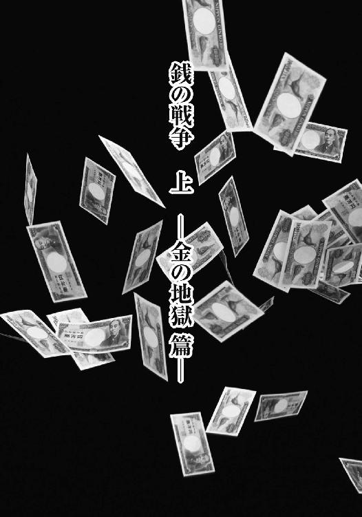

| 銭の戦争 上 (竹書房文庫) | |
| パク・イングォン | |
| (2015) | |
この作品は縦書きでレイアウトされています。
また、ご覧になる機種により、表示の差異が認められることがあります。
一部の漢字が簡略字で表示されていることがあります。
主な登場人物
クム・ナラ.........ソウル大学の数学科を首席で卒業。天才的な記憶力を持つ。
パク・オクスン.........ナラの母。
クム・アチム.........ナラの兄。就職浪人。
クム・イスル.........ナラの姉。
ナム・ユンシク.........イスルの夫。失業中。
スヒョン.........イスルの息子。２歳。
ハン・サンイル.........債権回収人。
ファン・ワンヨン.........ナラの大学時代の担当教授。数学・経済学・金融の博士。
チャン・チグク.........ヤミ金業者。
チェ・サンピル.........チグクの部下。
マ・ヨンダル.........国城刑務所で服役中の新木浦派の親分。
チュンべ.........ヨンダルの子分。
トクゴ・チョル.........伝説の貸金王。

著者まえがき
金に泣き、金に笑う。
金は天下の回り物、とはよく聞くが、そうは言っても、あるところにはいつもあり、ないところにはいつもない。それが金というものではないだろうか。
いずれにせよ確かなのは、金がある者はある者なりに、ない者はない者なりに、今この瞬間にも頭を抱え、苦悩しているということである。
つまり〝金〟がこの世に存在する限り、裕福であろうが貧乏であろうが、誰もが金に苦しめられる。
それならば、金があってもなくても、それを表面に出さずに暮らすことのできる〝心の豊かな人〟が、金との戦いで真の勝利を手にした者なのではないだろうか。
何かの束縛から自由になるためには、何かを手放さなければならない。
たとえ野望を抱くとしても、野望の奴隷になってはいけない。
野望の奴隷となった瞬間、野望は欲望となり、欲望を満たすための思考に支配され、ついには分不相応な強欲を抱くことになる。そして、それは自己を破滅へと導くだろう。
金銭的余裕などなくても、自分は豊かなのだ、と思える心のゆとりができたとき、われわれはすでに富を手にしているのかもしれない。
第一にあるべきものは、金ではなく、心なのだから。
『銭の戦争』は〝金〟についての物語であり、〝金〟のために自分を失い、家族までも失った男が、〝金〟を通して復讐を遂げるために貸金業者になる物語である。
すでに漫画として刊行された作品を新たに小説化したのは、漫画という媒体では十分に描ききれなかった部分を詳しく描写したいと考えたためだ。
心のゆとりを奪う現代社会は、人々を〝金〟の奴隷へと駆り立ててゆく。
しかし、本作品の読者には、〝金〟そのものにばかりとらわれず、より広い視野を持つことを望みたい。先に述べたように、〝心の豊かな者〟が真の勝者なのだから。
本作品を書くにあたっては一年以上も現場取材に駆けずり回り、数々の苦労を重ねたこともあり、作中では貸金業者、クレジットカード業界など、第三金融（金融機関と定義されない登録貸付業者）についてうまく描き出すことができたと自負している。
貸金業界に関する知識がないがゆえに借金地獄に陥りかねない読者の方々にとって、本作品がリスク回避の参考になれば幸いである。
二〇〇七年六月
パク・イングォン
第一章 血を吸うカード
警察は、男の死を自殺と断定した。
男は、縦五・四センチ、横八・五センチのプラスチック板にすぎないクレジットカードを鋭く研ぎあげ、自分の首をかき切った。
わずかに残された他殺の可能性を打ち消したのは、遺書の存在だった。
遺体の横にあった遺書には、短く一言、こう書かれていた。
──おまえたちはカード地獄に陥るなよ。
「カードローンによる多重債務を苦にした自殺ですね」
「今まで見た中で、一番説得力のある遺書だな」
警察官たちの会話をじっと聞いていたクム・ナラは、否定の言葉が喉元まで出かかった。
違う。
父さんの死は、自殺なんかじゃない。
しかし、台所の砥石で研いだカードで首をかき切ったその姿は、どう見ても自殺であることが明らかだった。
そのため、ナラはうめき声を殺し、否定の言葉を必死に飲み込むしかなかった。喉元を下って体内に押し戻される言葉の一つ一つはとてつもなく苦く、喉に鋭く爪を立て、焼けつくような痛みを残した。
ＩＭＦ危機以降、定年まで勤め上げるつもりだった職場から解雇された父が始めた事業は、金の卵を産むガチョウになってほしいという期待とは裏腹に、ひっきりなしに食べ物をねだる餓鬼となった。
その飢えた餓鬼が、父の退職金はもちろん、カードローンで準備した事業資金まで食いつくし、ついには父の生命までも飲み込んでしまったのだ。
わずか十坪にも満たないアパートの台所の片隅で、父は眠った子を起こすまいとするかのように、ひっそりと音もたてずにカードを砥石にこすりつけたことだろう。
カードの刃が頸動脈を切り裂くその瞬間まで、父は生きることを望んだだろう。
それなのに、返済の見込みも立たないほど膨れ上がった借金が、父の耳に、じきに妻子の視線にも耐えられないほど罪悪感にさいなまれるぞとささやきかけ、手のひらほどのプラスチックカード一枚が、人生の速度よりも速く父の生命を奪ってしまったのだろう。
血のにおいに包まれながら、遠のく意識の中で父は考えただろう。
景品の密閉容器セットに釣られて路上で安易にクレジットカードなど作らなければ......銀行員の勧誘に乗せられてキャッシング機能つきクレジットカードなど持たなければ......とりあえずカード契約の営業実績だけ作ってくれればすぐに切り刻んでかまわないとすがる旧友の頼みなど振り切っていれば......こんなはめにはならなかっただろうと。
カード地獄で膨れ上がった三億ウォンの借金は、確かに父の借金である。
なのに、父はただの一度も、その金を手にしたことがなかった。
毎月めぐってくるカードの決済日に合わせ、別のカードのキャッシングを利用してＡＴＭから現金を引き出し、それをカード決済口座に入金する。そして、再びそのカード会社から金を下ろして利用するといった調子で、三億ウォンという借金ができるまで、父の人生は常に崖っぷち状態だった。
父に過ちがあったとすれば、それは、家族の失望と嘆息に耐えるほどの図太さがなく、借金地獄にはまりながらも家族からの信頼と笑顔を切望したということ。
父は、死へと追いやられたのだ。
そう考えると、父の死は自殺ではなく、不可抗力による他殺だったのではないか。
しかし、現実の冷酷さを知っているクム・ナラは、そんな思いを口にはできなかった。
早朝、父はカードを首に突き刺して死んだ。
それが、家族にとって大黒柱の喪失を意味するばかりか、一家をまるごと地獄へと引きずりこむ破滅への序曲となるとは、そのときのナラは夢にも思っていなかった。
＊ ＊ ＊
還暦を目前にしたパク・オクスンにとって、寺へと続く石段の勾配はあまりに急すぎた。
一段上がるごとに膝が悲鳴を上げる。それでも、仏様に祈りが届くなら膝などくだけてもかまわないと、彼女は思っていた。
朝露に濡れながら無量寿殿の仏塔に向かって賽銭を投げ、家族の平穏をひたすら祈ることは、彼女にとって日々の務めであり、この十年、一日たりとも欠かしたことがない。
ほんの数百ウォンのもやしを買うときでさえ八百屋の店主と神経戦を繰り広げる彼女は、バス代を惜しみ、数年前からは毎日、五つも手前の停留所で降りて寺まで歩いていた。
今日も停留所五つ分の距離にきしんだ膝のあえぎを黙殺し、きつい石段をやっとの思いで上がりきった。そして、寺の蓮池にある仏塔の前に立って額の汗をぬぐい、池の中に五百ウォン硬貨を一枚、心をこめて投げ入れた。
蓮池の底には、人々がかけた願いの数だけ小銭が沈んでいた。
「オクスンさん」
呼ばれて振り向くと、一人の僧侶がそろりと近づいてきた。
オクスンは手を合わせて会釈した。
「おはようございます、和尚さま」
「急いでご自宅にお戻りになったほうが......」
僧侶の声が震えていた。
毎朝、寺への出がけに聞かされた小言が、今朝はなかった。いつもと違うとは感じたが、まさか夫が自殺しただなんて、オクスンにはどうしても信じられなかった。
ポケットに手を入れると、くしゃくしゃになった一万ウォン札に指が触れた。大通りに出たらすぐにタクシーをつかまえて帰らないと。気持ちが急いて仕方がないが、夫の自殺は何かの間違いだと、自分に強く言い聞かせる。
雨が降ろうが雪が降ろうが、一日も休まず仏塔に小銭を投げ、心をこめて祈りを捧げてきたのだ。そんなひどいことが、どうして起ころうか。
慈悲深い仏様が自分の真心を踏みにじるわけがない。その信心を確認しようと、オクスンは帰宅の足を速めた。
しかし、寺の石段はあまりに急勾配すぎた。
いつもは仏塔に手を合わせたあとに本堂の前庭に出て、帰りの石段をちゃんと下れるよう、柳の根方にあるベンチに腰かけて足を少し休めることにしている。それを思い出したときにはもう、ふらついた彼女の足は段を踏みはずし、バランスを失った体が地面へ向かって転がり落ちていた。
「なんてことだろうねえ。ご主人が自殺したその日に、奥さんまであんな事故に遭うなんて。神も仏もあったもんじゃないねえ」
「石段から落ちたとき、頭をひどく打ったそうよ。命が助かったとしても意識が戻るかどうかわからないんだってさ」
「ご主人も死んでも死にきれんなあ。カード地獄で死ぬだけでもやるせないのに、奥さんまであんなになっちゃ」
ほかの通夜と比べても特別変わった様子のない、話し声が賑やかに飛び交う通夜だった。
故人の人生がいい人生だったと語る者は誰一人いなかったが、その死を悼むために訪ねてくる人はあとを絶たなかった。
クム・ナラは兄のアチムの横で安堵のため息をついた。
「よかったよ、兄さん。これだけ香典が集まれば、葬儀を終えて、母さんの手術代にもいくらか充てられそうだ」
「おまえに任せるよ。俺には口を出す資格なんてないから」
目に生気がなく、憔悴しきった様子のアチムが力なく答えた。
大学を卒業してから実に五年もの間、就職に失敗し続け、逃げるように山寺に引きこもってしまったアチムは、父親の死に直面してさらに肩身を狭くしているようだった。
これまでの人生で〝成功〟の文字におよそ縁のなかった兄を見ていると、ナラは憐れみを覚えずにはいられなかった。
死んだ父は、名門ソウル大学に入学した次男ナラを周囲に自慢していた。けれど、その愛情あふれる視線の先にいつもあるのは、優秀な弟に引け目を感じて一度も胸を張って歩いたことのない長男アチムの姿だった。
「ごめんな、ナラ」
小さな目にあふれる涙をこぼすまいと、アチムはぶ厚い黒縁眼鏡に手をやりながら、じっと床を見つめている。
父さんが死んだのは兄さんのせいじゃない。ナラがそう声をかけようとしたとき、突然、五人のいかつい男たちがどやどやと通夜会場に入ってきた。
「見上げた兄弟愛だぜ。くたばった親父さんも、さぞかしお喜びのことだろうな」
「何かご用ですか？」
「貸した金を返してもらおうかと思ってな」
ヤミ金業者だ。
金融業と名乗っていても、彼らのやっていることは暴力団と大差ない。
ナラは、ドキュメンタリー番組で見た、体を巨大化させるために犬のエサを食べるという暴力団員を思い出した。凶悪な目つきでにらみつけてくるこの五人も、やはり犬のエサでも食べたのか巨漢ぞろいで、硬そうな皮膚を持ち、息を吐き出すたびに排水溝のような臭気を放っていた。
「くたばった奴はともかく、金だけは返してもらおう。いただくものはいただいてくぞ」
「金よこせ！」
そう言って香典袋を手当たり次第にかき集め始める。ナラは彼らを制止しながら叫んだ。
「何するんだ！ これは父さんに天国まで持たせる金だ！」
「うるせえ。がたがた言うなら、おまえがあの世に持ってく金を俺が用意してやろうか！」
「......！」
ナラは男の眼光に口をつぐむしかなかった。下手に抵抗でもしようものなら、その場で半殺しにされかねない。
弔問客たちがざわつきながら男たちに目を向けると、巨漢の一人が怒鳴った。
「何見てんだよ！ 通夜ってもんは賑やかにするんじゃねえのか？ こっちは気にせず、どうぞお食事でも続けろってんだ！ それとも、くたばった親父さんの大親友で、俺らのことが気に入らねえって奴がいるのか？ だったら、かかってきやがれ」
ぎらついた目を向けられ、弔問客たちはあわてて視線をそらした。
ヤミ金業者はその場にあった香典を一つ残らずかき集め、歯嚙みしながらにらみつけるナラに向かってにやりと笑いかけた。
「そんなに怖い顔をしなさんな、坊ちゃんよ。これから、たびたび会う仲じゃないか」
「何の話だ？」
「くたばった親父さん、カードで首をかっ切りゃすべて終わりだと思ったようだが、そりゃあちっとばかし考えが甘いってもんじゃねえか？ ソウル大の数学科を首席で卒業したあんたはよくご存じだろうが、他人の金を使っておきながら無責任にくたばって、はい終わり、なんてことがまかり通るなら、誰が金なんか貸すかってんだ」
ナラは声を失った。ソウル大の数学科を首席で卒業したことまで調べ上げてあるとなれば、今のが口先だけの脅しとは思えない。
魂の抜けたようなナラをおもしろそうに見ていた男が言った。
「また、お会いましょう」
それは、父の死と母の事故が、ことの〝終わり〟ではなく〝始まり〟であることを告げていた。
第二章 ああ、母よ！
耐えがたい苦境に落ちた者は誰でも、その責任を他人や運命、もしくは神になすりつけようとするものだ──。
遺灰を海にまき、父を見送ってから病院へ戻ったナラは、姉を見つめながら、そんな言葉を思い出していた。
姉のクム・イスルは、借金の総額が三億ウォンを超えると聞くなり、酸素マスクを着けた意識のない母に怨み言をぶつけ、次いで矛先を兄のアチムへ向けた。
クム家の長男は消え入りそうな声で「すまん......」と言った。
「すまん？ お父さんが自殺して、お母さんは植物状態だっていうのに、すまん、しか言うことはないの？」
とがめるような彼女の口調に、アチムは無言でうなだれている。
「やめろよ、おまえ」
幼い息子を抱いているナム・ユンシクがそっと注意した。
体がきゃしゃで背も低いユンシクは、結婚してから一度も妻に口答えすることなく過ごしてきた。そんな彼でも、肩を落としたアチムを責めたてる妻の態度は目にあまり、勇気を出して口をはさんだのだろう。
「義兄さんも、やりきれないんだよ。それでなくても長男なんだし......」
「何が長男よ。就職もできずに、勉強のためだって山になんかこもって、そんな恥知らずのどこが長男だって言うのよ！」
怒りを爆発させる彼女に、ユンシクは余計な口出しをしたと後悔したが、すでにあとの祭りだ。彼女にとって怒りをぶつける相手は誰でもかまわない。次の獲物はユンシクだった。
「あんただって一年半も無職じゃない。ただ飯食いの分際で、どっちの肩を持つつもり？」
「......」
「兄は五年も就職浪人やってて、旦那は甲斐性なしときた。私の人生、どうしてこんなにツイてないのかしら。本当に自殺すべき人間は誰よ？ いっそ石段から落ちて寝たきりになったほうがいい人間は誰なのよ？」
アチムとユンシクは彼女の吐く毒に心をえぐられながらも、黙って耐えるしかなかった。
そのときだ。
「すみません、失礼します」
挨拶とともに一人の男が病室のドアを遠慮がちに開けた。
「あの......クム・ナラさんにお会いしたいのですが」
「信用情報会社キャピタルの債権回収を担当しております、ハン・サンイルと申します」
男はナラと休憩室に入ってから名刺を差し出し、静かに話し始めた。きわめて丁寧な口調ながら、彼の口から出た言葉はナラを凍りつかせた。
「お父上は、自殺という極端な方法で〝債務返済回避〟をした〝不良債務者〟となります。しかしながら、ナラさんがいらっしゃって幸いです」
「それは、どういう......」
「契約書類では、ナラさんが連帯保証人になっていますね。ご存じでしょうが、債務者が死亡した場合、その借入金は自動的に保証人へと相続されます。つまり、三億ウォンの借金はそっくりそのままクム・ナラさんの借金になるわけです」
「......！」
ナラは愕然としながら思い出した。確か父の事業が傾き始めたころ、父から差し出された書類に署名、捺印をした覚えがある。友人と会う約束があったため、すみずみまで目を通す時間の余裕もなく、父に催促されるがままに書類を作った。あれが連帯保証書だとは、今の今まで気がつかなかった。
ハン・サンイルは勝ち誇るように微笑んだ。
「あなたは、名字がクム（金）で、名前がナラ（国）......つまり、〝黄金の国〟です。そのような名前をつけられたお父上は、きっと将来を見越されていたんでしょう。あなたが金脈でも掘り当てて借金を返してくれるだろうと」
ナラは吐き気をもよおし、今にも胃の中身をぶちまけてしまいそうになった。
敵意をこめてハン・サンイルをにらみつけ、休憩室を飛び出す。
これ以上話を聞くのは、胸が張り裂けそうで耐えられなかった。
ヤミ金にカードローンまで。
父の首を絞めていたものが、今度はナラの首を絞め始めたのだ。
「この野郎！」
寺に着いたナラは、敷地内の倉庫から大きなハンマーを持ち出し、目に怒りの炎を燃やしながら仏塔に向かって駆けだした。
その様子を目撃した僧侶たちは、彼が仏塔を破壊しようとしていることに気がついた。
「ああ、なんてことを！」
「お母さまのことは胸が痛みますが、落ち着いてください。仏様が見ておられます」
僧侶たちが駆け寄ってナラを制止しようとしたが、怒りにわれを忘れた彼の動きを止めるには、僧侶たちの力はあまりに弱すぎた。
「笑わせるな！ 仏がいるなら、どうしてこんなひどいことが起こるんだ！」
重いハンマーを狂ったように振り回しながら、ナラは叫んだ。
「母さんは十年もの間、一日も欠かさずに賽銭を投げて家族の幸せだけを祈ってきたんだ！ なのにそのお返しが、よりにもよって同じ日に夫婦そろってこんな目に遭うことなのか！」
ガン！ ガン！
ナラがハンマーを振り下ろすたびに、十年間の信心に対する不義を詫びる声であるかのように、仏塔の壊れる音が境内に響き渡った。
しかし、仏塔が破壊されていくほど、ナラの心もひび割れていった。
いくら悪態をつき、恨みをこめてハンマーを叩きつけても、彼の心の片隅には仏塔への、仏への、最後の期待が残っていた。
もしも仏がいるならば、母さんがあれほどすがっていた仏塔がもしも本当に神聖なものならば、ハンマーを振り回している自分に天罰が下されるだろう。
もし自分に天罰を下す仏がいるのなら、意識不明のまま死線をさまよっている母さんを必ず助けてくれるはずだ。
むしろそうなることを願い、ナラは力の限りにハンマーをふるった。
なのに何も起こらない。
仏塔が粉々になっても、天罰は下らなかった。
希望を打ち砕かれたナラは、再び怒りの形相となって本堂へ向かった。
「今まで仏塔に投げた母さんの賽銭を全部返せ！ さもなきゃ、みんなぶっ殺してやる！」
石の塔を壊しただけでは飽き足らず賽銭まで返せと騒ぎ立てるナラに、僧侶たちはあきれ果て、彼を追い返そうとしたが、寺の住職だけは黙って封筒を差し出した。
「私たちからのお見舞いです。心の傷を癒してさしあげることはできないかもしれませんが、少しでもお力になれれば......」
寺の職員や若い僧侶たちは、見舞金を用意した住職の懐の深さに感心し、ナラもそれを受け取って住職に感謝するだろうと思った。
ところが、ナラの反応は彼らの予想を裏切った。
「ふざけるな！ 俺は物乞いじゃない！ 母さんの投げた賽銭を返してほしいだけだ！」
封筒を手にしたまま戸惑う住職に、ナラはきっぱりと告げた。
「五百ウォン玉を一日に一枚ずつ！ 一年で三百六十五枚。十年だから三千六百五十枚。金額にすると、五百の三千六百五十倍で百八十二万五千ウォン！ 今すぐ持ってこい！」
寺の僧侶たちは、あっけにとられた。
仏塔の蓮池から回収した賽銭は週に一、二回の割合で銀行に入金しているため、三千六百五十枚もの五百ウォン硬貨が寺にあるわけがない。
とはいえ、そうしなければ殺気立ったナラを追い払えないと感じた住職は、急いで職員たちに手配を命じるしかなかった。
五百ウォン硬貨を三千六百五十枚集めると、小さな布袋一つ分になった。
僧侶たちが寺にある硬貨をすべてかき集め、さらに職員たちが近くにある銀行を駆け回ったすえの成果だが、そのためにかなりの時間が費やされた。
袋を背負ったナラは、その重さに驚いた。
それもそのはず、五百ウォン硬貨一枚の重さが七・七グラムだから、三千六百五十枚の重量は二十八キロにも達する。
一歩また一歩と足を前に進めるごとに、硬貨と硬貨のぶつかる音が背中から聞こえた。勾配の急な寺の石段を下るとき、バランスを崩しかけたりもした。
そのたび、ナラは母のことを思った。
家族の幸せを祈るためにこの石段を上り下りするたび、母はこれ以上の重みを感じたに違いない。
それなのに、十年も心をこめて祈りを捧げてきた報いがこれなのか。
あまりに理不尽で、涙が浮かんできた。
石段を下ったナラがしばらく歩いていくと、街道沿いの鋳物工場が目にとまった。ふと思い立ち、賽銭の袋を背負ったまま工場に飛び込んだ。
「この硬貨を溶かして、ナイフを一つ作ってほしいんですが。作れますか？」
「作れないことはないですが......硬貨でナイフなんか作って、どうするおつもりで？」
ナラは返事をせず、五百ウォン硬貨を工場のコンクリート床にばらまいた。
工員たちが珍しい大道芸でも見るように集まってきたが、ナラは彼らには目もくれず、足元に散らばった硬貨を鋭い目つきでにらみつけた。
神や仏がいるのなら、硬貨で作ったナイフを彼らに向かって振りかざしてやりたい。
しかし、神も仏もいないのだ。
少なくとも彼の家族にとっては、神や仏が存在しないのは確かだった。
＊ ＊ ＊
「簡単ではありませんが、とりあえず手術してみましょう」
医師は険しいまなざしで検査結果に目を通し、慎重な態度でそう言った。
ナラは医師をじっとうかがった。簡単ではありませんが、と切り出した医師の顔から、母の容体について真実を読み取りたかった。回復への希望を見出したかった。
検査データから顔を上げた医師は、どこか事務的な口調で告げた。
「今日中に手術保証金、千三百五十万ウォンを振り込んでください。最後のチャンスかもしれませんから、誠心誠意お祈りもなさるのがよろしいかと」
たちまちナラは絶望感に襲われた。
それは〝最後のチャンス〟という言葉のためではない。
手術保証金、千三百五十万ウォン......。
父の葬儀で集まった香典はすべて貸金業者に奪われ、〝母さんの賽銭〟として寺から回収した金は手術保証金にするにはあまりに少ない。
ナラは唇を嚙んだ。しかし、だからといって黙って手をこまねいてはいられない。
わずかな望みをかけて、彼は姉のもとを訪れた。
「手術の保証金を出せですって！ なに寝ぼけたこと言ってるの？」
いらだちもあらわな姉イスルに、ナラは吐息まじりに答えた。
「しょうがないじゃないか。携帯電話も大学時代の本もオーディオも全部売っ払ったけど、五十万ウォンにしかならなかったんだ」
「ちょっと、あんたの義兄さんはこの一年半、無職なのよ。私が保険のセールスで稼いだお金でどうにか食べてるってこと、知らないの？ 家でも売れって言うの？ 家を売って、まだ年端もいかないスヒョンを抱えてホームレスにでもなれって？」
「じゃあ、母さんがどうなっても......」
「それをどうして私に言うのよ！ ソウル大出身の賢いあんたがなんとかしなさいよ。あんた、学友ぐらいいないの？ ソウル大を出たんだったら、出世した同窓生も多いでしょ？ その人たちには恥ずかしくてお金も借りられない？」
「もう行くよ」
ナラは固く口を結び、きびすを返した。
ソウル大の数学科を首席で卒業したとはいえ、彼にはそのときの友だちなど一人もいなかった。人との交わりを好まない性格のせいもあったが、講義が終わればコンビニ、それから明け方の青果市場へ、というアルバイト漬けの生活で、友だちとつき合う時間もなかったのだ。
とはいえ、彼にはイスルを恨むことができなかった。
誰もが成績優秀と認める末っ子がソウル大さえ卒業すれば、悠々自適に暮らせる......そう期待した無邪気な両親のせいで、姉は自分の人生で多くのものを諦めなければならなかった。
本当は看護師になりたかったのに、弟の塾代を捻出するのにも苦心していた両親のために、姉は看護短大の合格証を破り捨てて工場に就職した。
そうして大学に入った弟は奨学金で学費をまかなったが、父がリストラ後に始めた事業がかんばしくなく、姉は給料を一家の家計の足しにせざるを得なかった。
そんな貧困のサイクルから脱け出すために姉が選んだ道は、結婚だった。ところが、夫となったナム・ユンシクはたった二年で失業者になった。
不運だったと言えばそれまでだが、クム・ナラが弟でなかったら、姉の人生はまったく違うものになっていたかもしれない。
そんな事情に対して負い目があるので、ナラは姉の言い分には異を唱えられず、ましてや悪態をつくなどもってのほかだった。
イスルの家を出たナラは、行くあてもなくさまよい歩いた。
すぐにも母の手術保証金を用意しなければならないのに、そんな金を貸してくれる知り合いなどいない。
かろうじて思いついた相手は、高校時代の友人で、今はときどき連絡する程度のパク・ソンフンだった。
貨物トラックの運転手である彼にそのような大金があるとは思えなかったが、ナラはとりあえず公衆電話を探した。
それは意外とすぐに見つかった。
『俺には金なんてないけど、方法が一つ、あるにはあるな』
受話器から聞こえてくるパク・ソンフンの声に、ナラは希望を感じた。藁にもすがる思いで尋ねる。
「どんな方法だ？」
『おまえ、ヨンギュを知ってるだろ？ キム・ヨンギュ』
「高校で有名だった、不良の？」
『そうそう。あいつ、ＩＴだか何だかで大儲けしたんだってよ。コスダックに上場して、そっちでも成功してるみたいだ。恥を忍んで、一度会いに行って頼んでみろよ。友だちなら、たった一千万くらい頼んだところで知らんぷりはしないだろうよ』
一筋の光明なのかもしれない。しかし、電話を切ったナラはにわかに気が重くなった。
キム・ヨンギュ。
高校で有名だったごろつきだ。
高校時代の不良少年には、チンピラとごろつきの二種類がいた。けんかも強く、遊び歩くことも好む不良少年はチンピラと呼ばれ、チンピラのあとを肩を怒らせながら周囲を威嚇して歩く不良少年はごろつきと呼ばれていた。そして、ごろつきたちは、チンピラと一緒にいるときだけその威力を認められた。
いずれにせよ、成績のよい、いわゆる〝模範生〟だったナラは彼らと接することなく、平穏な学校生活を送っていた。
ところが、キム・ヨンギュとだけは違った。
出席番号がナラのすぐ後ろだったヨンギュは、試験のたびにナラを苦しめた。後ろの席から足を伸ばしてきて、マークシート問題の正解番号を足を蹴る回数で教えろと要求したり、試験終了十分前に答案用紙の交換を迫ったり、答案用紙を強引に奪ったりもした。
学年一位の座を誰にも譲ったことのなかったナラとしては、見過ごせない問題だった。
そこで、もう答案用紙を見せない、と主張した。
しかし、いわゆる〝校内暴力団〟の一員で、傍若無人そのものだったヨンギュが、そんなナラを放っておくわけがない。
ついに事件が起こった。
生徒がみんな集まっている教室で、ヨンギュがナラに殴りかかったのだ。
誰も彼らを止めなかった。
ただし、床に倒れ込んだのはヨンギュのほうだった。
ナラが相手のパンチをかわし、それまでの鬱憤を晴らすかのようにがむしゃらに殴りつけたところ、ヨンギュがのびてしまったのだ。
その瞬間、一時期は〝チンピラ〟として名を馳せていたヨンギュが、実はただの〝ごろつき〟だったことが明らかになった。
入学したときから校内暴力団とつるんでいたヨンギュのことを、周囲の誰もが〝けんかの強いチンピラ〟だと思っていた。ところが、不良の出世頭だと思われていた彼が、勉強しか能のない模範生ナラのパンチに負けたのだ。とたんに状況が一変した。ヨンギュと仲のよかった校内暴力団の仲間が彼から離れ、それまでヨンギュの暴力に反抗できずに抑圧されていた生徒たちが彼を見下すようになった。
ヨンギュは、ナラとの一件のせいで、高校を卒業するまで小さくなって過ごさなければならなかった。
そんなこともあり、ナラはヨンギュに会いたくなかったのだ。
それでも、彼は意を決した。
母に手術を受けさせられるなら、どんなことでも耐えられる気がした。
＊ ＊ ＊
ソンフンの言うとおり、ヨンギュの会社はたいそう立派なものだった。
江南テヘラン路の真ん中にあるビルまるごとがヨンギュの会社であるという事実だけでも、彼と同い年のナラが劣等感を抱くには十分だった。
入学式に父が買ってくれたスーツは、今や流行遅れで古ぼけている。そんなスーツを着てきた自分の姿がみじめに見えはしないかと、トイレの鏡に映してみながら、あらためて自分に言い聞かせた。
「大丈夫。うまくいくさ。何がなんでも助けてくれって頼みこむんだ」
「少々お待ちくださいますようにと、社長からの伝言です。そちらにおかけになっていてください」
ラベンダーの香りをぷんぷん漂わせながら現れた秘書は、社長室の前で居心地悪く立っているナラを、応接室に案内した。
「ありがとうございます」
ナラは秘書に頭を下げた。ひょっとすると門前払いかもしれないと危惧していたので、会ってくれるというだけで、病床の母が助かるような気がした。
ナラは応接室のソファにすわり、ヨンギュに呼ばれるのをひたすら待ち続けた。
秘書が初めに置いていったコーヒーカップを下げ、次に緑茶が運ばれてきたが、まだ呼ばれる気配がなかった。
そして、緑茶の湯吞み茶わんが片づけられ、もはや秘書さえ自分の存在を気にかけていないという事実に気づいたときには、来社から五時間ほどの時間がたっていた。
ナラはぎこちない笑みを浮かべ、秘書に尋ねてみた。
「あの......ヨンギュは、まだ忙しいんでしょうか？」
「あら、社長はもう帰宅しましたけど」
「え？ さっきは、そこで待つようにとのことでしたけど......」
「少々お待ちください。ただ今、確認いたします」
どこかへ電話をかけている秘書を見つめながら、ナラはまるで奈落の底へ落ちていくような錯覚に陥った。今日中に手術保証金を振り込まなければならないというのに、銀行が閉まる時間が刻一刻と近づいていた。
「社長が、バイヤーとの急なアポイントのために勘違いしたようです」
「では、どうすれば？」
「社長がいるお店をお教えしますので、そちらに行かれてみてください。そこで社長がお待ちしております」
秘書に教えられて駆けつけた場所は、ネオンがきらめくルームサロンだった。
ところが、店の前でナラを迎えたのはヨンギュではなく、彼の運転手だった。
「カン秘書から連絡をいただきました。社長はただ今、大切なバイヤーを接待中ですので、外でしばらくお待ちください」
再びヨンギュを待つことになったが、ナラは文句一つ言わなかった。
彼には選択の余地などないのだ。
時刻はすでに午後九時を回っていた。それでも、ヨンギュが商談を無事終えれば必ず助けてくれるはずだと信じ、ナラは彼の仕事がうまくいくことだけを祈った。
ようやくヨンギュが姿を見せたのは、真夜中になってからだった。
「ああ、酔っぱらったな」
その聞き覚えのある声に、店の前でうずくまっていたナラは弾かれたように立ち上がり、身なりを整えた。
ホステスらしき女性と二人で、酔いつぶれた外国人バイヤーを支えながら出てきたヨンギュは、彼女の胸元に小切手をねじ込んだ。
「おい。今夜、こいつをモノにできなかったら、そのときは覚悟しろよ」
「ふふ。心配しないで、社長さん」
「パク運転手。ミスター・ボルコフを宿泊先まで送ってくれ」
バイヤーとホステスを乗せた車が遠ざかるのを見送ると、ヨンギュは急に近くの電柱にもたれ、嘔吐し始めた。
「うっ......うええっ......」
「おい......ヨンギュ」
ナラは近づいてためらいがちに言葉をかけたが、酒でふらふらになったヨンギュにはナラの声など聞こえないようだった。
「ちくしょう。ウォッカばっかりあんなに飲みやがって。おえっ......」
ナラは、身を震わせて嘔吐するヨンギュの背中をさすってやった。
「何だってそんなに飲んだんだよ」
「......誰だ？」
「わからないか？ クム・ナラだよ。高校のとき、おまえの答案用紙を書いてやったじゃないか」
そこで、ヨンギュが急ににんまり笑った。しかし、その笑みは歓迎の笑みではなかった。
「長生きした甲斐があったなあ。高校で一番の秀才が、金欲しさに何時間も俺のあとを尾け回すだなんて」
「き......気づいてたのか」
「う......うええっ......同窓生ってだけで金をたかりに来た奴は、おまえで二十七人目だ」
おそらく本当なのだろう。ことさら景気の悪いこの時代、ヨンギュのように成功した同窓生がいれば、少しぐらい助けてもらえないかと思うのが人情だ。
それでも、自分は今まで彼を訪ねてきた友人たちとは事情がまったく違う。本当に追いつめられた状況なのだ。だから、ヨンギュはきっと助けてくれるだろう。
ナラはやっとの思いで口を開いた。
「実は......おふくろが倒れたんだ。それで、保証金を払えなくて、手術を受けられないでいるんだ」
「二十七人中、四人がそう言ったな」
「親父まで死んでしまって。カードローンのせいでな......」
「その話も二度目だ」
胃の中身をきれいさっぱり吐き出したヨンギュは、正気を取り戻したように体を起こし、ナラを見つめてくる。ナラはにじり寄った。
「噓じゃない。俺......切羽つまってるんだ」
「切羽つまってる？ どれだけ？」
ヨンギュの目には軽蔑の色が見て取れた。
だが、もはやナラに残された道はほかにない。どれだけ切羽つまっているかを今すぐ証明してみせなければ、と地面にしゃがみこんだ。
プライドなど、すでにない。
ナラは地面にまき散らされたヨンギュの吐瀉物を手でかき集め始めた。
冷たいアスファルトの上にまき散らされたそれは生ぬるくべたつき、酒と消化途中の食べ物を混ぜた酸味を帯びたにおいを放っていた。
ナラの行動を眺めていたヨンギュが、さもおもしろそうに言った。
「そんなものをかき集めるほど切羽つまってるってことか？ どうせなら、そいつを飲み干して......」
そこまで言ってヨンギュは言葉を失った。
ごくり、ごくり。
ナラは両手いっぱいにすくったものを、口の中に流し込み始めた。
「どれだけ切羽つまってるかって？ 俺がおまえの吐き出したものをこうして飲んだら、信じてくれるか？」
口の中を吐瀉物でいっぱいにしてしゃべったナラは、むかつきのあまり吐き出してしまいそうだったが、必死に口を閉じて飲み下し始めた。
強烈な生臭さと酸味が鼻をついた。
青ざめたヨンギュがよろよろと後ずさりした。
「おええっ！ イカれてやがる！」
ナラはヨンギュの足にすがりついた。
「おふくろに......おふくろに手術を受けさせてくれ」
ナラにとって、ヨンギュが最後に残された希望だった。他人が吐いたものまで口にほおばって、追いつめられていることを証明したのだ。必ずや助けてくれるはずだ。
しかし、返ってきた答えは冷淡そのものだった。
「なぜ？ なぜ俺が助けなきゃいけない？」
「俺がどれだけ追いつめられてるか、わかっただろ？ 頼むから......」
「おまえの絶望感はわかったさ。だけど、俺はおまえのせいで高校の三年間、死んだように過ごさなくちゃならなかったんだ。あのときの俺の絶望感はどうしてくれるんだ？」
「だけど、今はおふくろの命がかかってるんだ、助けてくれよ。頼むよ」
するとヨンギュは口元をゆがめて言い放った。
「おい。おまえにとってはおふくろさんの命が大事かもしれないが、俺にとってはあのとき味わった屈辱感のほうがもっと重要なんだ。おまえのおふくろさんがどうなろうが、俺の知ったこっちゃないさ」
「......」
突き放すようなヨンギュの言葉に、ナラは何も言い返すことができなかった。
他人の大きな苦痛より自分の小さな苦痛のほうがよりつらいと感じるのが、人間の本質だ。
現実は冷たかった。
第三章 千辛万苦
「常識的に考えてみてくれ」
経理部長の冷ややかな声にナラはうなだれ、口を閉ざした。
債権回収担当ハン・サンイルからの度重なる電話は、ナラが働く事務所に多大な業務妨害をもたらしていた。
そして、ヤミ金業者が毎日のように訪ねてくるせいで、同僚たちの出勤も脅かされていた。平凡な事務所に険悪な面持ちの男がどっかりすわり込んでいては、それだけで威圧されてしまう。その上、男は経理部で働くナラに対し、会社の金を横領してでも返済しろと冗談のように言うのだが、会社側としては冗談で聞き流せる類の話ではなかった。
そんな状況では、ソウル大出身の部下に大きな期待をかけていた経理部長も、ナラをかばいきれなくなっていた。
ナラは静かに立ち上がった。
「辞めさせていただきます」
「クム・ナラさん。なに携帯切ってるんだよ」
病院に押しかけたハン・サンイルはできるだけ穏やかに話しかけた。とはいえ、どうしても口調にいらだちが表れ、以前より言葉づかいも乱暴になっていた。
クム・ナラは半ば自暴自棄になった様子で口をつぐんでいる。回収の圧力に疲れたのか、初めて会ったときは敵意に満ちていた視線も、今ではずいぶんと弱々しい。いずれこうなることは、長く債権回収をしているサンイルにはわかっていた。
「三億三千万ウォンの借金を抱えた連帯保証人が、連絡も取れないなんて困るんだよ」
「生活が立ち行かなくて、携帯電話も売ってしまったんです」
やりきれなさそうにナラが言う。
「あんたたちのせいで職場からも解雇されました。新しい仕事を探しているところですが、今は無一文なんです。叩いたって埃しか出ませんよ」
「その埃でも叩き出すのがわれわれの仕事だってこと、知らないのか？」
「それじゃあ、どうぞ、俺の頭にストローを刺して脳髄でも何でも吸い上げていけよ！」
怒りに声を荒らげるナラに、ハン・サンイルは微笑みを返し、スーツの内ポケットから書類を取り出した。
「今は無理でも、あとからもらえればいいんだ」
彼は開き直る債務者への対処法を熟知していた。
「これは法廷で許可された強制処分承諾書だ。少なくともこれから十年間、おまえが得る財産すべて......つまり給料だろうが車だろうが家だろうが、おまえの財産はすべて強制的に差し押さえることができる書類だ」
笑みとともに発する言葉の一つ一つが、ナラを一歩ずつ絶望の淵へと追い込んでいく。
「そして十年たっても借金を払い終わっていなければ、再び法廷で執行時効を十年延ばしてもらって......それでもだめなら、また十年延長、また十年......おまえが年老いてくたばるまで食いついてやる。全額返してもらうまで容赦はしない」
無言でいるナラの全身が小刻みに震えていた。おそらく憤怒だろう。
「おまえが生きている限り〝泥沼〟から這い出すことはできないってわけだ。自分からくたばりでもしない限りな、おまえの親父さんみたいに......」
言い終えたハン・サンイルは、ゆっくりと病院の駐車場へ歩いていった。
穴のあくほど見つめてくるナラの視線に気づいてはいたが、気にとめる素振りは見せなかった。いくらにらみつけたところで、現実を悟れば、その目つきはすぐに恐れに変わるだろうから。
ナラは拳を握りしめ、ハン・サンイルの背中をにらみつけた。
こみ上げる悪態を歯を食いしばってこらえるうちに、目の前が白くぼやけてきた。
彼はいつしか涙をこぼしていた。
この絶望的な現実でできることは、それだけだった。
＊ ＊ ＊
時がたてばたつほど、現実はさらに冷酷になっていった。
「あの......手術代を用意できませんでした。あと何日かだけ時間をください」
頼みこむように頭を下げたナラに、医師は無表情に言い放った。
「もういいですよ。どうせ手遅れですから」
医師はナラのほうを見ようともしない。
「患者さんが耐えられるところまで人工呼吸器に頼るほかありません」
「つまり......？」
「植物状態になりました」
「それならそうと、なぜ早く言ってくれなかったんですか！ 手術を受けさせるのが遅くなったせいで植物状態だなんて、ひどすぎやしませんか？」
ナラは悲痛な面持ちで訴えた。
しかし、医師は眼鏡をかけ直しながら冷たく言った。
「病院は慈善事業をするところではありません。その上、成功が保証された手術でもなかったので、仕方がありませんでした。残念ですが」
結局、この医者にとって自分と母は、命を守るための手術代さえ用意できない貧乏で面倒な患者にすぎないのだ。
今回もまた、ナラにはできることなど何一つなかった。
＊ ＊ ＊
イスルは今日も契約予定の客との約束を先延ばしにし、病院へ足を運んだ。指先一つ動かせない植物状態になってしまった母を看るためだった。
魂の抜けたような顔の母が、ただ天井を見つめていた。
「お母さん......」
何も答えない母が恨めしかった。
目の前で力なく横たわっている母が、あれほど息子ばかりをかわいがらず、娘が夢に向かって歩めるように一度でもチャンスを与える努力をしてくれていれば、これほどまでにみじめな気分にはならなかっただろう。
酸素マスクに頼ってかろうじて生きている母を見ているうちに、ここに来なければ保険の契約報酬が入ったのにと、未練がこみ上げてきた。
気がつくと、彼女はベッドの母に向かって怒りをぶつけていた。
「どうして私たちを苦しめるのよ。いっそお父さんと一緒に逝っていれば、私たちがこんな苦労をしなくても済んだのに」
「......」
「ろくに面倒も見てくれなかったくせに、私たちにどうしろっていうのよ」
一言吐き出すたびに胸が痛み、自分が情けなくなったが、もはや止められなかった。
「いっそのこと死んでよ！ どれだけ生き長らえて子どもに迷惑をかけるつもりなの？ 私たちがホームレスにでもなれば気が済むの？」
そのときだ。
「母さんには全部聞こえてるよ」
病室のドアの前で、ナラが冷たい目をして立っていた。
「全部聞かせたくて言ったのよ。何か間違ったことでも言った？ 親なら親らしく、子どもに迷惑かけなきゃいいじゃない！ お母さんが......」
恨みのこもったイスルの言葉は最後まで続かなかった。かっとなったナラが「この野郎！」と彼女の顔を殴ったのだ。
イスルは鼻から血を流して倒れた。
「何すんのよ！ よくもやったわね！」
口に血の味がする。痛みよりも、弟に殴られたという事実のほうが屈辱的だった。
イスルも頭に来て、ナラに殴りかかろうと立ち上がったが、騒ぎを聞きつけて来た看護師たちに取り押さえられた。
「何ごとですか！」
「病に伏しているお母さまのためにも、ご家族同士で争わないでください」
イスルは看護師たちに引きずられるようにして休憩室に連れていかれたが、その間、弟に悪態をつき続けた。
「恩知らず！ 姉さんを殴るだなんて、どれだけ偉くなったつもりよ！ 訴えてやるわよ！」
「......」
病室に残されたナラは、押し寄せる後悔の波に鼻の奥がつんと痛んだ。
それは、姉を殴ったことに対する後悔ではなかった。
つらくてもつらいと表現できない母の前で、彼女の心をずたずたに引き裂いたことに対する後悔。
その後悔は、ナラの心をもずたずたに引き裂いていた。
＊ ＊ ＊
母の呼吸がひどく乱れていた。
胸にしこる耐えがたい苦しみを吐き出そうとするかのように、荒い息を繰り返す。
それが母にできる、たった一つの感情表現だった。
そんな母を見つめるナラの瞳には悲しみが満ちていた。頰をつたう涙をぬぐいもせず、無表情な母の顔をじっと見つめていた。
次の瞬間、ナラは信じがたい光景を目にした。
ぴくりともしなかった母の手が、細かく震えだしたのだ。
まるで奇跡のようだった。
漆黒の闇の中で一筋の光を見つけるに等しい、希望の姿だった。
困難に満ちた今までの人生よりも、もっとつらい試練に立ち向かうかのごとく、母はもがくようにして必死に手を持ち上げようとしていた。
だが、ナラはすぐに悟った。それが希望の動きではなく、絶望の動きであることを。
母は痙攣に耐えながら上げた手を宙で止め、酸素マスクのチューブを指さしたのだ。
──抜いてちょうだい。
母は声の代わりに震える指先で、ナラにそう哀願していた。
酸素マスクのチューブを抜いてしまえば、もはや生きていられない。にもかかわらず、母はそれを求めていた。
話すことはできないが、涙を浮かべた瞳が多くの言葉を語っていた。
その瞳の中に、ナラは母の切ない願いを感じた。これ以上は子どもたちの重荷になりたくないという願いを。
「で......できないよ」
ナラは目をそむけ、うつむいた。が、すぐにまた母を見つめた。
幻聴のように聞こえてくる母のささやき声は切実だった。
──ナラ、お願い。
できない。絶対にだめだ。
とはいえ、このまま目覚めたとしても、今まで息子が味わってきた冷たい現実、そして多くの挫折と無力感を母も感じることになるだけだろう。
ナラの心には、さまざまな思いが渦巻いた。
吐き出したいたくさんの言葉を必死に飲み込み、横たわる母を見つめた。
母は顔を苦痛にゆがませながらも、チューブを指さす手を下ろそうとはしない。
驚きから始まったナラの感情は、憐憫から落胆へ、さらに諦めへと変わっていった。
苦しげに呼吸をする母に伝えたいことが、たくさんあった。今までの人生で言えなかったこと、いつかは伝えたいと思っていたことが。
今が、最後の機会だ。
「母さん......愛してます」
物心がついてから今まで、ただの一度も言えなかった言葉。
その言葉を言い終えたとき、ナラは震える手でポケットから父の遺品を取り出した。
あの鋭く研ぎあげられたカード。
他人にとっては自殺の凶器にすぎないが、自分にとっては父の形見であるカード。
ナラは父の命を断ったカードをぎゅっとつかみ、ナイフのように鋭いへりを酸素マスクの細いチューブにあてがった。
少しでも力を入れれば、研がれたカードがチューブを切断するだろう。そして、母はこの苦痛に満ちた人生から解放されるだろう。
しかし、ナラの手はそこから動かなくなった。
手にした薄いカード一枚の重みに耐えられなかった。
父もそう感じたに違いない。
この薄いプラスチックカード一枚が、今まで生きてきた自分の人生の重みであるかのように、ずっしりと感じられたに違いない。
ナラが感じている重みは、単なるカードの重みではなく、命の重みだった。
だから、彼にはできなかった。
母の望みどおりに、母の人生に終止符を打つことができなかった。
ナラは、横たわったまま涙を流すばかりの母の頰に、同じように涙に濡れた自分の頰をすり寄せ、ささやいた。
「母さん......」
病院を出たナラの手には、父のカードが握られていた。
彼はカードを捨てることにした。
父の死の痕跡が残っているカードには、ナラを誘い、そそのかす力がある。
その力がとても恐ろしかった。
金のために追いつめられ、生きることを放棄した父は、絶叫するようにカードで首をかき切った。
それは、〝カード利用〟をそそのかした世の中に対する、怨恨の叫びだったのだ。
二〇〇二年二月現在、韓国におけるクレジットカードの利用金額は六百二十二兆ウォンに達している。そのうち、キャッシング及びカードローンが三百八十兆ウォン。利用金額全体の六十一パーセントを占めている。
九月末現在、四社以上の複数のカードを所持している人は九百九十万人。そのうち、十パーセント以上にあたる百万人を超える人が、借金を返済するために借金をするという悪循環に陥っている。そのような中で、実に三百万人もの人が不良債務者とされている。
倒産の危機に瀕するＬカード会社の場合、一時は利用金額が百六十兆ウォンにも迫る時期があった。当時はカード会社にとって華々しい時代だったのだ。しかし、あとに続いたものは、一兆二百億ウォンもの赤字にあえぐ現実だけだった。多重多額債務者たちの道徳的節度の欠如によるモラルハザードだと騒がれる一方で、実は彼らもまた被害者だった。
バブル経済に沸いた時代、カード会社は契約特典として海外旅行無料券を進呈するなど、熾烈な顧客獲得競争を繰り広げた。顧客を増やすことに専念し、彼らが借金にあえごうがカード詐欺に走ろうがおかまいなしで、天文学的数字の手数料を取り立てることだけに奔走した。
借金にあえぐ顧客は、カード決済の清算をほかのカードのキャッシングで埋め合わせ、清算が済んだカードがまた使えるようになると、すぐにそのキャッシングを使って次のカードの清算をするといった具合で、結局は資金難に陥るしかなく、平均二十五パーセントという金利のキャッシングで金を手にするのではなく、減ることのない借金だけを手にする事態を招くことになった。
また、カード会社はキャッシングで利子を稼ぐのみならず、カード利用金額の〇・五パーセントにあたる手数料も懐に入れる。そのため顧客のほうは、現金を実際に手にすることもできず、利子と手数料をこまめに上納する〝カモ〟になるしかなかった。
カード会社は、利用限度額の無謀な引き上げという問題も引き起こした。常識的な範囲で計画的にカードを利用していた人でさえ、限度額が引き上げられると、突然、まるで自分の能力がその分大きくなったような錯覚に陥り、分不相応な消費生活を送るようになる。そのようなケースが増えたのだ。
一度大きくなった懐を、再び小さくするのは容易なことではない。
カード会社は、数ヵ月単位で限度額を引き上げる手段を用い、身のたけ以上の消費生活で苦しむ顧客にキャッシングによる返済を持ちかけたりもした。そして、債権の回収が困難な兆候を察知したカード会社は、ある日突然、金融秩序を正すという大げさで安っぽい弁明のもと、〝利用限度額の引き下げ〟という手段を講じた。
利用限度額の引き下げは、カードをフル稼働させていた顧客たちを崖っぷちに追いやる結果となった。
たとえば、三枚のカードの総限度額が三千万ウォン、キャッシング限度額が八百万ウォンの顧客がいたとする。二枚のキャッシング限度が三百万ウォンずつで、一枚は二百万ウォン。彼はいつもキャッシングで借り入れた八百万ウォンでカード決済の代金を清算していたのだが、毎月、限度額ぎりぎりまで利用していた。そして、八百万ウォンを使う代価として、月々約三十万ウォンの利子と手数料も支払っていた。
一年後に三百六十万ウォン、二年を超えると利子と手数料だけで元金八百万ウォンに迫るほどだったが、これといって借金返済の手立てがない彼としては、キャッシングを繰り返すことで返済するしかなかった。
キャッシングによる返済を始めたころは、必ずや毎月元金を返していこうと考えていたのだが、結局、二年後には元金は一ウォンたりとも減っておらず、むしろ利子と手数料のためだけに七百二十万ウォンを支払うという絶望的な状況となっていた。
それでも彼は、〝不良債務者〟になったり〝延滞〟の泥沼に陥ったりしなければいつか再起できる、と自分に言い聞かせながら、カード決済分の百十五万ウォンを清算するために、ほかのカードで二百万ウォンのキャッシング利用を試みた。清算をした残りの八十五万ウォンは、ほかのカードの清算に充てるため通帳に残し、手をつけないでおくつもりだった。
ところが、彼はキャッシングを受けることができなかった。
あわてて限度額を確認してみると、総限度が八百万ウォン、キャッシング限度が二百万ウォンだったカードが、総限度二百万ウォン、キャッシング限度五十万ウォンにまで引き下げられていた。その上、前月のキャッシング利用額二百万ウォンは、そっくりそのまま残っていたため、彼の利用可能額はゼロだった。
カード会社の一方的な〝利用限度額引き下げ〟のせいだ。
結局、彼はカード代金を返済することができず、その一枚のカードの支払いが滞ったがために、ほかのカードも使えなくなり、ついには三枚すべてが使用不可能となった。
なんとか〝延滞〟しないように二年間にわたって七百二十万ウォンという莫大な利子と手数料を支払ってきた彼を、カード会社は〝利用限度額引き下げ〟によって〝延滞〟に追い込み、ついには彼に〝不良債務者〟の烙印を押したのだ。
カード会社は自分たちだけ生き残ろうと、膨れ上がった借金にあえぐ数多くの人の命綱を、一瞬にして無慈悲に切断してしまったのだ。
ナラの父も同様に命綱を断たれ、そのカードという刃は今、ナラの命綱までも切断しようとしていた。
＊ ＊ ＊
智異山の山懐に抱かれたシンウン寺は、いつも穏やかな空気に包まれていた。
クム・アチムはもう何年もこの寺に滞在している。熾烈な競争社会から脱落して逃げ込んできた者にも平等に分け与えられる安らぎが、彼にとって心地よいのだろう。
父親の葬儀を終えたあとも、まっすぐ寺に戻ってきていた。
「最近、お忙しいようだが、就職試験の勉強は順調ですかな？ 試験はいつでしたか？ チョンウン和尚と私が仏様に一生懸命お祈りしています。うまくいくはずですよ」
チョヒョン和尚がアチムの部屋の前の縁側に腰かけ、言葉をかけた。
今や家族同然のアチムが、父親を亡くしたばかりだというのに就職試験の勉強に没頭しているのが、和尚には痛ましくもあった。
「今度は、ほら......よきところに受かるでしょう。そうに決まっていますよ」
「ありがとうございます、和尚さま」
「がんばりなさいよ」
自分のほうには目もくれず机に向かうアチムの姿に、これ以上話しかけても無駄だと考えたチョヒョン和尚は、肩をすくめて部屋の戸を閉めた。
「ああ......」
アチムのことを考えると不憫でならない。
あれほど一生懸命勉強をしている者に、仏は情けをかけるどころか、就職浪人という苦しみだけを味わわせている。和尚にはそれが憐れでならなかった。
本を読んでいても内容が頭に入ってこなかった。アチムは深い吐息をもらした。
心が重い。
今度の試験には合格できるだろうか。
いっそ大企業の入社試験は諦めて、日雇い仕事でも探したほうがましだろうか。
いくら考えても、状況が変わるわけではない。
最初の試験に落ちたとき、すでに自分の限界を誰よりもはっきりと悟っていた。かといって長男である自分に期待をかける家族に、その期待は無駄だと告げる勇気はなかった。
結局、荷物をまとめ、逃げるようにしてこのシンウン寺にたどり着いたが、そのときも家族は、彼が次の試験に必ず合格するだろうと信じていた。
それから数年。
アチムはただ一心に、大企業の入社試験に合格して家族の期待に応えねば、と思いつめていた。もはやそれは、自分の意志とは関係ない強迫観念だった。
机に向かいながら、アチムは病床の母を思った。
「はあ......」
出てくるのはため息ばかりだった。
今すぐ母のもとに駆けつけたかったが、その思いを無理やり胸に押しこめ、本に神経を集中させようと努めた。母のそばにいても、自分にできることは何もないからだ。
内容がちっとも頭に入ってこないままページをめくるうち、ふと縁側に人の気配を感じた。
おそらくまたチョヒョン和尚が様子を見に来たのだろう。和尚が最近やたらと気にかけてくれることには気づいていたが、そんな気づかいを受けると自分がみじめになるだけで、正直、ありがた迷惑だった。
それでもアチムは笑顔を作り、本から目を上げた。
「チョヒョン和尚、まだお帰りでなかったのですか？」
ところが、縁側の外に立っていたのは寺の僧侶ではなかった。
「ナラ......」
「すまない。家が大変なときに、長男の俺が寺にこもってるなんて......」
クム・アチムはそう言って灰皿から長めの吸い殻をつまみ出すと、不器用そうに伸ばし、湿っぽいマッチで火をつけた。
「この兄が憎いだろう？」
遠慮がちに煙を吐きながら、弟のほうを横目でうかがう。ナラは兄に視線を向けようとせず、無言で床を見ているばかりだった。
自責の念と弟に対する後ろめたさを、アチムは胸にしまっておけなくなった。
「父さんの借金に保証人が必要になったとき、勉強している俺に負担をかけまいとして次男のおまえが代わってくれたこと、兄さんは知ってる」
「......」
「ごめんな、ナラ。一文なしの兄さんのところへ来るなんて、よっぽど苦しいんだろうな。でも、困ったな。俺にはおまえにやれるものが何もない」
吐露しながらもわかっていた。弟は自分に助けを求めに来たのではない。ただもどかしくて、少しでも心を休めたくて来たに違いない。けれど、それすらもクム・アチムには耐えられないほどの重荷に感じられた。
そんな兄の心を見透かしたのか、ナラの表情が少しずつ硬くなっていった。ついにはすっと立ち上がり、部屋の戸を開けた。
「帰る」
智異山に来るには、列車とバスを乗り継いで最低でも五時間かかる。山の中腹に建つ寺までは、さらに一時間以上歩かなければならない。そんな遠路をやって来たナラがようやく口にしたのが、その一言だった。
板張りの上がり口に腰かけてスニーカーの紐を結ぶナラの後ろ姿を見て、アチムは苦い思いがこみ上げるのを感じた。
弟のすぼめた肩が、数ヵ月前に見た父の背中によく似ている。父はいきなり寺に訪ねてくるなり、くしゃくしゃの一万ウォン札を何枚か渡していったのだ。あのときの疲れきったような後ろ姿が、死んだあともアチムの心を苦しめ続けていた。
「おまえも大変なんだな、あのときの父さんみたいに。本当にすまない、ナラ」
「そんなに何度も謝らなくていいよ。とにかく勉強、がんばって」
ナラは兄のほうを見ずに言葉を続けた。
「兄さんに用があって来たわけじゃない。じっとしてると頭が割れそうで、それで気分転換に来たんだ」
力なく歩いていくナラの背中から、アチムは目を離すことができなかった。
父の背中は、背負っている人生の重さのせいで、ずいぶん前から曲がってしまっていた。なんとか伸ばしてやりたいと思っていたが、もはやその思いはかなわない。
アチムは意を決して口を開いた。二度と後悔はしたくなかった。
「あ......あのさ、ナラ。実は......おまえのために、少しだけど保険に入っておいたんだ。たまに山から下りてガソリンスタンドとスーパーでバイトした金で。月に十二万ウォンずつ......もう四年になる」
頭を搔きながらようやく打ち明けたとたん、顔が赤らんだ。
「生命保険だよ」
その瞬間、ナラが足を止めた。振り返った弟の顔は、虫けらでも見るように不快そうにしかめられていた。
「こっちはカードの借金が三億ウォンもあって、頭の中がぐちゃぐちゃなんだぞ。なのに兄さんときたら......くそっ......誰が保険に入れなんて言った？」
「いや、そうじゃなくて......」
「月十二万ウォンの保険に入る余裕があったら、父さんに仕送りなんかさせるなよ！」
「そ、そうだな。すまない」
険しい表情で一喝され、アチムはそれ以上言葉を続けることができなかった。
ナラは一度も振り返ることなく、憤然とした足取りで山を下っていく。
その後ろ姿を見送りながら、アチムは眼鏡をはずした。レンズが汚れているのか、弟の背中がぼやけて見えたからだ。しかし、眼鏡なしで見てもぼやけていた。
弟はすでに石段の途中まで下っている。
そのときになってようやくアチムは、自分が涙を流していることに気がついた。
彼は深いため息をついた。
「......ナラ。おまえは誤解したみたいだな。でも、もうすぐわかるよ」
涙があとからあとからあふれ、止めることができない。
きびすを返す直前にナラが向けてきた、あの恨めしそうな目。自分にとってあれが弟の最後の記憶になるかと思うと、無念でならなかった。
清涼里行きの列車に乗り込んだクム・ナラは、胸が重くなるのを感じていた。
ソウルに戻っても、待っているのは殺人的な苦しみだけだ。
彼は兄を訪ねたことを後悔していた。助けを求めに行ったわけではないが、せめて愚痴くらい聞いてもらえると期待していた。そんな自分があまりにも情けなく感じられる。
「正気とは思えないよ、兄さん。保険だなんて......」
最後の会話を思い出してため息をついたナラだったが、ふと別の意味に思いいたり、にわかに髪が逆立つほどの鳥肌が立った。
すぐさま席を立ち、走り始めた列車からホームに飛び降りた。
「まさか......兄さん、まさか......！」
「お兄さんなら、山を歩いてくると言って、二時間ほど前に出かけていきましたが」
庫裏から出てきたチョヒョン和尚は、いきなり寺に戻ってきて「兄はどこですか！」とわめいたナラに、のんびりした声で答えた。
「それより、息を鎮めなさい」
チョヒョン和尚はナラを見て心配げに眉を曇らせている。
暮れかけた山道を一時間も走ってきたナラは、自分がひどく荒い息をつき、全身が汗まみれであることを急に意識した。
「はあ......はあ......兄さん、兄さんを探さないと」
「心配することはありませんよ。お兄さんはしょっちゅう夜の山歩きに行っていますから。それに登山の装備も万全のようでしたし。今日は、ええと、どのあたりに行くと言ったかな？ カササギ峰だったが、それとも......」
「早く探してください！」
ナラが急き立てると、チョヒョンはチョンウン和尚を見つけて尋ねた。
「チョンウン和尚。ソウルの若者だが......どこの山へ行くと言ったかな？」
チョンウン和尚はかぶりを振った。
「私は知りませんよ。いつだって部屋に引きこもっているばかりなのですから」
「いつもは行き先を告げてから出かけるのに」
首をかしげるチョヒョン和尚を見ながら、ナラは足が震えてくるのを感じた。
結局、ナラにできるのは、兄の部屋の縁側に腰かけて待つことだけだった。どうか自分の胸騒ぎが杞憂であるように、と祈りながら。
「ソウルの若者、電話だ！」
チョヒョンのあわてふためいた声に、ナラははっと目を開けた。いつしかうたた寝をしていたと気づき、弾かれたように起き上がる。夜がすっかり明けていた。
「兄からですか？」
「それが、警察から......」
クム・ナラが地元警察の巡査に案内された場所は、寺からそう遠くないカササギ峰の下の渓谷だった。
到着したときはもう、現場検証がすべて終わったあとだった。
巡査は事務的な乾いた声で言った。
「よく見てください。あなたのお兄さん、クム・アチムさんかどうか」
白い布で覆われた遺体に近づきながら、ナラは息が止まりそうだった。布の下からのぞいている登山靴が、兄のものと同じだったからだ。
「確認を願います」
刑事の一人が白い布をめくると、その下には、まさに前日に言葉を交わしたばかりの兄が生気のない顔で横たわっていた。
父のときと違い、兄の遺体は血まみれだった。頭部がぱっくりと割れ、あばら骨が皮膚を突き破り、内臓が飛び出ている。なのに、その口元には微笑みが浮かんでいた。
その微笑みの意味は刑事たちにはわからないだろう。だが、ナラには胸をえぐる痛みとともに理解できた。
「詳しいことは遺体を解剖してみないとわかりませんが、切れたザイルがカササギ峰の中腹にからまっていたのを見ると、墜落死と見て間違いないでしょう」
説明する刑事の声も耳に入らず、ナラは兄のかたわらにひざまずいた。
「ふざけんなよ、兄さん。こんなになって......」
ナラはアチムの冷たい体にすがりついた。嗚咽をもらすまいと歯を食いしばる。もう兄の耳には届かないとわかりつつも、話しかけずにはいられなかった。
「本当に、兄さんはなんでそうなんだよ？ 生きていくのが本当にきついってことは、俺だってわかってるよ......でも......でも......いくらなんでも......父さんに......母さん......それに兄さんまでこんなになって、ろくでもない人生に終止符打って、俺たちにこんなにまで悲惨な思いをさせて、それでいいと思ってるのかよ......？」
クム・アチムは相変わらず目を閉じて微笑んでいた。
そのときだった。
「知っていたかね？」
「......？」
声のほうを向くと、一人の男が近づいてきた。髭で覆われた顔に疲労の様子の見える彼は、パク刑事と名乗った。
「君の兄さんだが......生命保険に加入していたんだ」
ナラは自分の心臓が早鐘を打ち始めるのを感じた。
兄が〝おまえのために〟と言っていた生命保険。あの口ぶりからすると保険金は、この地獄のような借金の山を帳消しにできるほどの額なのかもしれない。
パク刑事は手帳をめくりながら続けた。
「確か、休日に事故で死亡すると保険金の支払いが四倍になり、そうなると受け取り総額は四億を少し超えるんだったかな......。もちろん保険金の受取人は、弟である君だ」
刑事の言葉に、ナラはもう少しで驚きの声を上げそうになった。
保険金の金額に驚いたのではない。
借金の山から解放されると思ったとたん、われ知らず安堵の息をついてしまったからだ。
刑事たちには感づかれなかっただろうが、兄の死と引き換えに平穏な人生が戻ることに胸をなで下ろした自分に、驚くと同時に軽蔑を覚えていた。
「そ、それで？」
ナラは一刻も早くこの場から逃れたかった。兄の死に対してあまりにも冷淡な感情を抱いたことを見抜かれてしまうのではないかと、いたたまれなくなっていた。
パク刑事はそんなナラの内心を見透かしたかのように笑った。
「ところで......とても不思議なことが一つある。これをどう説明するべきか、私も混乱しているんです」
ナラの体は震えだした。指先がこわばり、握った兄の手を離すこともできない。
その震えは膨れ上がる不安から来るものだった。
聴取のために場所を警察署に移し、ナラは机の前に置かれたパイプ椅子にすわった。
机をはさんで腰を下ろしたパク刑事は、ひっきりなしに煙草を吸いながら、ナラから視線をはずそうとしない。
ナラは思った。これではまるで自分が容疑者のようだ。
だからといって文句を言うつもりはなかった。兄の死は、ある意味では、自分が原因の一つなのだから。
「ひょっとして君の携帯番号は、〇一〇‐二一六‐六六六×じゃないか？」
いつの間にかパク刑事の口調から丁寧さが消えていた。
「そ、そうですが、生活が苦しくて一ヵ月前に携帯電話を売ったんです。そのときに番号も使えなくなりました」
「なるほど。そういうことか」
刑事の口元に嘲笑のようなものが浮かぶ。
「君の兄さんは、君が電話を売ったことを知らなかったと見えるな」
なぜ携帯電話の話をしているのか見当がつかなかったので、ナラは黙って聞いているしかなかった。
「ま、勉強のために家族とも連絡を絶って寺にこもったのなら、日ごろあまり電話をしなくても不思議はない。......だから、兄さんは弟が電話を売ったことを知らずにメールを送った。死ぬ直前に、君の昔の携帯番号あてに」
「......！」
ナラはそのとき、すべてを察した。
パク刑事は携帯電話を一つ取り出すと、それを開いてみせた。
「以前の君の番号は今、別の人が使っている。これはその人の携帯電話だ。自分の携帯に届いたメールを見て、これはあまりにもおかしいと、早朝に警察へ届け出てくれた」
「それじゃあ......」
ナラの声は震えていた。
「見なさい」
差し出された携帯電話を受け取ったナラは、受信ボックスを開く操作を始めた。ボタンを押して電子音が鳴るたびに、自分の推測が間違いであることを切実に願った。
「それが、君の兄さんが君あてのつもりで送ったメールだ」
液晶画面に表示された文面は、ナラの願いを無にするものだった。
「兄さんは死ぬ 父さんの横で眠らせてくれ *^^* これまですまなかった www」
ナラは自分の顔から血の気が引くのを感じた。
パク刑事は煙草の煙に目をすがめながら言った。
「弟に〝遺言メール〟を送ったわけだ」
「......」
「事故で墜落死した人間が遺言を残す......いったいどうやって自身の死を事前に知ったんだろうな」
「......」
「つまり、〝事故死〟ではなく〝自殺〟という意味だ。君は知ってるか？ 保険金を目的にした〝自殺〟の場合、支給はすべて無効になる」
冷ややかにそう告げたパク刑事だったが、急にぎくりとして口をつぐんだ。
魂の抜けたような顔で虚空を見つめたナラが、いきなり笑いだしたからだ。
彼の目からは涙があふれ、それが頰をつたい、大きく開けた口に入っていく。
パク刑事はにわかに落ち着かない気分になった。自殺を証明したことで、四億を超える保険金の支払いをまぬがれた保険会社から、ぶ厚い封筒に入ったものを約束されている。ナラのゆがんだ表情を見るうちに、さすがに気の毒になってきた。
「たとえどんなに忙しくても、連絡は密にしておくべきだったな。一ウォンも手に入らなければ、大切な命が無駄になったも同然じゃないか」
そんな刑事の言葉など、ナラの耳には入らなかった。地獄のような借金の山から解放されるという希望が、まるでパク刑事の煙草の煙のように薄れて消えてしまった。激しい落胆を覚えたが、兄の死よりも失われた保険金のことで落ちこむ自分に、耐えがたいほど嫌気がさしていた。
警察署を出たナラは、よろよろと歩きながら熱に浮かされたように低くつぶやき続けた。
「ごめんよ、兄さん......本当にごめん......」
第四章 絶望の深淵
クム・アチムの葬儀はしめやかに執り行われた。
ナラは、幼い息子スヒョンを背負った義兄ナム・ユンシクとともに、兄の遺体を荼毘に付し、その遺灰を海にまいた。
水面に落ちて帯を描いた遺灰が、船が進むにつれて波立つ航跡にかき消されていく。それを眺めながらナラは、これ以上の挫折はけっして味わうものかと心に固く誓った。
葬儀のあと、ナラは久しぶりに家に帰ろうと決めた。
父の死後、ずっと母の病室に泊まり込んでいたが、今日一日だけは、鉛のように重くなった心と体を休めたかった。
父の死の記憶がまだ鮮明に残ってはいるが、帰る場所はあそこしかなかった。
バスから降りて古い団地へ入ったとき、ナラは自宅のあるアパートの前に引越し業者のクレーン車が駐まっているのに気がついた。
そこには近所の住民が野次馬のように集まり、ひそひそと話していた。
「あの家のご主人、カードで首を切って自殺したそうよ」
「まあ、いくら借金があるからって死んだりしなくてもねえ」
「強制執行ですって。さっき男の人たちがドアを壊して入っていったけど、家財道具を競売処分にするらしいわよ」
どうやら自分の家のことだと悟り、ナラはあわてて家に向かって走った。
大きな家具がベランダからクレーン車で吊り出されていた。その表面には差し押さえの赤い札が貼られている。
荷物を運ぶ作業員たちの横で一人の男が物品リストを作成していた。
その男が、以前母の病院にまで押しかけてきた債権回収人のハン・サンイルだと気づき、ナラは目をむいてつめ寄った。
「何してるんだ」
「これはこれはクム・ナラさん。不動産と家財道具は結局、競売処分されたよ。今日がその強制執行の日だ。知らなかったのか？」
ハン・サンイルは詰問されるなど心外だという顔で応じた。
家財道具まで競売される場合、債務者がその場に立ち会うのが一般的だが、父が亡くなってから一度も家に足を踏み入れていなかったナラは、その事実を知らずにいた。
それでも、彼は債権回収人に食ってかかった。
「所帯道具はすべて母さんの魂で作ったものだ！ この家ももちろん母さんの名義だぞ！ 父さんの作った借金なのに、なんで母さんのものにまで手をつけるんだ！」
興奮するナラに、ハン・サンイルは舌打ちを返した。
「ちっちっちっ。坊やは何にも知らないんだな。配偶者による故意の財産隠匿が認められた場合、民事執行法の第一八二条と第一九〇条に基づいて、夫婦共有の有体動産を差し押さえることができるんだ」
「で......でも......」
ナラは気勢をそがれた。法律を持ち出されると反論のしようもない。
ハン・サンイルは面倒くさそうにナラを押しのけた。
「文句があるなら裁判所に行って確かめてみろ。それから肝に銘じておけ。これを処分したからって借金がなくなるわけじゃないからな。この程度の家を競売にかけて、家財道具を売ったところで、いくらにもならないんだ」
悔しくて仕方がなかったが、ナラは何も言い返せず、急いで家に入ると自分の衣服や荷物をまとめ始めた。
家財を運び出している者たちも、それまで止めようとはしなかった。
ナラはがらんとしたリビングを見回した。片隅に古い写真立てが一つ転がっていた。思わずため息をもらす。その写真の中では父と母が優しい顔で自分を見つめていた。
割れたガラスに注意しながら、写真を取り出してポケットにしまった。
とてもではないが強制執行を最後まで見ていられず、ナラは家をあとにした。とうに心が折れ、逃げるように足を速めた。
何もかもが決められた手順どおりに淡々と進められ、大事なものが目の前から一つ残らず消えていく。
この大韓民国では、〝貧乏〟であるだけで十分に重罪に値するのだ。生存するための最低限の権利すら剝奪され、重罪人の烙印を押されるらしい。
そんな〝勇ましい国〟にクム・ナラは存在しているのだ。
行くあてのなくなったナラは、仕方なく姉の家を訪ねるしかなかった。
「さあ、何をしてるんだ、早く入った、入った。これからは姉さんの家じゃなくて自分の家だと思いなさい」
義兄のナム・ユンシクがそう言って歓迎してくれたが、病院で姉の顔を殴ってしまったナラにとって、やはり家の敷居は高かった。
案の定、台所からとげとげしい声が聞こえてきた。
「どんな顔でうちに来たのよ？ 姉さんに鼻血を流させた無礼者の分際で！」
ナラは大きなかばんを持ったまま、玄関で靴も脱がずにうなだれていた。
見かねたようにナム・ユンシクが肩を叩いた。
「心配いらないさ。知ってるだろ？ 君の姉さんは口ではああ言ってるけど、心の中は違う。弟の大好物の丸鶏の水煮を作ってやるんだって、さっきから張りきってるんだから」
「あんた、くだらないこと言ってないで洗濯してちょうだい」
まるで本音がばれた照れ隠しのように、クム・イスルはさらに声を張り上げた。
「クム・ナラ、あんた、ここでも生意気な態度を取るなら、すぐに追い出すからね。それから早く手を洗って、ご飯を食べる用意をしなさい。丸鶏の水煮はぐらぐらに煮立ったときが一番おいしいんだから」
「......ありがとう」
ナラは久しぶりに安らぎを感じ、きちんと片づけられている小さな部屋に荷物を置いた。
胸の奥がじんと熱くなっていた。
血も涙もない世の中で、頼れる相手がいるのは幸いだ。
いろいろあったとしても、最後に戻る場所はやはり家族しかない。
この家族に、もう一度希望を取り戻したいと、ナラは心から思った。
そして、その願いは、早々と現実のものになろうとしていた。
＊ ＊ ＊
クム・ナラは、サンソン・グループの新入社員募集で筆記試験を突破した。
そのことを一番喜んだのは義兄だった。
「うわあ、これは現実なのか、夢なのか？」
ナム・ユンシクは大騒ぎしながら自分の頰を力いっぱいつねってみた。涙が出るほど痛かったが、口が耳まで裂けそうなほどの笑顔になった。
「めでたいな。ソウル大の数学科を首席卒業したときから、きっと何かやってくれると思っていたよ。サンソンはただの名門財閥グループじゃないからね」
そのはしゃぎぶりは、まるで自分がサンソンに入社するかのようだった。
「クム家の長男は五年間がんばって、結局、残念な結果に終わってしまったけれど、次男のほうは一発でゴールを決めるとはね。いやはや、すごいよ」
「まだ面接試験が残ってますよ、義兄さん」
喜ぶのはまだ早いと思いつつも、ナラは大騒ぎする義兄の姿に頰をゆるめた。こんな笑い声を聞くのは久しぶりだった。
ユンシクのほうも義弟が笑みを浮かべるところを久しぶりに見て、さらにそのおしゃべりに拍車がかかった。
「何を言ってるんだ。筆記試験に合格したら、もう勝負は決まったようなものさ。チャ・インピョも顔負けのイケメンの君なら、面接官もいちころに決まってる」
「義兄さんたら......面接はタレントのオーディションじゃあるまいし。なんで顔の話になるんですか」
ユンシクは恥ずかしそうに頭を搔いたが、少しでも役に立ちたいようで、義弟の服の着こなしを点検しだした。
「ワイシャツを貸そうか？ ブランド品じゃないけど、きっと君を引き立てるよ」
ナラはそんな義兄の心づかいに感謝しながら、デパートの袋から新品のシャツと靴を取り出して見せた。
「もう姉さんが一そろい買ってくれました」
「あのケチなイスルがかい？ 本当に？ でもほら、うちのヤツ、口は悪いけど本当は優しいだろ？ どれほど君を心配してることか」
面接試験の当日、ナラは姉夫妻に見送られて、弾むような気分で会場に向かった。
大企業に入社することさえできれば、このうんざりするような借金地獄から脱出できる希望が見えるはずだ。
ナラは自分にそう言い聞かせて、気持ちを鼓舞し続けた。
そうさ......俺はまだチャンスの国にいるんだ。
絶望があっても、せめてそれが希望と共存できるなら、この国を畜生のようだと吐き捨てるにはまだ少し早いのではないか。
クム・ナラ！
おまえなら必ず巨大な〝黄金〟を一度に掘り出せるはず。
行こう、希望の国へ！
江南の中心にそびえるサンソン・グループの社屋が、尊大な巨大怪物のように彼を見下ろしていた。
しかし、ナラは少しも動じなかった。
ほどなくあのビルは自分に屈服するだろう。
少なくともナラはそう考えていた。
面接会場は、およそ活気にあふれているとは言いがたかった。
面接官は五人ずつ並んだ応募者に対して判で押したように同じ質問を投げかけ、応募者のほうも同じような答えを並べ立てる。質疑応答が終わると、面接官たちは手元の書類に何かメモするのに忙しく、言いたいことが満足に言えなかった応募者たちは残念そうな表情で部屋を出ていく。
ナラも応募者たちの間にはさまれて質疑応答をしたが、どこかもやもやした気分をぬぐえないでいた。このように代わり映えしない問いと答えだけで、果たしてダイヤの原石を選び出せるのか。どうにも納得できない。
まさかこれで終わるわけはないだろう。ナラは面接官たちをじっくりと眺め、会場の中も熱心に観察し始めた。
すると、気になるものを発見した。
ただちに指摘したい欲求にかられたが、面接とは関係ないように思われたので、一緒に並んで試験を受けている五人の面接が終わるまで待つことにした。
「お疲れさまでした。お帰りください」
面接官の言葉に応募者たちはみな席を立ち、一列になって出入り口のほうに歩きだした。
ナラは列の中ほどにいたが、歩調をゆるめて最後尾に移動した。前の四人がドアから出たところで足を止め、彼らに続くか、その場に残るか最後まで迷った。
会社の小さなミスをあげつらう無作法な応募者という印象を与えてしまえば、やっとつかんだ機会をみすみす逃すことになるかもしれない。
しかし、いったん残った以上、言うべきことは言っておこうと思った。
「あの......」
ためらいがちに声をかけた彼に、面接官の一人が鋭い視線を返してきた。
「何かお話があるようですね？ おっしゃってください」
ナラは最大限の礼儀を持って言葉を続けた。
「先ほどまでは人が多かったので、御社の名誉のために申し上げられなかったのですが......」
「何でしょうか？」
一瞬、面接官の目つきが変わったように見えた。
「いやしくも韓国で最高の企業が、国旗を逆さまに掲揚するのはどんなものでしょう。わざとそうしているのでなければ直したほうがよろしいかと思い、申し上げました」
面接試験が終わる直前にナラが目にとめたのは、正面の壁にかかげられている太極旗だった。よく見ると上下が逆になっているのだ。
「百四十七名の方が面接を受けましたが、国旗の向きに気づいてもらえたのは、あなた一人だけでしたよ、クム・ナラさん」
面接官が口元に浮かべた笑みを見てようやく、ナラは国旗も面接試験の一部だったことを悟った。
＊ ＊ ＊
「うわあ！ そんな緊張状態で国旗の向きに気がつけだなんて、面接受験者にとっちゃ酷というもんだよ。それを君はきっちり指摘したんだな！」
試験会場での話を聞いてもっとも喜んだのは、やはりナム・ユンシクだった。
彼はナラを屋台の飲み屋に連れ出した。
口にこそ出さないが、姉のイスルもやはり喜んでいるのは同じだった。いつもスヒョンを寝かしつけるのは無職であるユンシクの役目だが、その夫がナラを祝うために飲みに行きたいと言うと、彼女は率先して息子の世話を引き受けた。もちろん弟を引き合いに出して、稼ぎのない夫に小言を言うのは忘れなかったが。
「少しは恥ずかしいと思わないの？ 仕事もないのにお酒を飲む口実ばっかり探して」
久しぶりに酒を飲む機会ができたユンシクは、つまみが出てくる前から焼酎をグラスに注いだ。
「しかし、君の冷静さはいったいどこから来るんだい？」
「義兄さんたら......面接では運がよかっただけですよ」
「おいおい、何を言ってるんだ。緊張すると人間は、自分の名前さえ忘れることもあるっていうのに」
酒が回るにつれてユンシクの声はいっそう大きくなる。その一方で、ナラの声はだんだんと小さくなっていった。
「どうした？ こんなめでたい日に、何か心配ごとでもあるのかい？」
察しのよい義兄に、ナラは長いため息をついてから告げた。
「実は、面接合格者は書類に身元保証人を書かないといけないと言われて......」
「そ、それは......財政保証しろってことじゃないか」
結婚二年目以来ずっと失業中とはいえ、会社員経験のあるユンシクは、それが意味するところをすぐに理解したようだ。財務担当者が業務の上で故意または過失により会社に一定の損害を与えたとき、それに対する迅速な補塡を保証するのがこの財政保証である。
ユンシクは唇を舐めた。
「ど、どうしようか。君の姉さんも僕も財産など何一つ持ってないから、とても身元保証人なんかにはなれない......」
姉一家が借家住まいであることを知っているナラとしては、彼らに助けを期待していなかったし、気持ちの負担も与えたくなかった。
彼は何も言わずグラスを空けた。
そのグラスに焼酎をなみなみと注いでやりながら、ユンシクは慰めの言葉をかけた。
「あまり心配するな。家がどんなになろうとも、君は天才クム・ナラだ。世の中に君を保証できる人間が皆無ってことはないだろう？」
ナラは再びグラスをあおった。一番諦めたくないのは彼自身だった。
「身元保証？」
ナ・ヨンエは眉根を寄せて、目の前にすわるナラを見つめた。
「叔母さんしか、金銭的に余裕のある人がいなくて......」
ナラは亡くなった叔父が自分をとてもかわいがってくれたことを思い出しながら、叔母ならきっと快諾してくれると思っていた。生涯にわたって農業をしていた叔父が死んだ翌年、新都市開発による土地買収のおかげで叔母は金持ちになったはずだった。
ところが、久しぶりに会った甥の口から〝保証〟と聞いたとたん、叔母は顔をしかめた。
彼女がもっとも嫌う単語がまさに〝保証〟だった。
ヨンエ叔母は、抱いているペルシャ猫をなでながら話を変えた。
「お母さんは今も植物状態で、毎月何百万ウォンも医療費がかかるそうね」
母のために金を注ぎこむ状態がいつまで続くのか見当もつかない。そんな自分の保証人になることを叔母がためらっているのが、はっきりと伝わってきた。それでも、今は叔母の不安を取り除こうと、精いっぱい自信に満ちた顔を作ってみせた。
「叔母さん、俺が今度入社する会社はサンソン・グループです。そこに入社さえしたら......」
説得の言葉は途中までしか言えなかった。叔母の携帯電話で着信音が鳴ったのだ。
「ちょっと待って」
ヨンエ叔母は電話に出ると、それまでの険しい表情が噓のように明るくなった。
「あら、ヘギョン。もうコースに出たの？ 新しく買ったクラブ、その辺の車より高いって大騒ぎしていたのに、じっとしていられなかったようね」
ナラは通話が終わるのをひたすら待ったが、どうやら叔母にとっては、離散した家から保証人になってくれと哀願しに来た甥っ子より、意味もないおしゃべりをする相手のほうがずっと重要のようだった。
「叔母さん、また来ます」
あいまいに立ち上がるナラに、会話に夢中の叔母は視線すら向けなかった。
ナラは彼女が恨めしかったが、理解もできた。
いくら甥っ子の将来がかかっているとはいえ、自分の身に何か被害が及ぶ可能性が少しでもあるとしたら、二の足を踏むのが人間というものだ。
それが保証人となれば、なおさらだろう。
父の死後、現実がどれほど冷たいか、日々思い知らされているナラにとって、叔母の反応を責めることはできなかった。
ただ、こみ上げる苦々しさは簡単にぬぐい去れなかった。
『保証保険っていうのがあるらしいんだ』
電話で義兄から教えられたナラは、さっそく保証保険会社の代理店へ走った。
事情を説明すると、代理店の職員はにっこり笑った。
「近ごろは、保証人を探して駆けずり回る人なんていませんよ。就業者のほとんどが、こうした保証保険の証券で財政保証をカバーしています。しかもお客さまは超一流企業に入社されるんですから、なおさら心配される必要はありませんよ」
ナラはにわかには信じられなかった。こんな簡単に解決するのだったら、わざわざ叔母を訪ねて嫌な気分になることはなかった。
その場で書類を提出した彼は、一応念を押した。
「じゃあ、これで〝保証〟の問題は終わったんですね？」
「もちろんです。本当に便利な制度でしょう？」
誠実そうな声で請け合う職員の声を聞いて、ナラはすっかり安堵した。
だが、その安堵は三日と続かなかった。
「どうしましょうか？ 実は問題が起こりまして」
保証保険会社の担当者が困った顔で差し出したのは、ナラが三日前に書いた書類だった。
「提出していただいた情報と異なり、お客さまは過重債務者としてブラックリストに登録されていらっしゃいます。私どもは保証保険の契約に際して、信用情報の利用及び保護に関する法律に基づいて顧客の信用を確認させていただいておりますが、お客さまの場合、ご契約は原則的に不可となっております」
韓国では債務者の権益を守るため、いわゆる『信用情報利用及び保護に関する法律』が制定されている。
略して信利法。
その第二七条に、業務上取得した債務者の私生活や情報は業務以外で使用してはならない、と規定されている。また第二六条七項には、債務者の情報を第三者に教えることで当事者の生活や業務に支障をきたす行為を禁ずる、とある。
だが一方で、〝個人の信用情報の閲覧権〟というものを認めており、つまり、貧乏人を後ろからひっぱたいているのが韓国という国だ。
結局のところ、どれほど優秀なエリート人材だとしても、通称〝ブラックリスト〟であったら、韓国に居場所はないということである。
ナラの顔は一瞬にしてこわばった。
彼が希望に向かって伸ばした手は、国が決めた法の中では希望に届くことがない。その現実を目の前に突きつけられ、ナラは奥歯を嚙みしめるしかなかった。
なぜなら、そうでもしないと、何の罪もない保証保険の担当者に悪意に満ちた罵声を浴びせてしまいそうだったから。
＊ ＊ ＊
希望を一瞬でも垣間見た者には、挫折がよりいっそう苦く感じられるものだ。
韓国第一の財閥企業であるサンソン・グループの入社試験にパスしたというのに、父の借金のせいで入社できなくなったナラは、ぼんやりしながらソウルの街を歩いた。
弟が合格した、と浮かれていた姉と義兄に合わせる顔がなかった。
あてもなく歩いているうちに、いつしか漢江にたどり着いていた。
ナラは義兄が握らせてくれた一枚の一万ウォン札で、売店の焼酎を一瓶買った。苦渋を忘れるには、焼酎以上に役立つものはなさそうだった。
うらぶれた気分で焼酎を紙コップに注ぎ、それを飲み干そうとしたときだった。
「そこの若いの、一緒に飲もう」
みすぼらしい格好の中年男が声をかけてきた。
小柄だが引き締まって見える体と、陽に焼けた顔、そして着古した服装。どうやら日雇い労働を生業にしている男らしい。すでにかなり酔っている様子で、ふらつきながらナラの横にすわり込んだ。
「あんた、どうして世界中の悩みを一身に背負ったような顔をしてるんだ？」
「いえ、別に......」
ナラは見知らぬ相手に自分の境遇を打ち明ける気はなかった。下手な同情などされたくない。打つ手ならまだあるだろうし、同情が必要なほど弱ってもいないのだから。
「言いたくなければ言うな。代わりに俺の話を聞いてくれ。死ぬ前に全部ぶちまけないと、死んでも死にきれない」
酔っぱらいのたわごとにつき合わされるのは面倒だったが、行き場のないナラには席を立つ理由もなかった。
「俺は〝ブラックリスト〟なんだ」
「......！」
男の言葉にナラは、たちまち奇妙な親近感を覚えていた。
「ちくしょう。おい、若いの、何だってそんな目で見るんだ？ ブラックリストっていうと、遊び浮かれたせいで借金することになった人間のくずみたいにテレビじゃ言ってるが、この俺は違う。わが名にかけて、このキム・ギュマンさまは違う、と言えるぞ」
キム・ギュマンはすえた臭いのする息を吐きながら続けた。
「浪費どころか食べていくのに必死で、それでもブラックリストに名前が載る人間もいる。そんな〝涙の借金〟が債務者全体の八十パーセントを超えるって知ってるか？」
「......」
「俺みたいな過重債務者にとって、今にも気が狂いそうになるもの......何だと思う？ それは、〝取り立ての電話〟だよ」
キム・ギュマンの話によると、彼が経験した督促電話の第一段階は、親切で優しい声だったという。
『こんにちは、キム・ギュマンさま。今月のお支払いがまだお済みでないようですが』
カード延滞のせいで銀行からかかって来た電話に、キム・ギュマンは口ごもった。
今までは複数のカードでやりくりすることで決済してきたが、急に使用限度額が縮小されたせいで、それが難しくなっていた。弱り目にたたり目というか、勤めている工場の給料も数ヵ月にわたって未払い状態だった。
「あ......う......えっと......ですから......」
『大変でしょうね？ でも、早めの納付をお願いいたします』
「あ......はい。わかりました」
決済が済んでいないのに親切に対応してくれた相談員に、彼は心から感謝した。
それが第一段階だった。
もちろん、突然に懐事情がよくなるはずもなく、キム・ギュマンの延滞はいつの間にか二ヵ月を越えようとしていた。
そのときから、取り立ての電話は第二段階へ移行する。
第二段階の始まりを告げるのは、〝さま〟から〝さん〟への敬称の急変だった。
『キム・ギュマンさんですか？』
事務的な硬い声にキム・ギュマンは戸惑った。銀行員にしては、あまりにもぶっきらぼうな感じだったからだ。
「あの......どちらさまですか？」
『カード会社の事業本部です。延滞されていますよね？ 期間も二ヵ月を超えて......ブラックリストに載ると、生活が本当に不便になりますよ』
「それが......あの、複数のカードでやりくりしていたので、急に限度額が下がってしまって」
『いつまでに返されるつもりですか？』
「そ、それが会社の給料が遅れていて......」
苦しい言い訳だったが、機械が稼働している工場の中で長く話すことはできず、キム・ギュマンはなんとかそれで待ってもらおうとした。
しかし、受話器の向こうにいる相手の態度は一方的だった。
『一週間ではどうですか？ 大変だったら分割でもけっこうです。ああ、それから携帯電話の電源は切らないでください。また、連絡先を変更するときは前もって教えてください』
半ば脅迫じみた電話を切ったキム・ギュマンは、ため息をついた。
当座の金を用意できない彼への取り立ては、いよいよ第三段階にさしかかっていた。
キム・ギュマンは電話で呼び出され、債権会社を訪れた。
「もう少しだけ待ってください。会社の状態も上向いてきていますから......じきに返せるはずです」
「話になりませんね。でもまあ、そういうことでしたら、キム・ギュマンさん、こうしましょう。多重債務でやりくりするのはいかがですか？」
情けをかけるかのように取り立て屋が打ち出した代案を、キム・ギュマンは受け入れるしかなかった。
「た......多重債務？ それは何ですか？」
「保証人を一人立てて、毎月少しずつ返済していく方法です。利子もすごく安いですよ」
「じ......じゃあ、一括払いじゃなくて分割払いってことですか？」
「そのとおりです。長期間の分割で返していただきます」
いつも相当な金額のキャッシングで自転車操業をしていた債務者にとって、一縷の望みとなる提案であることは間違いない。
「でも、り......利子が」
「二パーセント割り引いて、二十二パーセントにしますよ」
第三段階に入った債務者の大半がこの時点で、キャッシングより安い利子率で当座の道が開けると考え、家族を保証人にして〝多重債務〟を決意することになる。
「で......でもな、それが地獄への入り口だなんて夢にも思わなかった」
キム・ギュマンはそこで話を切り、焼酎をあおると、そのときのことを思い出しているのか深いため息をついた。
ナラは、亡き父がたどった道もたぶん同じようなものだったのだろうと考えた。
場合にもよるが、三千万ウォンの借金を〝多重〟で回すと、三年後には返済金額が五千万ウォンにも達すると言われている。キム・ギュマンの場合がまさにそれだった。
どれほど返済が苦しく、たとえ〝ブラックリスト〟になろうとも、第一段階でなんとか踏ん張って、多重債務は避けるべきだった。いくら後悔してもあとの祭りである。
やがて勤めていた会社が不渡りを出し、遅配の給料ももらえないまま、キム・ギュマンは工事現場の日雇い労働で生計を立てていくしかなくなった。
だが、その収入は毎月の多重債務を返済するにはあまりに微々たる金額だった。
こうしたケースでは家族が保証人となり、その保証人にまで圧力がかかることが多い。キム・ギュマンが立てた保証人は義姉だった。
結局、〝多重債務〟を返済できず、にっちもさっちも行かなくなると、その余波が義姉に及び、そのせいでキム・ギュマンの家族は一家離散した。
家族がばらばらになって崩壊していく過程を見守るしかなかったキム・ギュマンに残ったのは、悔やんでも悔やみきれないという思いだけだった。
「ちくしょう、むしろ最初から〝ブラックリスト〟になってりゃ、借金が雪だるま式に膨れることはなかったろうし、女房と引き裂かれることもなかったのに......大バカ者だ、俺は」
しばらく愚痴をこぼしていたキム・ギュマンは、いつの間にか最後の一杯を空けていた。
目やにの浮いた目には涙がにじんでいた。
「ありがとよ。酔っぱらいの憂さを聞いてくれて」
そう言うなり、彼は勢いよく笑った。
「だがそれも、今日でおしまい。すべて片がつくってわけだ」
「それはどういう......？」
地獄のような借金まみれの人生に終止符が打てる。いったいどんな方法があるのかと、ナラは耳をそばだてた。
しかし、キム・ギュマンの口から出た言葉は絶望的だった。
「死ぬんだよ。死んだら終わりにできるから」
ナラは彼に何か慰めの言葉をかけてやりたかったが、言葉が見つからなかった。
「元気を出してください」
何の足しにもならない一言を口にすると、それを別れの挨拶に、ナラは立ち上がった。
これ以上彼と一緒にいると、悲しみと無気力、そして絶望まで感染しそうだ。
ナラは酔ったキム・ギュマンを残し、ふらふらと歩きだした。
「きゃあ！ 人が落ちました！ 川に飛び込んで！」
「......！」
ほどなくして聞こえた鋭い悲鳴に、ナラの酔いは一気に覚めた。声が聞こえたほうに向かって狂ったように走りだす。
少し前までキム・ギュマンと酒を酌み交わしていた場所には、脱いだ靴がきちんとそろえて置いてあるだけだった。
ナラの耳には、キム・ギュマンのため息まじりの愚痴がこだましていた。
「死ぬんだよ。死んだら終わりにできるから」
それは、まるっきり自分にも当てはまる言葉だった。
＊ ＊ ＊
「まったく......こいつめ、とことん話が通じない奴だな」
ハン・サンイルは、もどかしそうに顔をしかめ、ナラをにらみつけてきた。
競売で財産を処分してから数ヵ月たっても、まだ一ウォンも回収できない彼は、いらだちを抑えきれない様子でナラを責めたてた。
「だから、おまえに金がないなら、保証人を立てろって言ってんだよ。姉さんがいるだろ。アパートに住んでる姉さんが！」
「あれは姉の持ちものじゃありません。賃貸ですよ」
ナラは消え入りそうな声で答えたが、心の中では歯を食いしばっていた。〝保証人〟と聞いたとたん、数日前に漢江で出会ったキム・ギュマンを思い出した。誰かを保証人に立てるような行為は、絶対にしちゃいけない。
「ああ、おまえ、本当に話にならんな」
賃貸という言葉を繰り返すばかりのナラに、ハン・サンイルは顔をしかめた。
「あのよう、クム・ナラさん。だから、姉さんが住んでる二十二坪の賃貸物件は、入居保証金が一億八千万ウォン！ それを担保にしようって言ってんだよ」
韓国には入居保証金という独特のシステムがある。かなり高額な保証金を入居時に預ければ、家主がそれを好きに運用して得た金が家賃代わりとなり、退去時には保証金が全額戻ってくる。
債権回収業者がその保証金の額まで知っているとは。ナラは驚き、目を見開いた。
それでも、あえて平静を装って反論した。
「担保にしようと話したところで、姉は許可してくれないでしょう。あの保証金が姉の全財産で、姉の夫は足が悪くて仕事もできず......」
しかし、ハン・サンイルも手強かった。
「本当にわからん奴だな。おまえにどうこうしてくれって言ってんじゃないんだよ。俺のやることに文句さえつけなけりゃ、それでいいんだ」
彼は勢いよく立ち上がり、ナラを引きずるようにしてイスルのアパートへ向かった。
ハン・サンイルはナラをイスルの家に入らせ、そのあとから自分も上がり込むと、説教でもするような口調で話し始めた。
「お宅の親父さんが、あんたらを育てあげるために負った借金だ。姉だろうが弟だろうが家族なんだから、当然、共同責任ってことになりませんか？」
死んだ父親まで持ち出され、姉イスルはナラの予想どおりの反応を示した。
「ちょっと。私たちには遺産もないし、あったとしても、とっくに相続放棄の書類を提出したのよ。父の生前の借金のことで、私にどうこう言っても無駄よ」
イスルはハン・サンイルを鋭くにらみつけながら、堂々と言ってのけた。父の死が債務と関係していると知るとすぐに、彼女は近所の司法書士に相談していたのだ。
ハン・サンイルは、少しもひるまずに反論するイスルに腹を立てたが、それでもできる限り冷静に説得を試みた。
「お姉さんも知らないようだな。子どもが保証人になっている借金は、相続放棄とはまったく無関係なんですよ」
「そんなこと、保証人の弟に言ってください」
イスルは不機嫌そうにナラをにらみながら言った。
ナラは罪人にでもなったかのようで、うつむくしかなかった。
「いいかい、お姉さん。弟さんは一流大学出の前途有望な若者じゃないですか。なのに、借金のせいで人生をふいにさせる気ですか？ ここはお姉さんがぐっとこらえて、家の入居保証金を担保にして、保証人を引き継いでくださいよ。そうすりゃ、私たちもこれ以上弟さんを困らせるようなことはしませんし、彼も明るい未来を築けるじゃないですか」
こういうケースを何度も経験しているのだろう。ハン・サンイルはまるで芝居のセリフのようにすらすらと言ってのけた。
「ごらんなさいよ。不良債務者のレッテルをくっつけて歩いてるから、サンソン・グループの入社試験にトップの成績で受かりながら、それもお流れになっちゃったじゃないですか」
「......！」
サンソン・グループの話が出たとたん、イスルは唇を嚙んだ。彼女もまた、ナラの入社取り消しに心を痛めていた。
いつも自分を見下す同僚に、弟がサンソン・グループにトップで入社したと話したとき、彼女はひそかに満足感を覚えた。それなのに、父が残した借金のせいで入社が取り消され、あまりのやりきれなさに何日も眠れぬ夜を過ごした。
取り立て屋に押し入ってこられた上に、その話を持ち出されては、イスルの我慢ももはや限界だった。
「今すぐ出てって！ 父は父、私は私よ！ 私は植物状態の母を世話することで精いっぱいなのよ！」
ハン・サンイルは虚を突かれた。ナラの入社取り消しの話をするまでは、保証人の話が難なく進むと思っていた。今まで彼の手にかかった債務者たちは、家族が心を痛めるような最大の弱点を探り出してそっとつついてやりさえすれば、感情には勝てず、彼の要求を聞き入れてくれたものだ。
それなのに、このとんでもない女ときたら、傷に触れるたびにわめき散らし、今にも飛びかかってきそうだ。どうやら通常のやり方では効き目がないらしい。
追い出されるようにしてアパートを出たハン・サンイルは舌打ちした。
「ちっ。会社に戻ったら、こっぴどく叱られるな」
債務者の財産である家屋や家具は競売にかけることができたが、連帯保証人であるクム・ナラへの取り立ては事実上、不可能だった。現在、クム・ナラは不良債務者として登録されており、安定した給料をもらえる職もなく、財産どころか携帯電話さえ持てないありさまだ。
もはやハン・サンイルに残された方法は、ナラが就職をして金を稼ぎ、彼名義の財産を所有するようになるのを待つことだけだった。
できることなら、ナラと姉からどうにか金を搾り取ってやりたかったが、正規の債権回収会社としてできることには限界がある。
ハン・サンイルはアパートを振り仰いだ。窓から見下ろしているナラと目が合い、たちまち悔しさがこみ上げた。ナラの表情からは気落ちした様子が見られない。たぶん司法書士に相談した姉を通じて、取り立て屋もこれ以上は手が出せないという事実を知ったのだろう。
しかし、歩きだしたハン・サンイルは口元に嘲笑を浮かべた。
調べたところでは、ナラの死んだ父親には、クレジットカードによる借金だけではなく、ヤミ金業者からの借金もある。連中の取り立ては、自分たちのそれとは格段にレベルが違う。
そういう意味では、ナラはスタートラインから飛び出したばかりのマラソン選手に等しい。これから彼がどれほど長きにわたって苦しみながら走り続けなければならないかを思うと、ハン・サンイルは少しは溜飲が下がるのだった。
ひとたび爆発した感情は、簡単におさまるものではない。
ハン・サンイルに怒りを爆発させたイスルは、彼がいなくなると、今度はその矛先をナラに向けた。
「あんたって子は！ 働きもせず姉さんの家でだらだらしてる居候の身分で、なんだってあんな男を連れてくるのよ！」
「ごめん......」
彼女は、頭を下げるナラの胸ぐらをつかんで揺さぶりながらののしり始めた。
「お金がないのはともかく、お父さんみたいに自殺する勇気もないの？ ダニみたいな奴を連れ込んできて、それで満足？ そんなことするなら、この家から出てってちょうだい！ 消えてよ！ この恥知らず！」
絶叫するように非難し続ける姉に、ナラは返す言葉も見つからなかった。
もしかすると、姉は自分自身に向かって叫んでいたのかもしれない。
そのとき涙を流していたのは、ナラではなく、姉のほうだったから。
＊ ＊ ＊
病床に伏すパク・オクスンは、もはや体を動かす気配さえ見せなかった。
そんな母を見つめていると、酸素マスクのチューブを抜いてくれと訴えたときのあの手ぶりが、まるで幻のように感じられた。
今日のような気分のときは、母がこんな容体であることがむしろ幸いだと思える。
ハン・サンイルの訪問のせいでひとしきり騒動が続いたあと、ナラは姉の家から逃げるように母の病室へ転がり込んできた。
彼は絶望していた。
今日ほど自分の存在が恨めしい日はなかった。
心の片隅に、ひょっとしたら姉が自分の荷物を代わりに背負ってくれるのではないかという厚かましい期待があった。だから、姉の家に引きずっていこうとするハン・サンイルに抵抗しなかったのだ。それを思うと、自責の念でいっぱいになる。
思いをめぐらせているうちに、いらだちがこみ上げてきた。何にいらだつのか、具体的な対象は自分でもわからない。ただ、押されっぱなしではらちが明かない気がする。
このままでは遅かれ早かれ、彼もまた父やキム・ギュマンのようになりそうだった。
負けたくない。
あまりに無気力で、何か行動を起こすなどできそうになかったが、負けたくはなかった。
なんとか状況の変化を......。そう考えたとき、ナラは忘れていたことを一つ思い出した。
仏塔を壊した帰りに〝母さんの賽銭〟を預けた鋳物工場は、すぐに見つかった。
「ああ、そうそう。何ヵ月か前に硬貨を一袋持ってきて、ナイフを作ってくれって言ったお客さんだろ？」
工場の人たちは、ナラのことを覚えていた。確かに、硬貨を持ち込んでナイフを作ってくれと頼む人間などそうそういないだろう。
責任者と思われる男性が近づいてきた。
「しばらく来ないから、ただのいたずらかと思ってましたよ」
「ナイフはできましたか？」
「とりあえずはね」
男性は工場の隅で何かを探しながら話した。
「調べてみたら、硬貨でそんなものを作ると、貨幣損傷等取締法に引っかかるんですよ」
「できたっておっしゃったじゃないですか」
「だから、お遊び程度に五枚だけ使って、ペンダントヘッドになるミニナイフを作ってみました。どうです？ 素敵でしょう？」
男性は手のひらに載るほど小さなナイフを持ってきて、ナラに手渡した。
ミニナイフとはいえ、銅・ニッケル合金である五百ウォン硬貨を溶かして作ったそれは、かなり立派なものだった。研いで刃をつければ、ナイフ本来の役目を果たせそうだ。
ミニナイフを見つめながら、ナラは笑みを浮かべた。
「申し分ないです......」
その笑みはどこか不気味で、工場の男性に、まずいものを作ってしまったのではないか、と懸念を抱かせるのに十分だった。
第五章 地獄よりの使者
「おまえ、最近、変なこと考えてないか？ 首からさげてるそれ、ナイフだろ？」
喫茶店のテーブルにナラと向かい合ってすわった先輩イ・ドンギュは、後輩の首にかかっているペンダントに目をとめた。
「ただの飾り、アクセサリーですよ」
「アクセサリーにしちゃ穏やかじゃないな、ナイフだなんて」
「つらかったから作ったんです。〝母さんの賽銭〟を溶かして」
「母さんの賽銭？」
興味を示したドンギュに、ナラは仏塔での一件をかいつまんで説明した。
ドンギュにはすでに、父の他界、母の病状、サンソン・グループの入社取り消しなどを伝えてあったが、借金を背負ったことについては何も知らせていない。学生時代に親しかったただ一人の先輩であり、ナラの就職を世話しようと取引先に履歴書を持ち込んでくれているので、ナラとしては自分が直面している大問題を話したくなかった。
ドンギュから履歴書を書いてくるように言われたとき、ナラは就職がすぐに決まると信じていた。しかし、不良債務者にとって就職の壁は想像以上に高いもののようで、先輩の口から出たのは、不採用を告げる苦い言葉だった。
ナラはすぐにでも席を立ちたかった。喫茶店でのんきにコーヒーなど飲んでいる場合ではないからだ。それでも、自分のために奔走してくれている先輩に、そんな失礼な態度を取れはしなかった。
ドンギュは不思議そうにナイフのペンダントを見ている。
「つまり〝誓いのナイフ〟......そんな感じか？」
「そうですね」
自分のナイフに大げさな意味づけをされたせいで、ナラは顔を赤らめた。
「こいつめ。大学一の秀才だった奴が、そんなものぶらさげて赤くなりやがって」
「借金の恐ろしさを忘れないようにするためですよ」
思わず口をすべらせると、ドンギュは驚いた顔を見せた。先輩にしてみれば、ナラはずば抜けた成績をおさめた優等生である。借金のために彼が地獄のような苦痛を経験しているなど、想像もできなかったようだ。
「すみません、先輩。母校の名誉を傷つけるようで......」
「とんでもない。だって、おまえのせいか？ 親父さんの借金のせいじゃないか」
「......」
ナラは口をつぐんだ。
おそらく先輩なりによかれと思って口にした慰めは、ナラにとってはむしろ逆効果で、それを敏感に察した先輩はばつが悪そうに目を伏せた。
たちまち気まずい空気になったが、そのおかげでナラは席を立つ決心がついた。
二人で喫茶店から出たとき、ドンギュがふと思い出したように言った。
「ナラ。ファン教授を訪ねてみたらどうだ？」
その名前を耳にしたとたん、ナラは胸が苦しくなった。
ファン・ワンヨン教授。
大学時代の担当教授であり、ナラに学者の道を歩むことを強く勧めてくれた恩師だ。ナラは人生経験を積みたくて、大学卒業と同時に中小企業に就職したが、そのことを誰よりも残念がったのはファン教授だった。
「教授はおまえのことを聞いて、一度、家まで訪ねたらしいぞ。数学博士で副専攻は経済学、金融専門の博士でもあるから、何か奇抜なアイディアを教えてくれるかもしれない」
「そうですね......」
「顔を上げろよ。罪人でもあるまいし」
ドンギュの言葉にナラは苦笑いした。彼の知るこの社会では、借金を負った者は〝罪人〟ではなかったか？
ファン教授のことを考えると、ナラは複雑な思いを禁じえなかった。
学者になれという恩師の意に反して卒業した自分が、〝罪人〟になって現れたら、どんな顔をされるか。それを考えただけでも気が重かった。
＊ ＊ ＊
退官間近の老教授の家は、都市の喧噪を離れた郊外に建っていた。
広々とした森を背景にした、一枚の絵のような家。
バスを降りてから、歩きながら身なりを整えたナラは、門の呼び鈴を鳴らした。
手みやげは、薬局で購入した四千ウォンの滋養強壮ドリンク剤。もう少し金を出して、スーパーでジュースでも買えばよかったと後悔したが、そのときにはもう恩師の家の門が彼に向かって開かれていた。
「金がなくて暮らしも大変なのに、こんなものを買ってきて」
ファン教授はナラの抱えた薬局の袋を見るなり、眉をひそめた。
数学という学問を学ぶ者は常に平常心を心がけるべきだ、というのが持論のファン教授は、日ごろから感情を表に出すことがめったにない。大学のキャンパスではいつも穏やかな笑みをたたえており、そんな表情で真っ白な髪をかき上げる教授のことを学生たちは、有名フライドチキン・チェーンの看板になった老紳士とそっくりだという理由で〝ケンタッキー教授〟と呼んだ。
そんな教授が眉をしかめてドリンク剤を見つめる姿に、ナラの胸は締めつけられた。
「さらに白髪が増えましたね、先生」
「忙しくて染めるヒマもないんだ、こいつめ！」
ファン教授は棚の上に置かれた蘭の鉢に手を伸ばすと、それを机の上に移し、霧吹きで葉を湿らせ始めた。
懐かしい光景だった。
研究室を訪ねて難解な数学の公式について尋ねると、そのたびにファン教授はアドバイスをする前にまず蘭の葉を磨く。それが習慣なのだ。
今、教え子が答えに窮しているのは〝現実〟という問題であり、それは数学の公式よりもはるかに難しい。蘭を磨く手は、せわしなく動いていた。
「父親の三億ウォンの借金を相続して大変だと聞いたが」
「そうなんです。取り立て屋がしつこくて」
「そうか......不良債務者というレッテルを貼られるまで、どれほど眠れない夜を過ごしたことか。しかしな、一つ確かなのは......ほとんどの債務者は〝無罪〟ということだ」
恩師の一言で、ナラは〝罪人〟から〝教え子〟に戻ることができた。
ファン教授は、蘭を磨きながら言葉を続けた。
「少なくとも法治国家である韓国においては、債権者の権利と同様、債務者の権利も保護されている。ただ、債務者たちは、法について無知であるがゆえに痛い目に遭う。それに比べて攻撃側である債権者は、法を熟知しているからな」
ナラは恩師の言葉に黙ってうなずいた。自分もまた法を知らなかったために、あれほど手ひどい仕打ちを受けたのだ。
「だから、若干の武装は必要だろう。それゆえに、私はおまえに会うことにしたのだよ」
ナラは、恩師の言葉を嚙みしめた。
ファン教授は、債権者に立ち向かうための若干の武装について、静かに語りだした。それは、債務者がもう少し人間らしく生きるための方策でもあった。
まず第一に、債務者は反抗ばかりしてすべてを否定するのではなく、自ら現実を認めることが必要だ。
自分がまぎれもなく三億ウォンという巨額の借金を負った債務者であることを、忘れてはいけない。父親のせいで〝千辛万苦〟を重ねているという被害者意識は捨てるんだ。
認めるべきことは、認めなくてはならない。
そして、敵に飲み込まれたくなければ、債務者も債権者と同様に法を知ること。
つまり、借金をめぐる戦争において、弱者の武器は〝法〟しかない。
向こうがおまえを〝法〟で押さえつけようとするなら、おまえも〝法〟で対応するのだ。だからといってあらゆる法律を知る必要はない。学ぶべきは、与信金融業法、貸金業法、債権・債務に関する民法、刑法、クレジットカードに関する法律などだろう。
わからなければ、いろいろな機関を利用するのもいい。法律救助公団、信用回復支援機構などがある。
次に大事なのは、自分の問題点を自ら把握することだ。
自分は今、何を恐れているのか。自分の長所、短所は何か。自分にとって誰が味方で、誰が敵なのか。
自分自身を正確に把握できなくては、自ら答えを下すこともできない。
そうやって〝自分の定義〟をもう一度、確立してみろ。
そして、堂々とするんだ。
ネガティブになればなるほど、心理的プレッシャーにつぶされてしまう。
精神的苦痛に打ち克つ方法は、堂々と受けて立つことだけだ。
おまえ、携帯電話の契約を解約したままだろう？
それは、取り立て屋を呼び寄せる行為にほかならない。
死神どもに餌をまくな。
すぐに携帯電話を手に入れろ！
電話がかかってくるのを待たずに、先にかけてやるんだ。
債務者は罪人ではない。ただ、債務返済の〝義務遂行中〟にある者というだけだ。
だいたい〝不良債務者〟という呼称も間違っている。〝不良〟という言葉は、まるで人間として欠陥があるように誤認される危険があり、実際、そのように悪用されてもいる。〝多重債務者〟と呼ぶべきだろう。
大多数の多重債務者が罪人のように孤立し、まるで懺悔でもするように暮らしている。
今この瞬間から、胸を張りなさい。おまえが存在してこそ、借金を返済できるんだからな。
そして、なにより大切なのは家族関係だ。
おまえの父親も、母親も、兄さんも、借金に奪われたようなものだ。
ある意味、多重債務者がもっとも重視すべきなのは、借金の早期返済ではなく、家族の解体を事前に防ぐことかもしれない。
家族がばらばらになれば、その先に待ち受けているものは〝自殺〟だろう。
家族とは、自分という個人が生きる〝最後の理由〟だからだ。
些細なことを守ろうとして、大切なものを失ってはいけない。
多重債務者にとって〝自殺〟は、危険な核弾頭に等しいと肝に銘じなさい。下手をすれば一家心中にもつながってしまうのだから。
自殺の動機は、取り立て屋からの圧力もあるだろうが、それより、誰にも話さず、家族に気づかれないよう、自分一人で解決しようとして破滅する場合のほうが多いだろう。
自分の胸だけにしまうということは、つまり、自分を引き止めてくれる味方を一人も置かないということだ。自分を引き止め、逆に背中を押し、勇気づけてくれる人......初めは叱られ、責められるかもしれないが、最後の味方は〝家族〟しかいない。
姉さんと揉めてばかりいると言っていたな？
もう揉めるのはよせ。おまえがつらいのと同じくらい、姉さんもつらい思いをしているし、おまえを責めたのと同じくらい、姉さんも自分自身を責めたはずだ。
優しくしてやれ。せっかく生き残った家族じゃないか。
それから、自分の債務を家族に押しつけたり、任せようとしたりするのはよくないな。
苦しみを分担しろと言われたら、反発したくなるのが人間だ。
それは、家族だからといって例外ではない。自分の債務は自分の責任。家族が返済する義務はないと言ってやれ。
家族を説得するんだ。俺のことは俺がするから放っておいてくれ、と怒るのではなく、自分がどのように返済し、対応するかを、論理的に家族に伝えること。
心配するなと、慰めてもやれ。
そして、死に物狂いで取り組んでいれば、いくら手助けはいらないと言っても、そこは家族、みんな助けに飛び込んでくるだろう。
くれぐれも、初めから家族の協力を強要しないように。妻の実家や親しい知人が裕福だからといって、助けてくれと泣きつくのも禁物だぞ。
助けてくれと泣いてすがって、挙げ句に金を出せと脅迫まがいに言おうものなら、相手は助けてくれるどころか、おまえを警戒するだけだ。仮に助けてくれたとしても、人間関係はだめになるだろう。
取り立て屋からの電話や接触には、ずいぶん悩まされてきただろう？
彼らの接近パターンはたいてい決まっていて、大きく分けると、心理的攻撃と法的攻撃の二つだ。平素から対応マニュアルを作っておけば、電話がかかってきても冷静でいられる。
一番厄介なのが「カード法違反の詐欺罪でぶち込んでやる」とか「不良債務者として登録し、社会活動で不利益を被らせてやる」といった類の、法的圧力を持ち出された場合だ。
法的圧力におびえるということは、それだけ法を恐れている証拠にほかならない。
法の恐怖から脱する方法は、ただ一つ。
相手が望むなら牢屋にでも行ってやる、という覚悟を持つことだ。
なあに、百ウォン程度でも返した形跡がありさえすれば、絶対に〝カード負債〟で牢屋にぶち込まれたりはしない。クレジットカード詐欺やギフトカード詐欺に走らない限りはな。
多重債務者にとっての武器は、第一に法を知ること、第二に自分を知ること、第三に勇気を持つことだ。
「私の言葉をよく覚えておきなさい」
ファン教授は話を終え、ナラを見つめた。
ナラは、恩師の話が砂漠の雨のように胸にしみこみ、口を固くつぐんでいた。
忠告が教え子のためになったと見て取ったのか、白髪の教授の口元がゆるんだ。
「もう行きなさい」
「はい。ありがとうございます、先生」
自分のために多くの時間を割いてくれた恩師に、ナラは心から感謝した。
ありがとうございます、先生。先生のお言葉どおり、戦いに勝ってみせます。
そして、必ずや再起してみせます。
そう答えたかったが、言葉を飲み込んだ。
行動で見せたかった。
恩師の家をあとにしたナラは、すぐに母のいる病院へ向かった。
途中、母への贈り物として薔薇を買った。たった千ウォンの薔薇一輪だが、入院後の母に初めて何かをしてあげられるといううれしさに、思わず顔がほころんだ。
それから、姉の家に帰る道すがら、姉の好物であるリンゴを買った。
リンゴを見たイスルは、お金もないくせに余計なものを買って、と不機嫌に言ったが、弟に向けた顔には小さな笑みが浮かんでいた。それはナラが久しぶりに見る姉の笑顔だった。
ナラは首にかけている〝誓いのナイフ〟を握り、恩師の言葉を思い出しながら、どう使うべきかを考えた。
そして、そのナイフでまず、自分の未練をすっぱりと断ち切った。
ソウル大を出たのだからそれなりの総合職に就かなくては、という欲を切り捨て、バイク便の会社に就職した。
バイク便の会社は、大企業と違って身元保証など求めなかった。誠実さと勤勉さ、そしてバイクの免許さえあればできる仕事だった。
高校時代にバイクで新聞配達をした経験のおかげで、仕事にはすぐに慣れた。
渋滞した道路を、風を切りながら悠々と走り抜けると、胸のつかえがすっきり取れる気がして、憂鬱からも解放されていくようだった。
次に、彼はナイフで怨恨を断ち切り、借金が自分のものであることを認めることにした。
考え方を変えてみると、自分を助けてくれなかったと心の片隅で恨んでいた姉を理解できるようになったし、バイク便の仕事をしている自分を見下すような人々の視線も気にならなくなった。
ナイフで三つめに断ち切ったものは、奇跡に対する渴望だ。
借金を押しつけられたとき、姉か親戚の誰かが自分を借金地獄から救い出してくれることを夢想していた。現実的に解決できないほどの莫大な金額だったため、奇跡にすがろうとしたのかもしれない。
兄の生命保険には、ひょっとすると奇跡を起こす力が秘められていたかもしれないが、結局、奇跡どころか、兄を失うという悲劇しか起きなかった。
奇跡への望みを捨ててみると、借金に対する意識が変わった。今は財産がないため、しばらくの間は債権回収の圧力はないはずで、真剣に努力さえすればいつか全額返済できるだろう、と考えられるようになった。
バイク便の配達料は、一万二千ウォンから二万ウォン程度。何件の配達をこなすかで稼ぎが変わってくるが、それは時間との兼ね合いになる。
運よく同じ地域向けの荷物が集まった日は、短時間で配達したあとに事務所に戻って、別の荷物を引き受けることができるが、逆に配達方向がばらばらの日は、仕事を余分に受けたければ、徹底的に時間の節約を心がけなければいけない。
昼食の代わりに水道水で腹を満たすと、時間だけでなく金の節約にもなった。そうやってナラは、とにかく金を稼ぐために、来る日も来る日もがむしゃらに走り続けた。
未練を断ち切り、渴望を断ち切ったが、そうは言っても、ナラは超人でもなければ神でもない。数学以外に特別な才能がない、平凡な人間だ。平凡な人間にとって、心を完全に断ち切るのはたやすいことではなかった。
一日に何度となく未練や怨恨や渴望が顔を出し、ナラを苦しめた。そのたびに彼は、首にかけたナイフに触れながら、恩師の言葉を反芻し、心を落ち着かせるのだった。
この調子でいけば、恩師の家を出るときに誓ったように、借金の山で人生を押しつぶそうとする運命に打ち勝てそうな気がした。
だが、運命は新たな牙で彼に襲いかかろうとしていた。
＊ ＊ ＊
ヤミ金業者チャン・チグクの一日は、午前五時三十分に始まる。
事務所を開けるのが十時であることを考えると、だいぶ早い起床時間だが、使い走りのころに身についた習慣は、自分の事務所を持つようになった今でも容易には変えられない。
起きるとすぐに四大日刊紙と経済新聞をすみずみまでチェックし、いろいろなポータルサイトの掲示板をのぞいては、投稿されたローン関係の質問に回答を書きこんでいく。
ローンについて質問する人の多くが、騙されやすくて潜在的に優良顧客となりうる人間、つまり〝カモ候補〟だ。さまざまな銀行からローンを受けているにもかかわらず正しい知識に乏しい人たちのために、インターネット上で相談に乗りながら、ヤミ金を利用するように誘導する。それが最近のヤミ金業界で流行りの営業方法なのだ。
最初に手をつけた者がカモ候補を取り込むことができるため、チャン・チグクは掲示板にある質問を一つ一つじっくりと読み、誠実に答えを書いていく。
新聞とインターネットをチェックしたあとは、念入りにシャワーを浴びる。
ヤミ金の事務所を訪れる客の多くは、ただでさえ漠然とした恐怖を感じるものだが、チャン・チグクは柔道で鍛えた大きな体に加え、四角い顔にぎらぎらした目つき、握り拳ほどのわし鼻という外見の持ち主なので、その圧迫感は半端ではない。生まれつきのものはどうすることもできないので、せめて身だしなみにはいつも気を使うようにしている。
シャワーを終えて身づくろいをする彼の心の内は、より多くの客から金をふんだくろうと鏡の前で装う夜の街の女と同じだった。
チャン・チグクは髪を金色に染めているが、それには特別なこだわりがある。事務所を開業した際に訪れた巫女占いで、「輝く黄金色に髪を染めれば、金を儲けることができる」と予言されたのを固く信じているのだ。
準備をすべて済ませると、必ず決まった時間に事務所に向かい、ローンの相談が多い午前中にはいつも笑顔で客を迎える。
蛾は光に誘われて火の中に飛び込むが、ポケットに金をもたらすカモ候補を飛び込ませるには、効果的な笑顔で誘うに限る。
ところが、その日、チャン・チグクは午前中から顔をしかめるはめとなった。
「このバカ野郎」
チャン・チグクは眉間にしわを寄せ、社員のチェ・サンピルを怒鳴りつけた。
「申し訳ありません。兄貴のためにやったのですが、まさかこんなことになるとは......」
チェ・サンピルは下げた頭をしきりに搔いた。
チェ・サンピルには、クム・ナラを管理するように指示してあった。平凡な債務者であれば、それほど気を使うこともないのだが、クム・ナラはチャン・チグクにとって特別な顧客だった。
貸金業界では噂が広まるのがとても速い。
チャン・チグクに資金を提供してくれる大物金貸し、すなわち〝銭主〟たちは、クム・ナラの父親がカードで喉を切って自殺した事件のことをすでに知っているようだった。だから、チグクがクム・ナラに対してどれほど厳しい取り立てを行ったかについても、知りたがるに違いない。それは銭主にとって、自分が金を任せた貸金業者の実力を判断する機会になるからだ。
もし自殺した父親の代わりにクム・ナラからより多くの金を取り立てることができたら、銭主たちのチャン・チグクに対する信頼はぐっと高まるだろう。
チャン・チグクは、そのことをよくわかっていた。
とはいえ、ひっきりなしにやって来る顧客の対応で忙しいチャン・チグクが、一日中ずっとクム・ナラを管理するわけにはいかない。そこで、チェ・サンピルに任せた。借金に耐えられなくなったクム・ナラが姿をくらませたり、自殺したりしないよう見張らせるのが目的だ。
ところが、やる気ばかりが先走るサンピルは、なんとクム・ナラが勤務する会社に行ってしまったと言うのだ。
サンピルは経理課に勤めるクム・ナラに、会社の金を横領させてでも借金を返済させようと考えたのだが、そのためにクム・ナラは会社を辞めざるを得なくなった。金の問題を抱える従業員に経理の仕事をさせるわけにはいかない、というのが理由だ。
チャン・チグクは、まぬけな失態を犯した部下を厳しく叱責した。
「まったくバカな奴だ。入社して五ヵ月にも満たない新入社員は、会社をクビになっても退職金どころか、失業手当ももらえないんだぞ。そんなことも知らんのか？ せめて会社勤めを続けさせてれば給料が俺のものになるはずだったのに、それもパーだ。しかも、そんな大事なことを、今ごろになって報告しやがって。バカ者め」
責められたチェ・サンピルは、消え入るような声で答えた。
「本当に申し訳ありません」
「で？ クム・ナラは、今どこにいる？」
「バイク便の会社に就職しました」
結局、チャン・チグクはクム・ナラに会うために事務所を出た。
クム・ナラには、念のため現実の厳しさをもう一度思い知らせておかねばならない。
「おばさん、どうもご苦労さまです。ありがとうございました」
保険の仕事を終えて病室に顔を出したクム・イスルは、母親の床ずれの痕を拭いてくれるボランティアの年配女性に挨拶した。
意識がない母親と年齢がさほど違わないボランティアの女性は、汗だくになりながら母親の体を拭き、イスルに笑顔を見せた。
「苦労だなんて......。ヒマな年寄りが、運動代わりにやってるようなものさ」
「おばさんのおかげで、私は仕事で今月の目標を達成することができました」
「ああ、そう言えば......さっきから受付の会計の人が家族を探してたよ」
「......！」
イスルには受付が家族を探す理由がただちにわかった。
すぐに病室を出て受付に向かったが、その足取りは重かった。
「本当に心苦しいのですが......」
受付の担当者は、いかにも申し訳なさそうに話し始めた。
何を言われるのか予想がついているイスルは、うなだれたまま次の言葉を待った。
「お母さまは一生、酸素呼吸器に頼って生きていかなければならないのに......今すぐ退院しろと言うわけにもいかず......でも、このまま入院を続ければ、治療費を払うのが難しいと思いますし......」
「すみません。先月お支払いできなかった分までは、今週中にどうにか準備しますので」
今月の給料は週末に受け取ることになっているので、それまで待ってもらえれば、支払いはなんとかなる。けれど、給料をすべて治療費に回してしまったら、生活費をどうやりくりするか、途方に暮れるばかりだ。
「在宅酸素療法に切り替えてみたら、どうですか？」
受付の担当者は、家庭用酸素呼吸器のカタログを開きながら、さり気なく提案した。
しかし、イスルはその提案をすんなり受け入れることはできなかった。カタログを見ると、その装置はため息の出るほど高価だったからだ。
返事を待っている担当者の視線を避けながら、クム・イスルは深い悲しみに沈んでいた。
＊ ＊ ＊
ドンッ！
激しい音とともに、ナラはバイクから転がり落ちた。
配達中に住宅街の角を曲がろうとしていたところだった。そこへ何か重いものが降ってきたようで、ナラのヘルメットに強く当たったのだ。
頭に痛みを感じながら起き上がったナラは、地面に飛んで転がったヘルメットにひびが入っているのに気づき、いったい何が起きたのだろうと怪しんだ。
振り向くと、野球のバットを持ったチンピラふうの男がふんぞり返りながら現れた。その背後には大柄なボスらしき男が控えている。
彼らが誰なのか、ナラにはすぐにわかった。
ヤミ金業者だ。父親の葬儀のときに香典を一つ残らず強奪した連中のことを、忘れるはずがなかった。
大柄な男チャン・チグクはナラを蹴飛ばし、靴で胸を踏みつけながら言った。
「携帯電話を捨て、住民登録地を抹消し、家を競売にかけ......。この野郎、てめえはうまく逃げたつもりだろうが、俺たちがてめえの尻尾をつかめないと思ったら大間違いだぞ」
彼らはナラを〝この野郎〟〝てめえ〟と呼んだ。ハン・サンイルとは異なり、最初から高圧的な態度だった。
「給料を差し押さえられないように、わざと無認可のバイク便に就職したんだろ？ 勉強をたくさんしたくせに身のほどもわきまえず、なんてざまだ」
チャン・チグクの言葉は、だんだん荒っぽさが増していく。
まず誤解を解くのが先決だ。ナラはそう思って抗弁した。
「携帯電話は必ずまた使えるようにします。わざと逃げていたのではありません」
「じゃあ、理由は何なんだ！」
チャン・チグクはナラの胸ぐらをつかみ、乱暴に引き起こした。
「カードの借金は競売の金で少しずつ返済しておきながら、俺たちの金が返せない理由は何なんだ！ この野郎、俺たちがヤミ金だからとバカにしてんのか？」
「いえ、そんな......」
ナラは、収入のすべてが母親の入院費用に消える現状を説明しようとしたが、チャン・チグクは聞く耳を持たなかった。
「この野郎！ カード会社は龍のようにでかい存在で、俺たちヤミ金業者はミミズみたいにちっぽけだと思ってんだろう！」
チャン・チグクは手下からバットを取り上げ、ナラに向かって容赦なく振り下ろした。
バン！ バン！
ナラは野球のバットで体中を打たれながらも叫んだ。
「おまえたちを告発してやる！ 俺は法律を勉強したんだ！ 債務者に暴力をふるえば、貸付法第十条一項に基づいて訴えることができるんだぞ！」
「こいつ......」
チャン・チグクはあきれ顔になった。そして胸元から何かを取り出し、ナラの顔の前に突きつけた。
「よう、これがどこの子豚の足形か、わかるか？」
それは人間の足の拓本だった。おそらくは幼い子どものもの。ナラは胸騒ぎを覚えながら相手を見上げた。
「てめえのかわいい甥っ子の足形だ、バカ野郎！」
「......！」
「この足形が何を意味するか、とっくり考えろ」
考えるまでもない。彼らはこっそり姉の家に上がり込んで拓本を取った。つまり、いつでも好きなときにスヒョンに近づけるぞ、という脅迫だ。
「意味がわかったら、一週間以内に五千二百七十万ウォンを用意して持ってこい」
その金額に、ナラは啞然とした。
「五千二百......。父の借金は、俺の知ってる限り、七百万ウォンですよ！ 利子が付いたとしても、一千万ウォンを超えることはありえない！」
チャン・チグクは、嘆かわしい、とばかりにナラの髪の毛をつかんだ。
「バカ野郎。利子に利子が付いたのさ。複利計算をやってみろ！」
「複利計算......！」
「それに、逃げたてめえを探すために興信所も使って大変だったんだから、それもてめえが弁償するんだ」
チャン・チグクはいらだった雄たけびとともに、ナラの顔に頭突きを食らわせた。
ナラは鼻と口から血を流しながら、それでも声を張り上げた。
「でも、貸付法第八条一項に基づき、三千万ウォン未満という少額の場合は、年に六十六パーセント、つまり一ヵ月あたり五・五パーセント、日に〇・一八パーセントを超えることはできないようになってる！」
それまで黙って見ていたチェ・サンピルが、しびれを切らしたようにナラをつかみかかり、彼を力まかせに道路に投げつけた。
「何言ってやがる。名門大学を出たからって、法律を並べ立てて。まったくぶざまなもんだ。兄貴、俺がこいつの悪い癖を直してやります！」
そう言ってナラの顔を靴で踏みつけ始めた。
「だから、五千万ウォンか甥っ子か、って話だよ」
ナラはチェ・サンピルの足にしがみつき、必死で懇願した。
「どうか！ それだけはやめてください！ 甥っ子は、まだ言葉もしゃべれない二歳の赤ん坊なんです！」
だが、すぐにまた殴られ、ナラは耐えがたい苦痛に顔をゆがめた。
「うるさい奴だ。まだヤミ金の怖さがわかってないのか？」
「おい、こいつをもっと痛めつけるぞ」
それが、ナラの聞いた最後の言葉だった。続く激しい暴行の中、とうとう彼は意識を失ってしまったのだ。
二歳の甥スヒョンは遊び疲れ、家のソファの上で眠っていた。
ナラはそっとスヒョンに近づいた。まさかと思いながら、その小さな足に、チャン・チグクから渡された拓本をあてがってみた。
背中がぞくりとした。
足形はみごとに一致した。小さなイボのある場所まで同じ。拓本は明らかにスヒョンのものだった。
ナラは眠っているスヒョンを思わず抱きしめた。
「あいつらを止めないと。何としてでもやめさせないと」
「ナラ、何してるんだ？」
その声は、市場に買い物に行っていたはずのナム・ユンシクだった。
ナラは全身が凍りついたような気分になった。怖がりで世間知らずの義兄ユンシクに、事実を知らせるわけにはいかない。
ナラは足の拓本を後ろに隠し、何食わぬ顔でユンシクを振り返った。
「ああ、義兄さん。眠ってるスヒョンがあまりにもかわいくて、ちょっと見ていたんです」
「背中に何か隠したか？」
「ああ......何でもありませんよ、義兄さん」
だが、ユンシクの手の動きは予想外に素早かった。
「何だこれ、スヒョンの足形じゃないか」
拓本をつかみ取ったユンシクは、それを見てうれしそうに笑った。
「成長していく子どもの手や足の拓本を取って記念に額に入れて壁に飾ってるのを見たことがある。ははは、スヒョン、よかったな。ナラ叔父さんが拓本の額を作ってくれるんだよ」
満足げに拓本を見つめる義兄を、ナラはただ黙って見ているしかなかった。
もう道は閉ざされているような気がした。甥のスヒョンを人質まがいにして脅されるとは、想像さえしていなかった。
たとえファン教授の助言どおりに法を知り、おのれを知り、勇気を身につけたとしても、今の状態では何の役にも立たない。
ナラはさんざん悩んだ挙げ句、やはり家族に隠しごとはまずいと結論を出した。隠し続けても何もいいことはない。
姉のイスルが仕事から帰宅したあと、ナラは姉夫婦を前にして話を切り出した。
「姉さん、スヒョンを義兄さんの実家に預けてほしいんだ」
「それは......どういうことなの？」
イスルは戸惑い顔で聞き返した。
「姉さん......ごめん」
ナラは力なくうつむいた。姉に合わせる顔がなかった。
「わかったわ！ スヒョンに何かあったのね。だから実家に預けろって言うんでしょ」
ナラはスヒョンの足形をそろそろと差し出し、それを手に入れたいきさつを話した。
すべてを聞いたイスルは、うつむいている弟ではなく、夫を怒鳴りつけた。
「どういうこと！ 息子の面倒をちゃんと見てたの？ あんたがしっかりしていないから、ヤクザに子どもの足をいじられるのよ！」
「いや、違う！」
妻の非難に、夫のユンシクは激しく反論した。
「僕は一度もスヒョンのそばを離れてない！」
「じゃあ、幽霊がやって来て拓本を取ったとでも言うの？」
「違うと言っただろ。本当だ」
「家でぶらぶらしてるくせに、わが子一人、守ることもできないのね！」
夫が否定すればするほど、妻の怒りの炎に油が注がれるだけだった。
姉のイスルは涙ながらに夫を責め続けたが、ナラにとってその声は、甥っ子までも巻き込んでしまった自分に対する叱責に聞こえた。どうにもいたたまれなくなり、彼は静かに家の外に出た。
父が残した借金は、もはやナラ一人の問題ではなくなっていた。
連帯保証人のナラが何の財産も持っていないという事実も、相続放棄したイスルが借金とは関係がないという事実も、もはや二人にとって何の意味も持たない。
ヤミ金業者は、せびって金が取れるのであれば、相手は誰でもかまわないのだ。
「義兄さん、申し訳ありません」
妻の剣幕に耐えかねてやはり家の外に逃げてきたユンシクに、ナラは煙草を差し出した。
「俺だけの秘密にしようとしたけど、もしそれでスヒョンに何かがあったらって......」
「いや、いや。すべてこの僕が悪いんだ」
長いこと甲斐性なしの夫と言われて生きてきたせいか、ユンシクはすべて自分の責任だと決めこんでいた。
「こうなったら破れかぶれだ！ 義兄さん、警察に訴えよう！」
「訴える？ ナラ、それはだめだ！」
義兄は青ざめた顔でかぶりを振った。
「訴えたりすれば、奴らに報復されるかもしれない。今だって見境なく子どもの足の拓本なんかを取る連中だ。ああ、どうやって始末をつければいいんだろう」
ユンシクは、すでに息子を人質に取られたかのように、すっかり怖じ気づいていた。
それから間もなく、ヤミ金業者は再び脅迫の手を伸ばしてきた。
「ああっ！」
出勤のためにアパートのエレベーターに乗ろうとしたクム・イスルは、愕然とした。
扉が開いたとたん、子どもの手形が目に飛び込んできたのだ。小さな両手を写し取った拓本がエレベーターの内側に貼られ、そこにイスルの部屋番号まで記されている。
息子スヒョンに直接危害が加えられたような錯覚に陥り、彼女はその場にへなへなとすわり込んでしまった。
いっそ警察に通報しようと訴えるナラに、姉のイスルはヒステリックに叫んだ。
「やめて！ 警察に通報したら、本当にスヒョンの身に何か起こるかもしれないわ。こっそりやって来て拓本を取っていくような奴らよ。私たちの行動にもきっと目を光らせてるに決まってる！」
姉の気持ちも理解できないわけではない。ナラはもどかしい思いだった。
「じゃあ、いつまでもあいつらに追われてていいのか？」
「利子だけでも返すのよ。そうすればヤミ金業者だって、幼いスヒョンに手を出すことはないはずよ」
イスルはひどく取り乱していた。自分のお腹の中で四十週も育て、腰骨が折れるほどの苦しみに耐えて産んだ大切な息子の命がかかっているのだ。母親としては無理もない。
けれどもナラは、姉がヤミ金業者に振り回されていることが耐えられなかった。
「でも、姉さん、利子はすごい金額だよ。いくら払ったってキリがない」
「じゃあ、警察に通報して報復されたら、あんたが責任を取ってくれるの？」
結局、ナラはイスルの固い意思に押し切られ、利子だけでも返済することにした。今の自分たちにできるのは、目の前の火を消すことだけだった。
＊ ＊ ＊
ピンポン、ピンポン。
イスルはチャイムの応答を待つ間、大きく一つ息をした。
見るからに立派な家だ。高校生のときまで親しかったが、結婚後に生活レベルに大きな差がついてしまった友人の家。
劣等感のせいでずっと連絡もしていなかった親友に会うのは、心安らかなことではない。久しぶりの再会の目的が保険の勧誘であれば、なおさらだ。
だが、今のイスルの立場では、つまらない感情になど振り回されてはいられない。一件でも多くの契約を取って報酬を得なければ、ヤミ金業者に利子が払えないのだ。
愛する息子を守るためなら何でもできる。イスルはそう自分を励ました。
「どなたですか？」
インターホンから聞こえたのは知らない声だった。イスルは精いっぱい明るく答えた。
「あの......ヒョンスクさんの学生時代の友だちです」
「ああ、保険のお仕事をしていらっしゃる方ですね。奥さまからうかがってます。すぐ戻ると申してましたので、中に入ってお待ちください」
出迎えてくれたのは家政婦だった。案内されて広い庭園から玄関まで歩く間、親友の裕福さについ引け目を感じてしまいそうで、イスルは息子スヒョンのことだけを考えるようにした。
玄関を入ってすぐのリビングルームは、最高級ブランドの家具で埋めつくされていた。上質の革で作られたソファに沈んだイスルは、萎縮しないように気を引き締めた。
「これを召し上がりながらお待ちください」
家政婦は飲み物を置くと、キッチンに戻っていった。
そのときだった。
「ごほっ......ごほっ......。だ、誰だ？」
ひどく湿った咳とともに聞こえた老人の声に、イスルは振り向いた。隣の部屋の引き戸が半分開いている。どうやら中にいるのは、ヒョンスクの父親らしい。
たちまち仕事の意識が顔を出し、イスルはソファから立つと引き戸の前に両膝をついてすわった。父親と話をすることで、保険勧誘に有利な情報が得られるかもしれない。
「ヒョンスクさんのお父さまですね？」
「だ......誰なんだ？」
「クム・イスルと申します。ヒョンスクさんとは高校時代の同級生でした」
そこは一人用には広すぎるオンドル部屋で、やはり高級家具がいくつも置かれている。
親友の父親は、部屋の中央に敷かれた大きな布団で横になっていた。短い髪はすでに真っ白で、顔にはシミが目立ち、老いの病のせいか、その表情は人生に疲れているように見えた。
「ああ、そうか」
老人はイスルを見やりながらうなずいた。
「お体の具合がよくないのですか？」
イスルはできる限り優しく老人に接しようとした。顧客の身近な人たちと親しくなることも、保険勧誘員の能力として欠かせない。
「ごほっごほっ......。もう歳だからな。そろそろあの世からお迎えが来るころだ」
痰を切りながら答えた老人は、つらそうに口をゆがめた。
「健康になってくださいね。元気を出してください、お父さま」
「ところで、お嬢さんは、なぜ来たのかね？」
「ああ......はい。ヒョンスクさんが保険に入ってくれると言ったからです」
答えながら、イスルは顔が赤らむのを感じた。営業のために親切にしていると思われたら、むしろ逆効果となってしまう。
老人にじっと見つめられ、居心地の悪さを感じ始めた。内心を見透かされ、いじましいと思われているのではないか。いたたまれなくなり、イスルは立ち上がった。
「お父さま、そろそろ失礼します」
そのとき、老人の視線が彼女を値踏みするように上から下へ動いた。次いで彼は激しく咳き込み始めた。
「ごほっ......ごほっ......。ああ、背中が痛い。一日中横になっているから腰がつらくて......。もう早く死んだほうがましだ」
背中を向けて行こうとしたイスルだったが、咳の音に足が止まった。ふいに、病院で寝たきりになっている母を思い出していた。
つらそうにしている老人を置いていくのは、どうにも気が引ける。イスルは回れ右してオンドル部屋に歩み入り、布団のかたわらにすわった。
「ヒョンスクさんが帰ってくるまで、私がマッサージでもしてさしあげましょうか？」
イスルの言葉に老人の表情が明るくなった。
「お嬢さんが？ ......それはすまないな」
彼女は布団の中にそっと手を入れ、老人の腰を揉み始めた。
「ああ......あ、気持ちいい。......うん......そう、そこ、そこだ」
老人は空気がもれるようなうめき声を出し始めた。
イスルはふと妙な音が聞こえるのに気づいた。掛布団の下で手を動かすたびに、かさかさと何かがこすれるのだ。
「あの......先ほどから布団の中で紙のような音がしますね。私の空耳でしょうか？」
彼女の質問に、老人は恍惚とした表情を浮かべたまま答えた。
「それは、〝金の布団〟だからだ。綿の代わりに一万ウォン札をつめてある。三億ほどな」
「......！」
間接的とはいえ、自分の手が三億ウォンに触れているかと思うと、イスルは呼吸もできなくなるほど興奮した。
金の布団！
「この布団で寝るようになったのは、ずいぶん前のことだ。こうすると〝金の神霊〟が憑いて、財が集まるというんだ」
老人との会話はそこで終わった。友人のヒョンスクが帰宅したからだ。
「あら、イスルが来てるの？」
「はい、先ほどからお待ちです」
ヒョンスクの声が聞こえたので、イスルは立ち上がった。
「ヒョンスクさんが帰ってきたみたいですね。で......では、私はこれで......」
イスルは引き戸のほうに歩きだしたが、まるで雲を踏んでいるようだった。今まで三億ウォンのお札をなでていたと思うと、心臓がどきどきして、足元もおぼつかない。
「お嬢さん、待ちなさい......。そのきれいでやわらかい手で揉んでくれたのだから、ただで帰すわけにはいかない」
立ち止まって振り返ったイスルは、目を大きく見開いた。
老人が、ゆっくりだが慣れた手つきで掛布団を開き、中から紙幣を取り出している。彼が言ったとおり、布団の中には一万ウォン札がぎっしりとつまっていた。
差し出されたのは一枚の一万ウォン札だった。
「持っていきなさい」
老人がねばつくような目つきでこちらを見ていた。まるで頭の先からつま先まで舌で舐めるようなまなざしだった。
イスルは一瞬のためらいのあと、一万ウォン札を受け取り、しわを伸ばした。その手は震えていた。
「それから......ときどき来られそうだったら、来てくれないかな......」
放心したように一万ウォン札を見つめていた彼女は、それには答えなかった。
「うちのお父さんにマッサージを？ どうしてそんなことまで？」
高校の同級生だったファン・ヒョンスクは、ふっくらとした指で小さなコーヒーカップの取っ手をつかみながら、イスルのほうを見た。
「どうしてって......おつらそうだったから......」
「最近、大変なの？ ......誰もみんな、生きてくのは楽じゃないわ」
「そ......そうね」
「大きな保険は無理だけど、小さいのに加入してあげるわ」
「ありがとう、ヒョンスク」
イスルが契約書を取り出すと、ヒョンスクは屈託のない笑顔を向けてきた。
「いいのよ。大変なときこそ、お互い助け合うべきでしょ？」
保険の契約を終えて事務所に戻る間もずっと、クム・イスルの頭からは〝金の布団〟のことが離れなかった。
「あの布団さえ......三億ウォンがつまっているあの布団さえあったら、うんざりする借金地獄から解放されるのに」
ファン老人にもらった一万ウォン札を取り出し、じっと眺める。
この金を差し出してきたとき、老人の目は隠しきれない欲望の光を放っていた。
その視線が自分の全身を舐めるように通りすぎたとき、イスルは老人の手から一万ウォン札を受け取った。
あのとき、感じたのだ。これは、借金地獄にあえぐ私に差し伸べられた救いの手かもしれないと。
保険証券ができたら、あの感覚が本当なのか確認してみたい。イスルはそう思った。
「お父さま。......また来ました」
イスルはヒョンスクの家に入るとすぐに、老人の部屋に向かった。
ヒョンスクがゴルフの集まりに出かけて不在であることはわかっていた。
「保険証券ができたんです。でも、ヒョンスクさんはお留守のようですね」
「そのようだな」
ファン老人は上の空で返事をしながら、イスルの腰のあたりをねっとりと見つめた。
「お父さま、お体の具合はいかがですか？」
前回よりも短いスカートをはいたイスルが枕元に正座すると、老人は期待もあらわに言った。
「またマッサージをしてくれないか？」
「はい。とてもお疲れなのですね」
イスルは厚く膨らんだ金の布団の下に腕を差し込んだ。そのやわらかい手で老人の腰を揉みほぐしていく。
「と......ところで......」
老人は首をねじってイスルのほうをうかがい、探るように口を開いた。咳き込んでもいないのに、息づかいが荒くなっていた。
「今回はだな......」
イスルが次の言葉を待っていると、老人は掛布団をめくった。端のファスナーを開けたとたん、一万ウォン札がぎっしりつまっているのが見えた。
イスルは背筋がぞくぞくするのを感じた。中毒になる、とはこんな気持ちなのだろうか。
初めてファン老人に会ったときから、気持ちはずっと揺れ動いていた。けれど、布団につまった大量の紙幣を目の当たりにした今、ためらいが消え失せた。彼女を支配しているのは、胸の高鳴りと奇妙な陶酔感だった。
「これをあげよう」
老人は紙幣を一つかみ取り出し、差し出してきた。
「その代わり......実は、あそこがだな......元気がなくなってから十年たつんだ......もう一度、勃たせてみてくれないか、お嬢さん？」
意味はもちろんわかる。しかし、イスルはどう答えるべきかわからなかった。断ろうと思いつつも、ファン老人の手の中にある大金のにおいに、徐々に酔わされていくようだ。
イスルにとってその金は一万ウォン札ではなく、家族を救う命綱のように見えていた。
＊ ＊ ＊
「あ、クム・ナラさん、これを」
バイク便会社の事務所長ユン・ジュスが小さなダンボール箱を手渡してきた。
ナラは届け先を確認しようとしたが、なぜか箱のどこにも住所が書かれていない。
「届け先の住所が書かれてませんね」
「それは配達用の荷物じゃないよ。君あてに届いたんだ」
「俺にですか？」
ナラは首をかしげながら箱を開けたが、中身を見るなり背筋が凍りついた。入っていたのは、一握りほどの人間の髪の毛だった。
「クムさんに電話ですよ」
事務所長夫人のユ・ミンソンが、憮然とした顔で受話器を突き出してきた。
「いいかげん携帯電話を買ってくださいよ、クムさん。配達の注文を受ける電話を個人的に使われたんじゃ迷惑なんですよね」
「すみません」
ナラは恐縮しながら受話器を受け取った。
『おい、クム・ナラ。利子の返済期日まであと一日だぞ』
受話器の向こうから聞こえてきたのは、ヤミ金業者チャン・チグクの声だった。
『荷物はちゃんと受け取ったか？ そいつはてめえの母親の髪の毛だ』
「そ......そんな！」
『サツに通報したいなら、そうしろ。ガキをどこかに隠したけりゃ、勝手にするがいい。だがな、そうなりゃ、次はてめえの母親の番だ』
ヤミ金業者のやり口は身震いするほど残忍で、身の毛もよだつほど執拗だった。圧力をかける以外に方法はないと判断したら、ありとあらゆる手を使って家族全員の神経をとことん痛めつけていく。
情け容赦なく窮地に追い込むのが、彼らの流儀だった。
「姉が保険のセールスで得た報酬と、俺がバイク便で稼いだ金だ」
ナラはカフェのテーブルの上に乱暴に金を置いた。
少しでも多く配達して稼ぐにはわずかな時間の無駄も惜しいというのに、チャン・チグクは金を直接持ってくるよう命じた。バイク便の事務所から一時間もかかるヤミ金事務所に近いカフェまでわざわざ呼びつけた相手を、ナラは恨みをこめてにらんだ。
チャン・チグクはテーブルから金を取り上げ、舌打ちした。
「ちっ、ピン札を持って来いよ。しわくちゃの金は縁起が悪いんだ。で、いくらある？」
「九十七万ウォンです」
「九十七万だあ？」
チャン・チグクが眉をひそめたので、ナラはあわててつけ加えた。
「それは......中間利子です」
「中間利子？ おい、サンピル。商法に〝中間利子〟なんて言葉は存在するのか？」
「さあ......確か、ないと思いますが」
二人のわざとらしい猿芝居に怒りがこみ上げ、ナラは目頭が熱くなった。
「残りの五十万ウォンは一週間後にきちんと用意します。ど......どうか苦しめるのはやめてください」
涙ぐむナラを愉快そうに眺め、チャン・チグクは煙草に火をつけた。
「おい、俺たちゃなあ、こんなスズメの涙みたいなはした金をもらうために苦労してるわけじゃねえぞ」
「はした金じゃありません。姉さんと俺が寝る間も惜しみ、血を吐く思いで集めたんです」
「黙れ！ 前に話したことを覚えてるか？ てめえの姉さんの家。つまり、入居保証金一億八千万ウォンで借りたアパートのことだ」
「......！」
「その入居保証金を俺たちによこすんだ」
「それはできません！ そんなことをしたら、姉はすべてを失ってしまいます！」
ナラは立ち上がって大声を張り上げた。あまりに理不尽な要求だった。
しかし、チャン・チグクは余裕たっぷりに煙草の煙を吐き出した。
「バカめ......それはてめえらの勝手な事情だろうが。まあ、いい、期限をもう一週間だけ延ばしてやろう。元金と利子、合わせて七千八百五十三万ウォンを出すか、さもなけりゃ入居保証金を譲れ。わかったか？」
「七千八百......？ 五千百万ウォンが、どうして一ヵ月でいきなり七千八百万ウォンになるんですか？」
「知らねえのか？ 三千万ウォン以上は利子が無制限だと、法律で決められてるんだ」
チャン・チグクは内ポケットから一枚の書類を取り出し、その署名欄を指で示した。
「ここにてめえのサインと拇印があるだろう。三千万ウォンを超えたら俺が勝手に利子率を決めていい、って意味だ」
信じられないことだが、サインは確かにナラの筆跡だった。
「アホな奴だ。ぼうっとしてて覚えてねえんだな。頭が割れるほど殴られても当然だ」
チェ・サンピルの言葉で、ナラは思い出した。この前ひどく殴られたあと、言われるままに書類にサインし、拇印を押したのだった。てっきり〝支払いに関する覚書〟だとばかり思っていた。こんな書類を認めるわけにはいかない。
「こ......これは、そっちが無理やりサインさせたものじゃないか！」
すかさずチャン・チグクが胸ぐらをつかんできて、毒蛇のような目を大きく見開いた。
「おい、ごちゃごちゃ言うのもいいかげんにしろ。無理やりサインさせたなんて証拠がどこにあるんだ？」
ナラはようやく悟った。彼らは七百万ウォンというわずかな金を貸すことで、アパートの入居保証金一億八千万ウォンをまるごと奪おうとしているのだ。
「期限は一週間だ。それまでに元金と利子をきれいさっぱり返済するか、それが嫌だったら、入居保証金の名義変更に応じろ」
「この野郎......」
ナラは悔しくて歯ぎしりした。
「返すさ！ 返してやるとも！ 強盗をしてでも返済するから、姉さんの家の保証金に手をつけるのはやめてくれ！」
嘲笑する相手に卑屈な態度を取りたくなくて、とっさに大見得を切ったが、実のところ元金と利子を返せるあてなどなかった。
＊ ＊ ＊
時間がたてばたつほど、不安になっていく。
気がつくと、返済期日が四日後に迫っていた。
あの日に時間を戻せるなら、恥を忍んでチャン・チグクの前で土下座し、返済猶予を懇願したい。しかし、そんな願いもむなしく、時間は飛ぶように過ぎるばかりだ。
ナラは解決方法を見つけられないまま、魂が抜けたようにバイク便の配達を続けていた。
豪邸が立ち並ぶ住宅街を走り抜けようとしたときだった。ナラはひときわ大きな邸宅の前でバイクを急停止させた。数日前にバイク便の同僚とここを通ったときに聞いた妙な話を、ふと思い出したのだ。
同僚の話によると、この大きな邸宅は、かつて現金王と呼ばれたファン氏という富豪の家だという。ファン氏は巫女占いで「金の布団で寝れば金の神霊が財物を与えてくれる」と託宣を受け、それ以来、本当に〝金の布団〟を使っているというのだ。
あのとき、ナラは苦笑しながら同僚の話を聞き流した。
だが、今日はバイクを降り、邸宅の周囲をじっくりと調べ始めた。
あくる日の夜、クム・ナラは再びファン邸の前に立った。
真っ黒なトレーニングウェアの上下に身を包んだ彼の表情には、悲壮感さえ漂っていた。
もはやほかに方法がなかった。
人間は極限まで追いつめられると、いやおうなく極端な道を選ぶものだ。それは無意識のうちに起きる、制御不能の本能のあがきであり、このお決まりのコースからは誰も逃れることができない。
周囲を確認したナラは黒い覆面をかぶり、ペンダントのナイフを首からはずした。
月夜のナイフは冷たい光を反射していた。
ナラは念を押すように自分に言い聞かせた。
「ほかのものは何もいらない......。あの噂が本当なら、ファン老人の掛布団を一枚盗るだけでいいんだ。それだけで、俺たちの運命を変えることができる！ 家族を救うには、もうこうするしかない！」
まる一日をかけて徹底的に観察したので、家の見取り図は頭の中にできている。ナラは塀を素早く乗り越え、ファン老人が寝ている部屋の窓に注意深く近づいていった。
家のいたるところに民間会社のセキュリティ装置が設置されており、ガラス窓を破ったら、たちまち警報が鳴り響く。
ただし、セキュリティ会社の警備員が現場に到着するのは、およそ十分後。
保管場所のわからない金を盗むとしたら、十分間ではとうてい時間が足りないだろうが、ナラが狙っているのは老人が掛けて寝ているたった一枚の布団だ。
成功する確率はかなり高い。
ナラはそっと窓を開けようとした。だが、特別な鍵がかかっているようでびくともしない。
彼は窓から薄暗い部屋をのぞいてみた。
スタンドの淡い光に照らされて、布団がぼんやりと見えた。
ナラは庭で拾った握り拳大の石を振り上げたが、窓に叩きつける寸前、その手が止まった。
室内から声が聞こえてくる。痰がからんだ老人のうめき声。しかし、それは痰で息が苦しくて出る声ではなかった。
興奮によってもれる、悦びのうめき声だ。
暗さに目が慣れるにつれ、部屋の中に老人以外にもう一人いることに気づいた。あごによだれを光らせている老人の下半身で、別の影がうごめいている。どうやら女性らしい。
目をすがめたナラは、危うく声を上げそうになった。
影の正体はクム・イスル。なんと、ナラの姉だった。
「そう......そうだ。いいぞ。お嬢さん、うまくやってる。くっ......」
下半身にうずめられたイスルの頭が動くたびに、老人は大きくあえぎながら布団の中から一握りの紙幣をつかみ出し、相手に投げつけていた。
ナラは目撃したことを胸にしまい込むことに決め、その場から立ち去った。
姉がこの邸宅にいてファン老人に奉仕していた理由は、ただ一つ。
倫理にそむくことをしてでも、家族を守りたいからだ。
＊ ＊ ＊
「あなた、しきりに父に会いに来てるわよね。まったくうちの父ときたら、年寄りのくせに女好きなんだから」
「......！」
ファン・ヒョンスクが笑いながら向けてきた顔を、イスルは直視できなかった。
突然、ヒョンスクから電話があり、自宅ではなくカフェで会おうと言われたときから、イスルは気が重かった。不安は的中し、老人との件をすべてを知られていると悟った。恥ずかしさでいっぱいになり、イスルは足が震えた。
「それでね、イスル、話があるんだけど......」
親友ヒョンスクの口ぶりには、なぜか非難も軽蔑も感じられなかった。
「実はうちの父、妾がいるのよ、アメリカに。それで、その雌ギツネが父を言いくるめて、私に一ウォンの遺産も残さないという遺言状を書かせたみたいなの。死んだ本妻の子どものことを疎ましく思っているに違いないわ。本当にひどい女」
毒々しい言葉とは裏腹に、ヒョンスクの表情は穏やかだった。
「父はあなたのことが大好きみたい。それで、できたら一度手助けしてくれないかしら？」
イスルは下唇を嚙んだ。親友ヒョンスクの平然とした態度は、すでにイスルをほとんど娼婦扱いしていることを意味した。
「父を誘惑して、大峙洞にあるビルを......私の名義に変えるように頼んでみてほしいの。もしもビルが私のものになったら......お礼として、あなたに二億ウォンあげるわ。この前会ったときに私、言ったわよね。大変なときこそ、お互い助け合うべきでしょ、って」
ヒョンスクはイスルの弱みを的確に見抜いていた。
ヒョンスクの依頼に応じるべきかどうか。帰り道、イスルはずっと頭を悩ませた。
家に着いてもまだ、結論を出すことができなかった。
だが、玄関で迎えてくれた甲斐性なしの夫と、両手を広げて抱きついてきた子どもの姿を見たとたん、心ははっきりと決まった。
イスルはシャワーを浴びてから、鏡に映った自分自身に誓うように言った。
「そうよ、二億ウォンだもの！ いまいましい借金との戦争に、一気にケリをつけることができる。絶対に損な話じゃないわ！」
ファン老人に会うたびに金をもらえるといっても、大した額ではない。二億ウォンを手にするまでに、あの老人の下半身をどれだけ舐め、触り、しゃぶらなければならないのか。
けれど、ヒョンスクの頼みを聞けば、たった一度ですべてを終わらせることができる。
イスルは、次の日にファン老人と会うことにした。
ファン老人は自分の部屋に入ってくるクム・イスルを見つめ、ほくそ笑んだ。
金に対してほとんど信仰心を抱いている彼は、今さらながら金の威力を実感していた。
保険の勧誘にやって来た娘の親友が金の威力に屈服し、下半身を慰めてくれたという事実は、七十歳を超えたファン老人にとって、生きる活力となっていた。
若いころは金に飽かせて女を買いあさったが、年を取って体の自由がきかなくなると、それもできなくなった。ところが、金の布団に目の色を変えたクム・イスルに一万ウォン札を握らせたら、ためらうことなく下半身を愛撫し始めたのだ。十年間インポテンツだったという話は噓だが、金に目がくらんだ彼女は気づいてもいないだろう。
もちろん、クム・イスルが満足するような金額は絶対に渡さない。多すぎず、少なすぎない金額。それを維持していれば、彼女は通い続け、老いた体の中にうごめいている性欲を慰めてくれる。
だが、今日になってクム・イスルが見せた行動には、戸惑わずにいられなかった。
目の前で、おもむろに服を脱ぎ始めたのだ。
これまでクム・イスルの裸体は幾度となく妄想していたが、実際に服を脱がせようとは思わなかった。そんなことをしたら、渡す金額が跳ね上がるのが目に見えているからだ。
「な......何のまねだ、お嬢さん？」
「大峙洞のビルを、長女の名義にしてください。お父さま」
すでに下着一枚になったクム・イスルの言葉に、ファン老人はすべてを悟った。
「ヒョ、ヒョンスクの差し金だな！」
大峙洞のビルには莫大な不動産価値がある。その金があれば、クム・イスルよりもずっと若くてぴちぴちした体の女たちを何百人も脱がせ、彼女たちと何十回、何百回と楽しむことができるほどだ。
ファン老人はすぐにクム・イスルを止めようとしたが、もう遅かった。すでに一糸まとわぬ姿となった彼女が、なまめかしく懇願していた。
「お願いします。お父さま。私を助けてください......」
まぶしい裸体がゆっくりと近づいてくる。
「私の家族は......みんな死んでしまったんです。残った家族も死にかけています」
ファン老人は自らの息づかいが荒くなっていくのを感じた。
クム・イスルが崩れ落ちるようにして抱きついてきた。
「お父さまの一言で......私の家族が救われるんです。どうか......私たちを助けてください」
彼女の手で自分の服が脱がされていくが、何も言えない。しっとり濡れたクム・イスルの唇が、年老いた乾いた唇をふさいでいた。
ほどなく二人の体がからみ合った。肉が垂れ下がり、シミだらけで生気のない体と、経産婦にもかかわらず、今も張りがあって贅肉一つなく、生気にあふれた体。二つの体は一つになって乱れ始めた。
にわかに、興奮を抑えられない痰のからんだうめき声と、羞恥心に苦しむあえぎ声が重なり、部屋中に響く。
ファン老人はクム・イスルの頼みを聞き入れざるを得なくなっていた。
「ああ......はっ！ わ......わかった。約束する......。大峙洞のビルは......ヒョンスクに......譲ることにする。ゆ......譲るとも......ふうっ」
「やったわ！ 私の家族が助かった！」
イスルは涙が出るほどうれしかったが、ふいに異変に気づいた。
彼女の腰をつかんで動いていたファン老人が突然、固まったように静止したのだ。
老人の目は焦点を失って虚空を見つめ、うめき声を発していたときと同じ形に開いた口は、もはや息をしていなかった。
「腹上死ですな」
硬直したファン老人の体を診ていた医師が、顔を上げて告げた。
「一種の心臓麻痺です」
気が動転し、しばらく裸のまま部屋の隅にすわり込んでいたイスルは、信じられない思いで医師を見つめた。
「ということは......？」
「高齢にもかかわらず興奮しすぎたようです。死亡診断書を作りますので、葬儀の準備をなさってください」
部屋の戸口に立っていたヒョンスクが叫び声を上げた。イスルは彼女に髪をつかまれ、死を目撃して流した涙をぬぐう間もなく、乱暴に床に転がされた。
「この女！ 父を殺せなんて言ってないでしょ！ 遺言状を書き直す前に死んじゃったから、大峙洞のビルはどうにもならないわ！ あんたのせいで、私はもうおしまいよ！」
激昂したヒョンスクに振り回されながら、イスルは壁に十字架がかかっているのを見つけた。
彼女は心の中で叫んだ。
「神様......これではあまりにむごすぎます！」
第六章 金持ちへの道
『約束の返済日は今日だが、なぜ何の音沙汰もないんだ？ 強盗をしてでも返すと大口を叩いたくせに。どうした？ 心臓がどきどきして強盗できないか？』
バイク便の事務所に電話をかけてきたチャン・チグクの嫌味に、クム・ナラは同僚たちの目を気にする余裕もなく怒鳴った。
「どうか......やめてくれ！ いっそ俺を殺せばいいだろ！ いいかげんにしてくれ！」
しかし、ナラが叫んだのはそこまでだった。
事務所にナム・ユンシクがやって来たのだ。義兄はなぜか涙と汗にまみれていた。
「ナラ！ ス......スヒョンがいなくなった！ 部屋で寝かせておいたら、いつの間にか......」
「義兄さん、いったいどういうことですか！」
「僕がスーパーに行ってる間に姿を消したんだ！ ひょっとすると......悪徳ヤミ金業者にさらわれたのかもしれない」
ユンシクは体を震わせながら床にすわり込んでしまった。
「まさか......」
ナラは信じがたい話に言葉を失った。
そのときだった。
『うえーん......えーん......』
受話器の向こうから子どもの泣き声が聞こえてきた。
ナラは受話器をきつく握り、狂ったように甥の名前を呼んだ。
「スヒョン！ スヒョン！ スヒョン！」
『ガキを取り戻したかったら、こっちに来い』
チャン・チグクの落ち着き払った声とともに電話が切れた。
「ああ、スヒョン！」
ヤミ金事務所のソファで眠っている息子の姿を見たとたん、ユンシクは泣きそうな顔で駆け寄り、両手でぎゅっと抱きしめた。
ナラは拳を握りしめ、チャン・チグクをにらみつけた。
ナラとユンシクが到着したとき、チェ・サンピルは外出中で、事務所にいるのはチャン・チグクだけだった。
「クム・ナラ、てめえはどうしてものごとを厄介にさせるんだ。ガキがすごく驚いてたぞ」
チャン・チグクはスヒョンの涙のあとが残るソファに腰を下ろし、にやりとした。
「いずれまた話しましょう」
ナラはそれだけ言うと、ユンシクとスヒョンを連れて事務所を出ようとした。これ以上チャン・チグクの顔を見ていたら、自分でも何をしでかすかわからない。
「今日のところは警告だ。あと三日間やろう。これが最後だぞ。元金と利子を合わせると一億二千万ぐらいになってるはずだ。だから、入居保証金をよこせ。さもないと俺たちがまた面倒なことをしなきゃいけなくなる。病院に出入りするのも、すごく気を使うんだぜ」
戸口まで歩いていたナラは、その話に足を止めた。スヒョンを抱いているユンシクを外に押し出し、自分だけ事務所に残ると、ドアを閉めて内鍵をかけた。
「ナラ！ ナラ！ 何してる？ 早く出てこい！」
ドアの外から義兄の泣きそうな声が聞こえたが、それを無視し、チャン・チグクを振り返った。
「今の話はどういう意味だ......？」
「どういう意味かわかってるだろ？ 甥っ子の次は誰を狙うと言ったか、覚えてるはずだ」
植物状態のまま数ヶ月間ずっとベッドに横たわっている母親のことを思い出し、それまでなんとかつなぎ止めていたナラの理性の糸は、たちまち切れた。あふれてくる殺意を抑えきれなくなっていた。
「母さんに手を出すな！ その前に俺がおまえを殺してやる！」
「何だと？ 頭がおかしくなったか！ こっちが甘い顔してりゃ、いい気になりやがって！」
目から火を噴きながら泣き叫ぶナラの姿に、チャン・チグクが怒りを爆発させ、力いっぱい拳をふるった。
だが、ナラの頰を殴りつける寸前、彼は手首に熱いものを感じ、顔をしかめた。
「くっ。こいつめ、何をした？」
チャン・チグクの手首はぱっくりと裂け、血が出ていた。
ナラの手にはナイフがあった。首にかけていたペンダントのナイフだ。
ファン老人の〝金の布団〟を強奪するために鋭く研いでおいた小さなナイフは、チャン・チグクの血の味を知った瞬間に凶器と化した。
手首の動脈が切れたのか、血が勢いよく噴き出した。チャン・チグクはあわててもう一方の手で傷口を押さえ、ナラを押しのけて外に出ようとした。とめどなく流れる血に、怒りよりも恐怖が湧き上がってきたのだ。
「おい、待て！」
ナラは叫ぶと同時に、ナイフを相手の首筋めがけて突き出した。
ぶすっ！
首からどっと血が流れ出し、チャン・チグクは当惑した顔で後ろによろめいた。
「げほっ......げほっ......！ なんでこんなことするんだ......この野郎......」
ナラの目に殺気が走った。
「生きるためだよ！ 生きるため！ 今ここでおまえを殺しておかないと、俺の家族がみんな死んでしまう！ 父も！ 兄も！ みんなおまえのせいで死んだんだ！」
「クム・ナラ、よせ。まだ先が長い人生を、ここで棒に振るつもりか？」
チャン・チグクはナラに目をすえた。興奮してナイフを持ってはいても、所詮は〝騙されやすいカモ〟にすぎない。これまで多くのカモたちを踏みにじってきたように、クム・ナラをうまく丸め込み、危機を脱するのだ。チャン・チグクはおもねるように声をやわらげた。
「ガキを連れてきたのは、俺が悪かった。過ちは法律で片をつけよう。大韓民国は法治国家なんだからな」
だが、チャン・チグクは知らなかった。
借金地獄の底であがきながらクム・ナラが必死にしがみつこうとしてきたのは、人生に対する希望であり、自分を守ってくれると信じていた法律であり、青春を兵役に捧げてまで守ろうとした大韓民国だったということを。
そして、それらに手ひどく裏切られたことを。
「この野郎！ 法律？ 人生？ 大韓民国？ そんなもの、すべて終わってる！」
ナラはチャン・チグクを荒々しくデスクの上に押しつけ、ナイフを振りかざした。
「カードの借金五万ウォンを六ヵ月間延滞しても債務不履行者にならないのに、携帯電話の通話代一万ウォンを一ヵ月滞納すると債務不履行者になる国！ 赤ん坊のミルクを買うためにカードのショッピング枠を現金化したら、憲法第三四七条一項に基づいて懲役六ヵ月の詐欺罪を適用する国！ 債務不履行者の情報を最高で十五年間保存し、そうした者たちの脂と骨を溶かしてしまうろくでなしの国！ それが、わが大韓民国だ！」
ナイフがチャン・チグクの肉を突き抜けた。その感覚があまりに不快で、ナラは思わず嘔吐したが、それでも地獄のような抑圧の反動か、ナイフの動きはとどまるところを知らない。
血がほとばしり、肉片が飛び散る。
ぶすっ！ ぶすっ！ ぶすっ！
ナイフがヤミ金業者の全身を突き刺していった。チャン・チグクはもはやうめき声すらもらさなくなっていた。
彼はすでにこと切れていたのだ。
しかし、ナラの悲痛な叫び声は止まらなかった。
「うははは！ 母さん！ すっきりしただろ？ 十年間、一日も欠かさずに母さんが寺に通い、家族の平穏を祈って投げた賽銭の五百ウォン玉。それを集めてナイフを作ったんだ！ このナイフで邪悪な人間のくずを片づけてるのさ。母さんの願いが一つかなっただろ？ うちの家族も一ついいことをしたぞ！」
「ナ......ナラ」
ユンシクの震え声に、ナラは振り返った。そして、返り血をべっとり浴びた顔に笑みを浮かべた。
「義兄さん！ 復讐したぞ！」
ナラはユンシクに抱きついて快哉を叫びたい気分だった。だが、義兄に駆け寄る間もなく、なだれ込んできた警官たちに冷たい床に倒され、手錠をかけられていた。
ドアの外に一人追い出されたユンシクが心配のあまり連れてきた警察官だった。
床に押しつけられたナラは、それでも叫び続けていた。
「母さん！ 父さん！ 俺が復讐してやったぞ！」
＊ ＊ ＊
「まったくありえない。こんなおもちゃみたいなナイフで、相手を即死させるなんて。しかも、四十八ヵ所もの急所を定規で測ったかのように正確に刺したとは」
「ソウル大学の数学科を首席で卒業したっていうのは本当か？」
「どうやら本当らしいですよ。それにしても、イカれた奴だ」
周りを取り囲んだ刑事たちの会話を聞きながら、クム・ナラはじっと口を閉じていた。
ナラが犯した殺人は、刑事たちにとって〝窮地に追いつめられた債務者が悪徳ヤミ金業者から逃げるために命を懸けてやったもの〟ではなかった。〝ソウル大学の数学科を首席で卒業した狂気の男が、無慈悲で残忍な手法で犯した猟奇的な殺人事件〟でなければならなかった。そうすれば、もっと大きなニュースになるからだ。
刑事たちの話は次第に脱線し、ナラの殺人の意味を勝手に解釈し始めた。
「数学には、〝微分〟っていうのがありますよね？」
「殺人と微分がどう関係するんだ？」
「こいつは、数学科の出身です。空中でナイフを振り下ろす速度を微分の公式で考え、次に積分の公式を使って、骨と骨の間の座標を計算したんだと思います」
「そんなことができるのか？」
一番若手の刑事は、自分の説が先輩刑事たちの興味を引いたとわかると、被害者チャン・チグクの遺体写真を取り出して熱弁をふるい始めた。
「座標を算出して急所の位置を図示してみたところ、ナイフで切りつけた四十八ヵ所の傷とぴったり一致しました。そのどれもが脂肪と骨を避けて急所に到達します」
「だから、きわめて小さなナイフでも正確に場所を選んで刺せたってわけだな」
「つまり、計算による犯罪......〝計算殺人〟ってことか？」
「じゃあ、計画的に殺したんだな」
こうしてクム・ナラは〝計画的な殺人犯〟になっていった。
刑事たちの話を聞いていたナラの口元に、うっすらと笑みが浮かんだ。
借金地獄を経験し、警察や法に助けを求めるのは無駄だと、とっくに悟っていた。
ナラは刑事たちにこう言ってやりたかった。
「バカなこと言うな。頭の悪いおまわりどもめ」
＊ ＊ ＊
「そ......それは、どういう意味なの？ ナラが殺人を犯したって？」
母の病室にやって来た夫から聞かされた話に、クム・イスルはわが耳を疑った。それでも半泣き状態で状況を説明する夫の様子は、噓をついているようには見えなかった。
「外に......外に出て話しましょ」
もしも夫の言葉が事実だとすれば、母親が寝ている病室で話すべきではない。イスルは息子のスヒョンを病室のソファにすわらせ、夫を連れて戸口に向かった。
「私の弟が人を殺したなんて！ そんなはずがないわ！ 名門大学出の秀才なのよ！」
イスルはとうてい信じることができず、病院の廊下を行き交う患者やスタッフの目をはばかることなく大声で叫んだ。
「あのヤミ金業者......あいつがスヒョンにちょっかいを出したせいで......」
ユンシクの声は消え入るように小さくなった。彼は、ナラがチャン・チグクを殺害した原因の一つを作ったのは自分だ、という自責の念にかられていた。息子のスヒョンをしっかり守っていたら、こんな事態にはならなかったはずだからだ。
ユンシクは自分が目撃したナラの姿をすべて妻に伝えた。
夫の話を聞きながら、イスルの体からは力が抜けていった。
「なんてバカな子。いっそ......いっそ......」
いっそ入居保証金をヤミ金業者に渡しておけば、前途有望な弟を殺人者にせずに済んだかもしれない。しかし、今さら後悔しても遅い。
ユンシクは涙を流す妻を見ているのが忍びなく、息子の様子を見るために病室に戻っていった。
病室のドアを開けたとたん、彼は愕然とし、その場にすわり込みそうになった。
二歳の息子が電源コードを引き抜き、おもちゃのように振り回していた。それは、義母パク・オクスンの呼吸を維持する酸素呼吸器の電源コードだった。
パク・オクスンの息は、ほとんど止まりかけていた。
間欠的に息をしているものの、顔色はすでに青白くなっていた。
「お義母さん！」
ユンシクはあわてて義母に飛びつき、狂ったように叫んだ。
「先生！ 先生！ お義母さんを助けてください！ お義母さんを助けてください！」
ああ......お母さん。
母親の遺影を見つめるイスルの目からは、涙がとめどなく流れた。
「死んでしまえ、死んでしまえ！ みんな頭を打って死んでしまえ！」
弔問客もいないがらんとした葬家には、彼女の自責と後悔の嗚咽が響いていた。
「うちの男たちは、夫も含めてだめな人間ばかり。こんな目に遭うなんて、私が前世で何か罪を犯したとでもいうの！」
遺影の中のパク・オクスンは静かに微笑むだけだった。まるで、貧しくて苦しい生活から抜け出すことができて幸せだというように。
「ナラ、すまない......」
クム・ナラに母親の死を伝えたユンシクは、そのまま顔を伏せた。
検察への送致を目前に控えて留置されているナラのほうは、意外にも母の死を淡々と受け止めていた。
鉄格子で隔てられたユンシクが、言葉を選びながら話し始めた。
「心配することはない。僕が調べてみたところ、犯罪には〝動機の付与〟というものがあってだな......つまり、君があいつらを殺したのは......」
ナラは殺人のことより、母親のことを考えると涙がこみ上げてきた。
「義兄さん。母さんを......父さんと一緒の場所で眠らせてあげてください。二人は金のせいで、死ぬまでゆっくり横になることもできなかったんです。せめてあの世では父さんのそばで母さんを休ませてあげたいんです」
「そ......そうだな。それから、裁判のことは心配するな。何だかんだ言っても、大韓民国にはまだ正義が生きているんだ」
「義兄さん、そんなものは幻想ですよ」
ナラのまなざしは冷めていた。
「げ......幻想だって？」
「国を信じちゃだめですよ」
ナラはそれ以上何も語らなかった。
この国に対してまだ希望を持っている義理の兄のことを、うらやましく思わないでもない。しかし、ナラはあまりにも現実を知っていた。
カード会社の延滞金の総額は、七兆二千七百六十九億ウォンを突破！
一日一万三千人が、年間四百パーセントを超える〝殺人利子〟を支払うまで不法なヤミ金業者から追い立てられる、餓死寸前の国！
二〇〇三年十二月末現在、過重債務者が三百七十二万三十一人も存在し、さらにその数が一年間に四十一・一四パーセントの割合で急増する国！
一億ウォン以上の高額債務不履行者を、なんと十九万人も生み出す国！
クム・ナラは思った。負債共和国である大韓民国に希望という単語は似合わないと。
「七年だと！ ちくしょう！」
面会室を訪れたナム・ユンシクは、興奮した様子で声を荒らげた。
「ナラ！ 悪徳ヤクザのヤミ金業者を退治するのは、ゴミの焼却という意味で国益に貢献しているも同然だろう？ なのに一審で懲役七年が言い渡されるなんて！」
ユンシクの口からは酒のにおいが漂っていた。経済状態のせいでまともな弁護士もつけられず、義弟が重い刑罰を受けることになってしまった。何もできない立場の彼は、とてもではないがしらふでナラに会えず、面会の前に焼酎を一本を飲んできたのだった。
ユンシクは少しろれつの怪しい口調で続けた。
「君は今、二十七歳だろ？ 三十四歳のおじさんになって出所するってことだな」
「......」
囚人服を着たナラは、透明な強化プラスチック板の向こうから語りかける義兄の言葉を、ただ黙って聞いていた。
「金がないから国選弁護士を使うしかなくて、それで好き勝手にひどいことをされても耐えるしかないのか？ 僕たちは、ぼろぼろになった布きれか？」
ユンシクはナラとこんな形で話すのがつらく、なんとか裁判の矛盾点を見つけ出そうと躍起になっていた。
「検事が言ってたけど......微分と積分の方程式で急所を計算して、あの小さなナイフで四十八ヵ所を一つ一つ刺していったというのは......本当なのか？」
純粋な子どものようなナラがこれほど残忍なことをしでかすとは、ユンシクはまだ信じられなかった。いや、信じたくなかった。
「違うよな？ 奴らの作り話だよな？ 君が数学を専攻したからって、あんなことを......」
「まったく違ってる......とは言えません」
ナラの声は冷静だった。
たとえ殺人を犯した瞬間には考えなかったとしても、それまで毎晩のようにチャン・チグクを殺すことを頭に描いていたからだ。
「う......噓だよな？ 君は僕のことを甲斐性なしだと思ってるかもしれないけど、今にドルで借金してでも、控訴してやるからな。おとなしく待っててくれよ」
「義兄さん、控訴はやめてください」
「裁判費用のことを心配しているのか......？」
「いや、そうじゃなくて、むしろ七年の刑でよかったんですよ」
「よかった......？」
当惑するユンシクの顔をじっと見つめ、ナラはプラスチック窓に額がくっつくほど身を乗り出した。
「だって七年後には、四百億ぐらい手にすることができそうですから」
四百億ウォン！
「運がよければ、もっと多くの金が得られるかもしれませんよ」
ナラのいいかげんな言葉を聞いたユンシクは、酒のせいもあって顔が真っ赤になった。
「頭がおかしくなったのか！ この状況でよくそんな冗談が言えるな」
「義兄さん、冗談じゃありませんよ」
あまりに真剣なナラの表情に、ユンシクは一瞬言葉を失った。
「これまで時間がなくて後回しにしてきましたけど、刑務所ではたっぷり七年間もあるんだから、きっと完成させてみせますよ」
落ち着き払ったナラの態度に、ユンシクは好奇心をそそられた。
「いったい何を完成させるんだ？」
「ロトくじの必勝法ですよ！」
ナラは静かだがしっかりした口調で説明を始めた。
「数学的統計と確率の法則に基づいて、これまでに出た当選番号を研究してみたんです。その結果、連続する六つの数字、または一の桁が同じ数字の組み合わせ、たとえば三、十三、二十三、三十三、四十三などはロトくじ史上当選したことがなく、二十三よりも小さい数字だけの組み合わせもないことがわかりました」
あまりに荒唐無稽な話に、ユンシクは戸惑うばかりだった。
「この俺は......ソウル大学の数学科を首席で卒業した〝数学のモンスター〟ですからね。その頭脳を生かして、ロトくじの研究をします。義兄さんや俺のような人間が一瞬にして大金をつかむには、それしか方法がありません。俺は......あまりにも悔しくて、このままつぶされるわけにはいかないんです。必ず七年の間に当選番号を見つける公式にたどり着いて、大金持ちになって出所しますよ」
「また戯言を言ってるのか？ なあ、ロトの数字と君が大学で学んだ学問的な数字は、まったくの別物なんだぞ」
「そうじゃありません。一等に当選した番号がもう一度当選するのは、十五万六千六百三十五年後で、一等になる確率は八百十四万分の一......二等になる確率は百三十五万分の一......続けて二等に当選する確率は一兆八千二百二十五億分の一。でも、ロトが〝運七技三〟だとしたら、つまり、人生の逆転が七十パーセントの運と三十パーセントの技術で決まるとしたら、その三十パーセントの条件は、人間自身が作り出さなければならないってことでしょう？」
「ナラ、君は......」
ユンシクは疑い始めていた。殺人罪で刑務所に収容されるという過酷な体験のせいで、ナラの頭がおかしくなってしまったのではないかと。
だが、ナラの目に宿る光は狂気ではなく理性を感じさせた。
「数学の基本は〝確率〟と〝統計〟です。たとえば、あるオプション取引の原資産価格の変動性を追跡した調査では、取引日の高値と安値、始値及び終値の情報とは、ぼんやりした霧の中にある〝科学的な数値の分解〟にすぎないと分析しているんです。それと同じようにして、〝偏微分方程式〟に基づくロト当選番号の分析手法を開発すれば、この俺は、数学によってロトを科学的に操る〝元祖〟になれるというわけです。そうでしょ、義兄さん？」
ナラは自信満々に片手でガッツポーズを作ってみせた。
「刑務所で過ごす七年間は、無限の可能性を秘めてるんです。妄想じゃなく、本当に実現するかもしれない。とにかく、俺にとっては最初で最後の〝チャンスの七年〟なんです。大切に時間を使いますよ。義兄さん、待っていてください。七年たったら、義兄さんにも新型のＢＭＷをプレゼントしますから」
「と......とうとう......」
ナラは現実に耐えきれずに頭がおかしくなったのだと、ユンシクは確信した。こうして一家が完全に〝崩壊〟してしまったことが、とてもつらかった。
「ふふふ、義兄さん。第二次世界大戦の戦勝国の勝因は、新兵器じゃなくて、〝数学〟なんです。知らなかったでしょう？ 暗号化された通信を解読した偉大な数学者たちのおかげで勝ったんですよ」
面会時間が終わると同時に、待機していた刑務官がナラに退出をうながし、ナラもその指示におとなしく従った。
「おい、ナラ！」
ユンシクは義弟の名前を呼んでみたが、彼が振り返ることはなかった。
クム・ナラは殺伐とした刑務所の廊下を刑務官について歩いた。その間ずっと、泣くまいと歯を食いしばっていた。
数学を専攻したという理由だけで、義兄のユンシクにとんでもない噓をついてしまった。
だが、運命に踏みつけられ、心身ともにぼろぼろになったナラは、心ならずもそんな噓をつくことでしか義兄に希望を与えることができないのだ。
自身も希望が見出せない暗闇の底にいるナラだったが、それでも、そんな弟を見捨てない憐れな義兄と姉にだけは、せめて光を見せてやりたかった。
「義兄さん......もうすぐ冬になります。着古したジャンパーを脱ぎ捨てて、今年は姉さんにウールのジャンパーを買ってもらってください」
すでにソウルへの帰途に着いたはずのユンシクに、ナラは心をこめてつぶやいた。
たとえ、その言葉が届くことがないとしても。
＊ ＊ ＊
刑務所に収監されて最初の季節が変わるころには、クム・ナラは荒涼とした暗闇の中で、ただ一つのことだけを考えるようになっていた。
父と母......そして兄と姉のような人生は送るものか、と。
とにかく、この汚い世の中は、〝有銭無罪、無銭有罪〟なのだ。
金持ちに対する求刑は甘く、貧乏人に対する求刑は厳しい。
最高の学歴と最高の頭脳を持ち合わせていても、金がなければ〝ゴミ〟扱いされるだけ。
世の中が悪い方向に変わっていくのであれば、俺も同じように変わっていってやる。
たとえ、汚らわしい人間と後ろ指をさされようとも。
それから二年が過ぎた。
クム・ナラはすっかり変わっていた。
弱気なまなざしは消え、くぼんだ目には毒気がこもっていた。
やつれて適度に肉がそげた顔には、むしろ鋭さが漂っていた。
受刑者たちは誰もクム・ナラに手を出さなかった。
たとえわずかでも先に争いを仕掛けたら、その者に対してナラは、容赦なく頭をかち割り、遠慮なく血みどろにさせるからだ。
あるとき、新たに収監された囚人の一人が、目つきが気に入らないという理由でクム・ナラの足を蹴った。クム・ナラはすぐさま彼のふくらはぎに嚙みつき、肉片が食いちぎれるまで離さなかった。殴られて歯が折れ、鼻の骨が陥没し、顔が血だらけになったクム・ナラは、大きな肉片をぺっと吐き出しながら、悪鬼のような微笑みを浮かべた。
そのときから、人々はクム・ナラのことを〝悪魔〟と呼ぶようになった。
彼は雑居房の壁の片隅に、座右の銘を二つ書いて貼った。
一つは、〝有銭無罪、無銭有罪〟。
もう一つは、〝An eye for an eye, and a tooth for a tooth〟だった。
「おい悪魔、おまえが大学を出たってことは知ってるが、この英語はどういう意味だ？」
座右の銘を見て、同房の受刑者の中で最年長のヨンシクが尋ねた。
ナラは自分の書いた言葉を満足げに眺めながら説明した。
「旧約聖書の出エジプト記から引用した言葉で、もともとは古代バビロニアのハンムラビ法典の一節です。〝同害報復〟とも言います。意味は〝目には目を、歯には歯を〟」
意味を聞いたとたん、同房の受刑者たちは恐怖に震えた。ナラが自分を蹴った相手のふくらはぎに嚙みつき、鼻の骨を折られながらも肉を食いちぎったばかりだったからだ。
それからナラは一日に何度も座右の銘を見つめるようになった。その姿を目にするたびに、受刑者たちは彼を恐れた。
悪魔と呼ばれることで自由に行動できるようになったナラは、別の房に収監されている受刑者たちに会いに行くようになった。
訪ねたのは、主に経済犯罪者やヤミ金業者、詐欺師たちのところだった。金に恨みを抱く人間が金でこの世に復讐を果たすためには、金に精通しなければならないと考えたのだ。
ナラはできるだけ彼らと話をするよう努め、実際に多くの情報を得ることができた。
そんな中、ある人物に関する話を耳にした。
植民地時代の末期、たった五十銭を元手にわずか十六歳でヤミ金業を始め、業界内をのし上がっていった人物がいるという。手に触れるものすべてを黄金に変えるギリシャ神話の王ミダスにもたとえられる、とんでもない男らしい。初めは不確かな伝説くらいに軽く考えていたナラだったが、次第にその人物が実在するように思われてきた。言葉を交わす受刑者の多くが必ず話題にするのだ。
ついに確信を持つにいたったナラは、新しく赴任してきた刑務所長に面会を申し込んだ。
「クム・ナラ......クム・ナラという本名なのか？」
新任の刑務所長チェ・ソンホは、面会に来た若い受刑者の経歴書を見て眉をひそめた。
ナラは相手を注意深く観察した。髪をポマードで固めた彼は、典型的な官僚タイプだ。
「はい、貧乏を継いで四代目です。父が、金脈でも掘り当てて大金持ちとして生きるように、と願って名前をつけました」
「だが、金を掘るどころか殺人者になってしまった。それもソウル大を首席卒業の天才が」
チェ所長は、ナラがソウル大学出身のインテリであることが気になるようだった。
「専攻は数学科だったんだな。それも〝大金持ちとして生きる〟ためか？」
「はい、大金持ちとして生きることに命を懸けてきました」
「笑わせるな。それでは、所長である私に面会を申し込んだのも、それと関係があるということか？」
「はい、関係があります」
「関係があるだと？」
チェ所長が目を輝かせた。彼が関心を持ったと見て、ナラは話を続けた。
「こちらの刑務所の卒業認定試験班を調べてみたら、指導教師もなく、古い教材で独学している受刑者ばかりです。だから合格率が二十パーセント以下なんです。もしもその合格率が新所長の赴任と同時に高くなったら、所長さんにとっても悪くない話でしょう？」
「何か方法があるのか？」
「私に彼らの前で講義をやらせてくれたら、八十歳のトゥチルじいさんから、小学校にすら行けなかったファンさんまで、十七人全員を卒業認定試験に合格させますよ」
「......！」
「勉強できなかった受刑者たちに心を配る所長さんの温かい愛も、全員が栄光の合格を果たしてこそ、その意味が倍になるというものでしょう？」
所長には耳寄りな話に違いない。本当にそれが実現したら、彼はこの刑務所における歴代所長の誰よりも高い評価を得られるだろうから。
とはいえ、話している相手は刑務所に収監中の罪人だ。
「おまえ......ソウル大卒の秀才だからと思い上がって、大きな顔がしたいのか？」
チェ所長の不快そうな口ぶりにも、ナラは臆することはなかった。
「大きな顔なんてしません。ただ、全員合格したときには私の望みを一つだけ聞いてくださればいいのです」
「望みだと？」
所長の問いに、ナラは目を輝かせて微笑んだ。
「大金持ちになりたいのです」
卒業認定試験班の受刑者たちは、誰も手伝ってくれなかった勉強を助けるという〝奇特な〟教師をありがたがるわけではなかった。
教師は試験勉強を始めたとたん、班のメンバー全員を刑務所の運動場に連れ出し、野外授業を行うと宣言した。
外は冬将軍が猛威をふるい、来る日も来る日も雪を降らせていた。
「おい、先生よ」
最高齢のオ・トゥチルは顔をしかめた。
「寒くて死にそうだ。なんで外で勉強なんてバカげたことをするんだ？」
ナラは平然と答えた。
「頭は冷やさなければ脳みそがやられますよ」
「寒くて耳がちぎりそうだよ」
「それなら、耳をもいであげましょうか」
刑務所は一般社会とは異なる。弱肉強食という力の論理が支配する、ジャングルのような場所だ。そこでは、誰よりも強く、勇気と負けん気がなければ、一人前に扱ってもらえない。
いかにも青二才のクム・ナラだが、同じ薄手の囚人服を着て、勉強を教えたいという固い決意を態度で示すと、認定試験班の者たちはそれ以上不平をもらさなかった。もっとも彼らにしてみれば、若造先生が寒さに負けて中に入ろうと言い出すまでどうにかこらえないと、所長から大目玉を食うのではないかという思いがあった。
塀の監視塔では、刑務官たちが彼らの授業風景をおもしろそうに見下ろしていた。
「韓国史の勉強から始めます。一問目に〝壬午軍乱〟という言葉があります。これは、一八八二年に......」
「それ、イム・オって人がやったんだろ？」
小学校しか出ていないチン・スンナムが大きな態度で知ったかぶりした。
「壬午軍乱は、イム・オが起こしたものではありません。大院君が起こした反乱です」
「なに？ 俺が監房にいる間に変わったんだな。まあ、でまかせよ。俺あ、学校で酒飲むことしか教わらなかったからな」
「それだから、罪人になって今ここにいるんですね。きちんと学んでいれば罪を犯す必要もなかったかもしれませんよ。今から私がしっかり教えてさしあげます。何でも聞いてください」
穏やかながらも冷ややかに指摘するナラの言葉に、受刑者たちはこくりとうなずいた。金もなく、そのため学ぶ機会さえなかった者ばかりなのだ。ソウル大学出身の秀才から教われば、少しは人生が変わるかもしれない......そんな思いを抱き始めていた。
たちまち受刑者たちは自分勝手に訴えだした。
「俺、漢文がまったくわからないが教えてくれるか？」
「こっちはＡＢＣも知らないぞ」
「こんちくしょう！ 俺は今だって字すら読めないよ」
卒業認定試験班の受刑者十七人の学力レベルは、みな異なっていた。
前もってそれを予想していたナラは、彼らを一つにまとめる方法を考えていた。笑みを浮かべて立ち上がり、受刑者たちの驚きを尻目に服を脱いだ。とたんに冷たい風が肌を突き刺してきて凍えそうだったが、精神はいっそう冴えてきた。
「わかりました。それでは、タイマン方式でやりましょう。誰から行きますか？」
彼と勝負しようと服を脱いで飛びかかる者は、誰一人いなかった。
負けん気が強くなければ、それ相応の待遇が受けられない。そんな力の論理を命として生きている受刑者たちでさえ、ナラの根性には舌を巻くしかなかった。
彼らはようやくナラを真の先生として認め始めた。
初日の授業は大成功だった。
教室に向かうナラと肩を並べながら報告を聞いていたチェ所長は、思わず聞き返した。
「なに！ 一日に二十時間勉強させたいだと？」
「なにせ卒業認定試験班の学力は壊滅状態ですから。専任の先生がいなかった理由がやっとわかりましたよ」
所長は信じられない思いだった。荒っぽい受刑者たちを二十時間もぶっ続けで勉強させるなど、絶対にできるはずがない。それにクム・ナラは、たまたま殺人を犯したとはいえ、本来は腕っぷしよりも頭で勝負する人間だ。粗暴きわまりない連中をいったいどうやってその気にさせるというのか。
「そうは言っても、二十時間は大変だろう。おまえはいつ眠るんだ？」
「時間だけはたっぷりあるのが、獄中生活じゃないですか」
「本当に大丈夫なのか？」
「そうでもしなければ、所長さんも私の望みを聞いてくださいませんよね」
「いったい、おまえの本当の望みは何だ？」
「それは......全員が認定試験に合格したときに申し上げます」
ナラは自信満々の顔で教室の扉を開けて入っていった。
所長はそのときでさえ、十七人全員を合格させることはナラにはできないだろうと考えていた。
ところが日がたつうちに、ひょっとすると不可能が可能になるかもしれないと思うようになった。
ナラは宣言どおり二十時間の授業を強行し、宿題や予習・復習をやってこなかった受刑者を容赦なく殴りつけた。授業中に居眠りをする受刑者には例外なく足蹴りを加え、雨の日も雪の日も早朝ジョギングをさせて精神を鍛えさせた。
そうやって〝バカ〟な老受験生と昼夜の区別なく命懸けで進める勉強会は、まさに熾烈な戦争に等しかった。
それは、受刑者たちのための戦争ではない。
まさしく、ナラ自身が金持ちになるための戦いだった。
ナラは疲労感が押し寄せてくると、歯を食いしばり、ねっとりとした生臭い血のにおいを思い出しながら強く誓った。
「必ず金持ちになってやる」
「俺たち全員の血膿を破裂させた金との戦争に必ず勝利するんだ」
「俺は父さんや兄さんのようには生きない......」
「俺は、俺の道を行く」
＊ ＊ ＊
その年の秋、ナラは約束どおり十七人全員を、小学校、中学校、高校の卒業認定試験にそろって合格させた。
「本当にやり遂げるとは。大したものだ」
チェ所長は信じられないという思いとともに満足感を覚えながらナラを見つめた。
長期間にわたる強行軍でナラの顔はひどくやつれ、目の下には黒いくまができていた。それでも眼光は相変わらず冷たく輝いている。
「やっと私の望みを所長さんに聞いていただく番です」
「言ってみろ」
チェ所長はナラの望みが何なのか気になった。そして、もし自分の力の及ばないことを望んだ場合には、適当にやり過ごそうと決めていた。
「望みというのは......私を全羅道の国城刑務所へ移してほしいのです」
所長は自分の耳を疑った。国城刑務所にいる者がここに移りたいというのであれば理解できるが、あそこに移してほしいというのは常識では考えられない。
「国城は凶悪犯など悪質な犯罪者のみを収監していて、誰もが嫌がる不毛地帯だぞ。なぜそんな暗黒の中に入り込もうとする？」
ナラは当然といった様子で答えた。
「そこに〝金持ちへの道〟があるからです」
ナラは望みどおり国城刑務所へ移ることができた。
国城に行きたいとひたすら願ったのは、〝銭の神話〟〝貸金業の皇帝〟〝金貸しの魔術師〟〝黒いミダスの手〟とさまざまな呼び名で知られるトクゴ・チョルが、まさにそこに収監されているからだった。
早く金持ちになりたいなら、やはり〝金で金を作ること〟が一番の早道だ。
合理的な方法で機械にお金を入れ、その金がポン菓子のように膨らんで出てくれば、それほど手っ取り早い〝富との勝負〟もないだろう。
土砂降りの雨が降る日、国城刑務所に向かってひた走る護送車の中で、ナラは拳を固く握りながら決心した。
これから俺は、貧しい者から搾取するヤミ金業者ではなく、韓国で最高の合法的な貸金業を堂々とやってみせる。
そして、合法を装って金のない者を食い物にするこの世の略奪者を、これ見よがしに踏みつけてやるのだ。
連中をずたずたにしてやる。俺がそうされたように。
失敗は選ぶな。
鷹のごとく飛ぶために、もう鶏は相手にしない。
第七章 危険な取り引き
国城刑務所の雰囲気は、ナラが収監されていた青松刑務所とはまるで異なっていた。
そこは、いわばヤクザ社会の縮小版だった。
ほとんどの受刑者が元ヤクザで、外の組織とつながりを持っている。そのため、シャバでうまくやっていたヤクザは国城刑務所に来てもそれ相応の待遇を受けるが、名ばかりの組員だった者は刑務所でも冷や飯を食うしかないのだ。
またここは、絶え間なく人材の争奪戦が繰り広げられる縄張り争いの場でもあった。
無名の組織で事件を起こして入ってきた受刑者の中でも、使えそうな者がいれば、自分の組織に引き込もうとスカウト合戦が熾烈をきわめる。
そのため、平凡な組員もここを経験すればあらゆることに熟達した組員となって出所することから、ヤクザ界において国城刑務所は〝組織暴力団士官学校〟と言われるほどだった。
対照的に、ヤクザでない軽犯罪者は、ここでは意のままに生きていくことはできない。
ナラも国城刑務所に移されてからは、静かに過ごさなければならなかった。むろんトクゴ・チョルを見つけるためにここに来たのだから、ヤクザたちと問題を起こす必要などない。
ついにトクゴ・チョルを見つけたのは、国城刑務所に移されて一ヵ月後のことだった。
トクゴ・チョルは、とうに八十歳を超えている無期懲役囚だった。
八十歳というだけでも十分に年寄りだが、彼は年齢よりだいぶ老けて見えた。体は小さく、そこに不自然なほど大きな頭がついている。顔はしわだらけで、しわの間から飛び出している大きな目は、相手の内臓をえぐるようなぞっとする眼光をたたえていた。
国城刑務所に収監されている受刑者たちは、大半がグループに属していた。軽犯罪者は軽犯罪者のグループに、ヤクザはそれぞれの地域のヤクザのグループに。ここではグループによる集団行動が前提で、収監されて一年以内にどこかのグループに入らなければ、生きていくのも難しいほどなのだ。
グループに入らない者は暴力のはけ口にされ、あるいは顔立ちが整っていれば男色の対象としてトイレやシャワー室で犯された。
しかし、ここで何十年と過ごしているトクゴ・チョルだけは、これまでどのグループにも属してこなかった。
彼はいつでも一人だった。人間を信じていないからだ。
年配のヤクザであれば誰でもトクゴ・チョルの名前を知っており、彼が入所したころの伝説めいた話は、彼らの口を通じて神話と化していった。
シャバで数百億ウォンの現金を持っていたという噂が広まったときは、刑務所内のあらゆるグループが彼を勢力下に置こうと血眼になった。しかし、トクゴ・チョルは最後までどこにも入らないと宣言し、その決定はむしろ刑務所での彼の生活を支えることになった。
以来、どのグループからも彼はアンタッチャブルになった。俺のものにならないならば他人のものにもなってはならない、という不文律ができたのだ。
それでも一度、仁川地域のヤクザが強引な手を使ってトクゴ・チョルを引き込もうとした。そのボスは数日後にシャワー室で死体となって発見され、仁川ヤクザのグループはあっという間に崩壊してしまった。
犯人は明らかにならなかったが、刑務所内のほかのヤクザたち全員の仕業であると、誰もが信じて疑わなかった。
しかし、根拠のない噂は長くは続かない。
刑務所内の隠語で、金や学識のある者は〝有識者〟、何も持たない者は〝無一文〟と呼ばれるが、トクゴ・チョルもやがて〝無一文〟と目されるようになり、何年かがたつうちに噂も消え、彼は誰にも相手にされない偏屈老人と思われるようになった。
＊ ＊ ＊
ナラはトクゴ・チョルに近づこうとしたが、なかなか思いどおりにならなかった。
老人はいつでも一人でいて、相変わらず人と交わろうとしないので、近づくための口実が見つからないのだ。
それでも二ヵ月間ずっと様子をうかがっていると、絶好の機会がやって来た。一日に一回の運動時間になったとき、ある受刑者集団がサッカー場付近に集まり、その片隅で日光浴をしているトクゴ・チョルを見つけてざわつき始めたのだ。
「そこにいたか。尊大なじじい！」
「係官が出てくる前に、全員で覆いかぶさってとっちめてやれ。見られるとまずいから、たったの一分で終わらせろ」
口々に怒っているのは、つい先日までトクゴ・チョルと同じ雑居房にいた受刑者たちだった。彼らは隠し持っていた焼酎で夜中に酒盛りをしたが、それをトクゴ・チョルに密告されたせいで懲罰房に一週間監禁されていたのだ。しかも密告の理由が、単にうるさくて眠れなかったから、と聞いてすっかり腹を立てていた。
「ほら、やれ！」
集団の中の一人が号令をかけた。
ところが、トクゴ・チョルに憎悪の視線を向けていた男たちは、その場に立っているだけで何もしようとしない。代わりに横にいた十人の男たちがトクゴ・チョルに駆け寄り、殴る蹴るの暴行を始めた。
ナラは息を吞んだ。請負による暴力だ。
同じ雑居房にいた男たちが手を下したのなら、すぐに犯人の目星がついて懲罰房へ逆戻りとなるだろう。だが、実行犯がトクゴ・チョルと何のつながりもないなら、直接目撃されなければうやむやになってしまう可能性が高い。
非力な老人に、壮健な男たちの集団リンチを避けるすべなどなかった。
ピー！ ピー！
「やめろ！ おまえら、そこで何をやってる！」
騒ぎに気がついた刑務官が、遠くから笛を吹きながら走ってきた。
男たちはびくっと驚き、血まみれのトクゴ・チョルをそのままにして走りだした。
「なんだ、一分もたっていないぞ。早くしろ」
「ちぇっ、本当についてないな」
駆けつけた刑務官は、倒れているトクゴ・チョルを助け起こした。すぐさま逃げた者を捜そうとしたが、襲撃者たちはすでにサッカー観戦をしている受刑者の群れにまぎれていた。同じ短髪に同じ囚人服を着ているので、そこから犯人を指摘することは不可能だった。
「おい、暴行に加わっていたのは誰だ？ 知った顔だったか？」
「し、知りません」
突然の暴力に面食らったトクゴ・チョルは目も開けられず、ただ首を横に振った。老体にリンチを受けた苦痛のためか、ひどくゆがんだ顔だった。
刑務官は困った顔になった。暴行の被害者を医務室に連れていって治療を受けさせるには、報告が必要だった。それにはまず暴力をふるった者を割り出さなければならない。
刑務官は困り果てた顔で受刑者の群れを見つめ、トクゴ・チョルは茫然としている。
ナラはすぐさま二人に近づき、その前に進み出た。
「犯人なら引っ張り出せますよ」
ナラが自信たっぷりにそう言うと、刑務官が彼を上から下までじろじろ見た。
「おまえに見つけ出せるのか？ 同じ格好の連中にあっという間にまぎれ込んだんだぞ」
「一下一一〇七番」
ナラは収監者の在監番号を告げた。
「六下五五一七番......三下七七一〇番......二上三三五五、一上九一四四、五下一四五六......五下一八〇〇......三上五一五八......六下五四〇〇......三下五四〇七......以上、十人です」
刑務官は目玉が飛び出るほど驚いた。
「ほんの一分もないのに、どうやって在監番号を全部覚えたんだ？ でまかせを言ったんじゃないだろうな」
トクゴ・チョルもいぶかるようにナラを頭から足まで観察していた。
ナラは何でもないというように微笑んだ。
「大学で〝数学〟を専攻しましたからね」
トクゴ・チョルが、数学を専攻したと自慢した青二才と次に会ったのは、刑務所内の浴場だった。
「クム・ナラといいます」
「知っておる。おまえ、ずいぶんと派手なツラだな」
ナラの顔は、目には青あざ、口には水ぶくれがある。リンチの痕跡だ。
「何でもありません」
「......」
こともなげに言うナラを見つめながら、トクゴ・チョルは目を光らせた。
ナラの顔がなぜこのようになったのか、とうに理解している。集団リンチをした奴らは、いきなり邪魔をしたナラを見逃せなかったのだ。しかし、それについて何も言わないナラの態度をどう理解すればいいものか、頭がこんがらがってしまう。
「背中、流しましょうか」
「ああ」
背中をちゃんと流したのはいつだったか、トクゴ・チョルは思い出せなかった。
同じ雑居房に、背中を流そうと申し出る受刑者がたまにいたが、その都度断っていた。老いさらばえた背中を流してやったのだから自分のも流してくれ、と見返りを求める受刑者を見るのが嫌だったのだ。
自分の背中を流させておいて相手の背中を流さないというのは、トクゴ・チョルにとって借りを作るようなもの。たとえ金でなくても借りを作ってはならないというのが、彼の哲学だった。
しかし、すでにナラに借りを作ってしまったので、トクゴ・チョルは背中を彼に預けた。
「おまえ、頭がすごくいいんだな。どうやったら、あんなに多くの在監番号を一瞬で覚えられるんだ？」
「申し上げたとおり、大学で数学を専攻していたんです」
「とにかく、ありがとうよ。おまえのおかげで、わしを袋叩きにした連中はそろって懲罰房行きだ」
「ありがとうだなんて。袋叩きにされているおじいさんを放っておけますか？」
トクゴ・チョルの背中を流しながら、ナラはそこに彫ってある入れ墨を注意深く観察していた。
「背中にあるこの入れ墨、〝古銭〟とはおもしろいですね。独特で......」
「古銭の入れ墨をすれば大儲けができると、占い師に言われてな」
「それで、大儲けできたんですか？」
「儲けていたら、こんなざまになっておらん」
自嘲するトクゴ・チョルに、ナラはおそるおそる切り出した。
「ひょっとして......トクゴ・チョルさんでいらっしゃいますか？」
「なぜわしの名前を知ってる？」
たちまち老人の目に警戒の色が浮かんだが、ナラはかまわず続けた。
「では、出身は太白ですか？」
「だから、おまえ、わしのことをなぜそんなに知ってる？」
「噂で聞きました。金貸しの王者......生ける銭の魔術師......あくどい吸血鬼......」
「バカなことを......」
トクゴ・チョルは立ち上がって体を拭きながら、鼻をふんと鳴らした。
「犬畜生がわしのことを吸血鬼だと？ 金貸しをやって血を吸っていたら、こうして無期囚になるのか？」
ナラは、目の前にいるトクゴ・チョルが自分が捜していた人物だと確信すると、すっと立ち上がって彼の横についた。
「先生が血を吸ったかどうか関係ありません。俺はあなたの骨の髄までしゃぶらせてもらわないと生きていけない。先生の消息をあちらこちら尋ね歩き、やっとここまで来ました。貸金市場を恐怖のどん底に叩き込んだ、身の毛もよだつ〝銭の魔術師〟だそうですね。俺と取り引きしませんか？」
「取り引き......？」
「先生は、人を殴り殺した凶悪犯として無期囚なんですよね。俺に〝金貸しのノウハウ〟を伝授してくれませんか？ そうしたら、俺が出所して一年後に、大儲けした金で無期囚の先生を釈放させることができると思うのですが......」
ナラの言葉を聞いていたトクゴ・チョルは両目をむいた。
「気でも狂ったか」
そう言うなり老人は背を向け、浴場を出ていった。
ナラは遠ざかる古銭の入れ墨を見つめながら、ほくそ笑んでいた。
あなたを釈放させる、と言ったとき、トクゴ・チョルの目が泳いだのを見逃さなかった。
「おまえ......」
労役場にまで現れたナラを見て、トクゴ・チョルはあきれ顔になった。
雨が降る日で、ただでさえ労役に嫌気がさしているのに、たわごとを並べる青二才がここまで来ようとは。トクゴ・チョルは煩わしさに顔をしかめた。
「おい、そこ、何してる？」
雨合羽を着た刑務官の怒鳴り声に、二人は大きな丸太を一緒に担ぎ始めた。
雨の日の作業はつらい。冬は百パーセントナイロンの服だが、夏にはおとなが二人入ることのできるフリーサイズの綿の服を着るので、雨に当たると体にまとわりついて非常に重かった。そのため、雨が降る日に野外作業をする際、ほとんどの受刑者は服を脱ぐ。その素肌に丸太の厚くてざらつく皮が当たると、ケガをするだけでなく丸太の重みを余計に感じるのだ。
だが、トクゴ・チョルはナラのおかげで少し楽をすることができた。相手が疲れないようにナラが調子を合わせてくれるからだった。
しばらく無言で作業したあと、先に口を開いたのはトクゴ・チョルだった。
「おまえ、そんなに天才なのか？ 一年で大金を儲けて、わしを釈放させると......」
「数字だけは得意です。学校で数学を勉強しましたから」
「数学を勉強すれば、在監番号を短時間ですらすら覚えられるのか？」
「条件があります。いわゆる〝メモニクス〟という特殊な記憶術を学ばなくてはいけません」
「な......なんだって？」
「人間の脳には〝短期記憶〟というワーキング・メモリーがあります。訓練すれば強くなりますよ」
「そのしょうもない数学者の頭で中学校の教師でもやったらどうだ。いったい全体、なぜ金貸しの勉強なんだ？」
目の前で英語などひけらかされたのが気に食わず、トクゴ・チョルはとげとげしく言ったが、ナラは気にもしない様子だった。雨が入るのもかまわず目を見開き、どこか殺気立ったまなざしで空を見つめている。
「金持ちになりたいだけです」
「数字をきちんと記憶できれば、金持ちになれるのか？」
「金はまさしく数字です。そして、数字を扱う上で大事なのは記憶力です。記憶を伴わない数字には、情報もありません。暗算も胸算用も記憶するところからスタートするでしょう？ 金持ちになるための基本条件は、〝数字〟と〝記録力〟だと思います」
「金だけが人生を明るくするのか？」
昼食の時間になると、ナラとトクゴ・チョルは脱いでいた服をかぶり、鉄条網の前に並んですわって雨をよけた。プラスチックの食器に入った麦飯を食べながら話を続ける。
「おまえは高学歴でありながら......学問はけっして金を作る道具ではないだろ？」
「昔はそうでした。俺の夢は、両親や家族の期待に応えるため、学問を生かしてウォールストリートに進出して、成長著しいＮＳＣＣの一員になることでした」
「それで？」
「でも、家族が〝金〟のせいでばらばらになり......自分が殺人犯となってからは、その気持ちを変えることにしました」
「どういうことだ？」
「犬のような人間のくずに〝銭の戦争〟の宣戦布告をするんです。俺が出所する日が開戦日です。先生、手伝ってください」
「......！」
トクゴ・チョルはナラの異様な言葉に二の句が継げなかった。
それ以来、ナラはトクゴ・チョルを訪ね続けた。
トイレに行こうが、食堂に行こうが、眠りにつこうが、二十四時間ずっとトクゴ・チョルのそばにいようと、ついには同じ雑居房に移った。彼に会うために刑務所まで移ったナラにとって、雑居房を変わることくらい朝飯前だった。
「笑わせるな......なぜ、わしの後ろをついてくる？」
「まだ、答えをもらってないからですよ」
「答え？」
「俺たちが同業者になることです。金貸しのノウハウを先生から学ぶことさえできれば、出所して一年以内に大金を儲けて、先生を釈放させますよ」
「しつこい奴だな」
トクゴ・チョルはナラを無視し、共同シャワー室を掃除するためにモップとバケツを持って立ち上がった。
「数字ごときを覚えられたって、金貸しの王にはなれんさ」
断固としたトクゴ・チョルの声音にナラは負けじと応じた。
「だから、先生から金貸しのノウハウを学びたいんですよ」
「知らん！ 消えろ！」
「じゃあ、一生無期囚として監獄にいるんですか？」
「......！」
やはり反応があった。ナラは彼の目が泳いだのを覚えていた。
「わしのことなど何も知らんくせに」
「知ってますよ。だからこそ勝負しようとしてるんです。植民地時代の末期、質屋しかなかった韓国に、十六歳の若さでたった五十銭を元手に彗星のように現れた、貸金業界の〝ミダスの手〟ですよね。別名を〝巨手〟、今でも人々は〝銭の神〟と呼んでいます」
「銭の神？ ふん、でたらめを」
トクゴ・チョルは、いらいらしながらバケツにモップを入れて洗った。
「昔のことだ。すべて終わった。わしはただくたばるのを力なく待っている、ひ弱な無期懲役囚にすぎん」
「いえ、先生は無罪です」
トクゴ・チョルは冷ややかな目つきでナラを見た。
「わしは人を殺したんだ。それも残忍な方法でな」
「どんな罪も金さえあれば無罪ですよね。〝有銭無罪、無銭有罪〟と言うでしょう？」
「......！」
トクゴ・チョルは反論できなかった。まさしくそう思っていたからだ。
「俺は自信があります。十万ウォンを合法的に回して一ヵ月で一千万ウォンにした先生の神話を、俺の手で再現することができれば......」
「......」
トクゴ・チョルは口を真一文字に結んだ。ナラが何を言うか、どんな案を出すか、とても気になったが、そんな感情を悟られるのは嫌だった。
「ここの受刑者から聞きました。一億ウォンならば一年減刑してもらえると。通常、無期懲役の刑期は二十年。先生の量刑を〝ゼロ化〟するには、かかる費用は二十億ウォン......」
ナラはトクゴ・チョルがかすかに目を見開くのを見た。
「俺に金貸しのノウハウを伝授してくれれば、出所して一年以内に二十億ウォンを作って、先生を釈放させますよ。俺の出所後五年になるかもしれませんが、それでも元本は残ります。だめでもともと、一度やってみませんか？」
「バ......バカが」
トクゴ・チョルはまたしても視線を泳がせた。
「わしにそんな〝金貸しのノウハウ〟があるなら、なぜこの年齢で落ちぶれて無一文になったまま無期懲役囚になり、監獄で臭い飯を食わなきゃならんのだ？」
「それは植民地時代の古いノウハウであって、時代の変化についていけなかったからですよ」
「......！」
「でも、先生のノウハウは今でも神話です。さびた部分にちょっと油さえ差せばね。小学校の門さえくぐることができなかった先生と、ソウル大学を首席で卒業した数字の天才とでは、同じノウハウと言っても正反対のものでしょう」
「おまえ......内偵調査までしたのか？」
「〝調査〟は実弾を装塡した〝記憶〟の母親。どうでもいいものしか記憶していなかったら、それは〝雑記憶〟ですよ」
トクゴ・チョルは固い表情でナラを見つめていた。
自分の学力まで見抜いているナラ。自分に会うために裏取り引きまでして国城刑務所に移ってきたという彼の言葉を、やっと信じることができた。五十年もの間、金だけを信じ、金だけを頼りにさもしい歳月を過ごしてきたトクゴ・チョルは、いつしかナラを認め始めていた。
「こいつ......。わしより一枚上手だな。青二才が、若いのに金のにおいを漂わせおって......あざとさもわし以上で、血に染まっていて......」
「取り引き、まだ続いてますよね」
スプーンと箸で汁ものをかき混ぜていると、前から声が聞こえてきたので、トクゴ・チョルは顔をしかめた。
やはり、クム・ナラだった。
食事の時間といえども、ナラはトクゴ・チョルを放っておかなかった。
「飯を食うときは、犬だっておとなしくしているぞ」
彼の本心をまだ読み切れないナラは、ご飯に薄味の味噌汁をかけて黙々と食べた。
「わかった。おまえが出所するまでの五年の間に、その頭に金貸しのノウハウをすっかり叩き込んでやる」
ナラは箸を止め、トクゴ・チョルをじっと見た。
「頭脳がぴかいちなおまえのことだ、一を聞いて十、百を知ることができるだろう」
「もちろんですよ」
「確かにそうだ。おまえの言うとおり、同じノウハウであっても、勉強ができなくて頭がバカなわしが使えばクソになり、頭の回転がずば抜けたおまえが使いこなせば核戦争だって起こすことができるだろうさ。しかし......」
ナラは相手が自分の提案を認めたことに笑みを浮かべたものの、トクゴ・チョルがさらに何を言おうとしているのか、予想もつかなかった。
「しかしだな。監獄でわしが苦労しておまえに金儲けのノウハウを教えてやるとする。出所して、そのままおまえが隠れたり逃げたりすればどうなる？ 無期懲役のわしだけが取り残されてしまう。無期懲役囚が獄門を壊しておまえを探しに行き、首根っこをつかまえるわけにもいかんだろう？」
「そういうことでしたら、心配はご無用です。俺の命を先生にお預けして出所しますから。それなら安心でしょう？」
「おまえの命をわしに預けるだと？」
「俺の命を担保にしますから、出所して一年以内に先生を釈放させる気配を見せなかったり、そのまま逃げてしまったりしたときは、俺を殺せばいいんです」
ナラは得意げに言いながら立ち上がった。
「......！」
トクゴ・チョルはナラの後ろ姿を見ながら、頭が混乱し始めた。
トクゴ・チョルは一日中ナラの言葉を繰り返してみたが、理解できなかった。
夜遅くまで考え続けてもわからない。眠りにつくこともできず、隣で背中を向けて寝息をたてているナラに問いかけた。
「いったいどうやって自分の命を監獄にいるわしに預けて出所することができるんだ？ わしは数多くのものを担保に取ってきたが、こんな監獄で担保にするものがあるなんて聞いたことがないぞ」
「作ればいいんですよ」
目を覚ましたナラのあまりに簡単な答えに、トクゴ・チョルの疑問はさらに大きくなった。
「作ればいい？ それもあのくだらない〝数学の論理〟から生まれた法則か？」
「そうとも言えます。幾何学と代数学を融合させようとしたピタゴラスいわく、〝この世の万物は数である〟んですから」
再び意味不明なことを言われ、トクゴ・チョルは無性に腹が立ってきた。
「何をべらべらしゃべってる？ わしは生粋のバカなんだ。そんなごちゃごちゃしたことはよくわからん。もっと簡単に説明しろ。どうすれば、おまえの命を担保に取ったまま出所させることができるんだ」
「では、今から俺が何を担保にするかお見せしますよ」
「早くしろ」
もう我慢できず、トクゴ・チョルはがばっと起きて寝具の上にすわった。狭い雑居房で寝ているほかの受刑者のことなどおかまいなしに大声で急かした。
「早く言え、どうするんだ？」
ナラも起き上がり、その場にすわった。
「マ・ヨンダルをご存じですか？」
「マ・ヨンダルといえば、この刑務所で一番恐れられてる奴じゃないか。新木浦派の親分マ・ヨンダル」
「そのマ・ヨンダルを......俺が狙います」
「......」
真剣なナラの目つきに、トクゴ・チョルはむせるところだった。
今の話が本当なら、自分の隣にすわっているこの若者の正体は一つしかない。
「ク......クム・ナラ、おまえ、頭がイカれてるな」
第八章 仕組まれた闇
前の年の冬、一時期ではあるが、トクゴ・チョルは新木浦派の親分マ・ヨンダルと同じ雑居房にいたことがあった。
通常、刑務所は統制を取りやすくするために、同じ組のヤクザをなるべく同じ雑居房に固めて配置するのだが、その冬は急に収監人数が増えてしまい、マ・ヨンダルをトクゴ・チョルの雑居房に入れることを余儀なくされたのだ。
当時、ヨンダルは重要な裁判を控えていたので、刑務官たちは彼があえて問題を起こすはずがないと考え、彼に対して取り立てて関心を寄せなかった。
ヨンダルは握り拳の大きさが子どもの頭ほどもある巨漢のヤクザで、その名は全国に知られていた。目つきはまるで獣そのもの、チンピラ程度では彼と目を合わせることさえできない。素手のけんかで負けを知らないばかりか、名うてのナイフ使いでもあり、丸太のような腕には無数の切り傷があった。
しかも、背中には、いかにも彼のイメージにふさわしい大きな月の輪熊の入れ墨を入れている。それを見たトクゴ・チョルは、息ができないほどの恐怖を感じた。
あるときトクゴ・チョルは、ヨンダルとともに雑居房に移ってきたチンピラの奇妙な行動に気がついた。雪が降ってひどく寒い日、水に浸した手ぬぐいをきつくねじって窓の外に吊していたのだ。
その理由はほどなく明らかになった。
「今年はなぜこんなに寒さがひどいんだ？」
冷え込みのせいでいつも朝になると調子が悪くなる体をほぐしながら、ヨンダルは雪が降る窓の外を見て顔をしかめた。
「監獄の中は季節が入れ替わったみたいだな。立春が過ぎたのに、まだこんなに寒さが厳しいのか」
ヨンダルは余暇時間に堅い床に横になろうとして、ふいに眉をひそめた。
床に見慣れぬものがあった。飯粒を固めて作ったテジモリ（訳注：豚の頭のこと。韓国では祝いの席で豚の頭を飾ることから、獄中での厄落としのために飯粒で豚の頭をかたどったものを作った）だった。
「おい、チュンベ」
「へい、兄貴」
イタチのような子分チュンベが陽気な声で答えた。
「明日とあさって......俺が出廷する日だとわかってるよな？」
「もちろんです、兄貴......」
「今度の裁判は俺の今後を左右するきわめて重要な裁判だ。で、そいつは何だ？」
ヨンダルは無精髭の伸びているあごを、床に転がっているテジモリにしゃくった。
チュンベは目で笑いながら、誇らしげな顔つきをした。
「兄貴、裁判でいい判決が出るように、ここにいる子分たちが飯粒を集めて、心をこめてテジモリを作りました」
ヨンダルは身をかがめ、テジモリを観察した。その大きさは彼の握り拳の半分ほどだった。
「厄払いをしようと、それぞれ飯粒を集めて作ってくれたというのか」
「へい、兄貴」
自信たっぷりに答えるチュンベの顔に向けて、ヨンダルはテジモリを蹴飛ばした。
「おまえ、でかい頭にしろと言っただろう！」
「あ、兄貴」
「牛の頭くらいでかいものを作れと命じたはずだ。この、どアホ！」
チュンベは顔面蒼白となり、トクゴ・チョルをはじめほかの受刑者たちに向いた。
「おい、バカ者ども！ 飯粒を集めてでかくしろと言っておいただろ」
ほとんどが軽犯罪者で構成されている雑居房の受刑者たちは、チュンベのものすごい剣幕の八つ当たりにすくみ上がった。彼らはヤクザの怖さをよく理解していた。
ところが、少し前に姦通罪で収監されたばかりのイ・テウクだけは、ぶつぶつと文句を言った。
「俺たち、食べるものもないんだぜ......それでも作ったんだ。これ以上は難儀だわ」
姦通罪で捕まったテウクはヤクザの実態を知らず、考えもなしに捨て台詞を吐いたが、その代償は大きすぎた。
「なんだと？」
たちまちヨンダルが眉根を寄せ、窓を開けた。
そこで初めて、トクゴ・チョルにも濡れ手ぬぐいの意味がわかった。
身を切るような夜の寒さにさらされた手ぬぐいは、ねじれたまま薪のように硬く凍りついていた。そんなねじり棒で殴られて無事でいられる者はいない。
ヨンダルは手ぬぐいを手に取り、その怪力でテウクをぶん殴り始めた。
「ちょっとの飯も差し出せないのか。使えない奴め」
果てしなく続く殴打に、テウクはぐったりと動かなくなった。
騒ぎを聞きつけて刑務官が走ってくる音が聞こえると、ヨンダルは慣れた様子で凍ったねじり棒をチュンベに手渡した。
「腹に隠せ。証拠隠滅だ」
やって来た刑務官たちは血まみれのテウクを発見し、凶器の捜索を始めた。
雑居房をくまなく見て回ったが、一人の受刑者の服の下からぐしょぐしょに濡れた手ぬぐいが出てきただけで、棍棒のような凶器はどこにも見つからなかった。
その日、トクゴ・チョルをはじめ雑居房の受刑者たちは食事を抜いた。その結果として、雑居房の床には、飯粒を集めて作った大きなテジモリがでんと置かれた。
ヨンダルは満足したように笑みを浮かべた。
「そうだ、そうだ。ちゃんと豚の頭にできるじゃないか。厄落としには、これくらいでかいテジモリでないとな」
「あのヨンダルがどれほど残忍な奴か知らないのか、この大バカ者が」
受刑者専用図書室の掃除をしながら、ヨンダルについて直接見聞きしたことを話し終えたトクゴ・チョルは、憐れむようにナラを見た。
しかし、ナラは表情も変えずに言った。
「南部の赤く輝く〝新興の星〟、国内最強の勢力を誇る暴力団新木浦派のボス、マ・ヨンダルぐらいでなければ、担保価値だってないでしょう？」
「大学で数学しか勉強してこなかった頭でっかちで腕力はからっきしの模範生が、韓国一の暴力団のボスを狙うって......アホか」
トクゴ・チョルは頭を振りながら本の整理を始めた。
「毒蛇とキスしてから、ダイナマイトを抱いて火の中に飛び込むようなものだ。体がいくつあったって足りゃあせんぞ。わしには想像すらできん」
「でも、俺には自信がありますよ。そんな相手だからこそ狙う価値があるってもんです」
ナラはささやくように言うと、図書室をあとにした。
驚き、あきれ、顔が真っ赤になったトクゴ・チョルは、ナラの後ろ姿を見つめながら渋面を作った。
「あのバカが。頭をかち割って、中に何が入っているか見てやりたい」
「何が目的だ？」
明け方、同房の者たちが洗面所へと出払ったのを見計らい、トクゴ・チョルはナラをすわらせて尋ねた。
「単なる正義感じゃないだろう？」
「言ったじゃないですか。この命を先生に預けて出所します、と」
「だから、どういうことだ？」
「俺は五年後に出所しますが、先生は無期懲役囚です。俺がここにいる五年の間に先生からひたすら貸金業のノウハウを教わり、出所してから一年以内にそのノウハウで二十億ウォンを儲けて先生の保釈金とし、刑務所から釈放させると言いました」
「そうだ」
「でも、先生が〝金を作る方法〟を必死になって教えても、出所した俺がそのままいなくなったら無期囚の先生はなすすべもないとおっしゃいました。まさしく、そのとおりです」
トクゴ・チョルは無言で先をうながした。
「それで、俺が新木浦派のボスのアキレス腱をこっそり狙うんです」
「それがどう関係するんだ？」
「ここに、俺が書いた行動計画書があります。計画遂行後の自白書もあります」
ナラは服の下から封筒を二つ取り出した。
「アキレス腱切断で歩けなくなったボスは、自分をそんな目に遭わせた奴を一生かけて捜すでしょう。もちろん、見つかれば死をまぬがれることはできません」
トクゴ・チョルはうなずいた。もしそうなれば、ヨンダルは憎い敵に死以上の苦痛を与え、相手がいっそ殺してくれと哀願するまでやめないだろう。
「この自筆の行動計画書と自白書を先生に預けます。俺の出所から一年以内に先生を無罪釈放させる動きがなければ、書類を二つともヨンダルに渡してください。郵便で送ってもいいし......」
「そうしたら......」
「ええ、俺はその日のうちに死ぬでしょう」
トクゴ・チョルは二通の封筒を見やり、薄ら笑いを浮かべた。
「しかし、新木浦派のボスを襲おうとは......」
「そうでもしないと、先生は俺を信じませんからね」
それが冗談でないと、トクゴ・チョルは信じた。〝金貸しのノウハウ〟を学ぶために自分から刑務所まで移った男だ。今の言葉に噓はないだろう。
突拍子もない計画を手に、執拗に自分に食らいついてくるこの若者に興味が湧いた。
そして、彼の能力を試してみたくなった。
「よし、様子を見るとしよう。もし本当であれば、わしにとって損な話ではないからな」
＊ ＊ ＊
「防弾チョッキ、持ってこい」
弁護士との接見時間が迫り、マ・ヨンダルは服を脱いでチュンベにそう告げた。
チュンベは新聞紙を何百枚と重ねたものを差し出して腰をかがめた。
「どうぞ」
「しっかりアイロンで固めて穴が開かないようにしてあるだろうな」
「心配ありません。間に〝ペーパー〟をはさんでおきましたから」
「紙やすりのことか？」
ヨンダルは新聞紙で作った防弾チョッキを受け取り、満足げに微笑んだ。
ボスの笑みにチュンベの顔も明るくなった。
「へい、兄貴！」
ヨンダルは両手を腰に当てて立ち、子分が二人がかりで腹と背中に防弾チョッキを装着するのを待った。
「ちっ！ 血を流してシャバを統一したってのに、刺客の奴らがあちこち現れやがって。本当に神経を使うぜ」
いまだに刑務所にいるわが身を思い、ヨンダルは苦々しく舌打ちした。数ヵ月で出所できるという当初の見込みがはずれ、まだ獄中生活を強いられているのは、昨年の冬の裁判がうまくいかず、控訴したためだ。
刑務所がヤクザの世界であるのは確かだが、外のそれと同じというわけにはいかない。
死闘のすえに木浦派が全国の頂点に立ったというのに、派の中心である自分が収監されたとたん、その威光はみるみるあせてしまった。最近では、木浦派を狙う新興勢力がいたるところで生まれているという報告が続々と入ってくるありさまだった。
それなのに、ヨンダルにはどうすることもできない。
しかも新興組織はヨンダルを葬り去ろうと刑務所内に刺客を送り込んできている。ヨンダルは一日も早く裁判を終わらせるため、あらゆる手段を講じなければならなかった。弁護士との接見を重ねるのもそのためだ。
「兄貴、弁護士と会う時間ですよ」
チュンベにうながされて雑居房から出ると、子分たちが彼を囲み、北斗七星のような形に並んで歩き始めた。
ヨンダルはそれでもまだ不安がぬぐえず、チュンベにもう一度確認した。
「北斗七星型だな？」
「へい、兄貴」
「これだと脇が甘い。北斗七星型よりオリオン型や牡牛座型のほうがいいんじゃないか」
チュンベはボスの心配をやわらげようと答えた。
「刑務所ではみんな同じ服だから、標的にされる人物の視線確保が重要です。だから、刑務所での護衛には北斗七星がぴったりなんです」
「高校を卒業したからって、頭のいいふりしやがって」
言葉はぞんざいだったが、ヨンダルはチュンベを頼もしく思っていた。知恵が回るだけでなく、忠実さも持ち合わせている。ヨンダルが収監されるやいなやわざと事件を起こし、ボスの世話をするためにまっさきに刑務所に来たのがこのチュンベだった。
「おまえ、それでも弁護士か？」
ヨンダルはぎょろりと目をむいて弁護士をにらみつけた。
小柄で眼鏡の弁護士はヤクザの目つきにひるみ、視線も合わせずに言い訳を並べた。
「申し訳ありません。目撃者が次々と現れて、法廷で不利な証言が続いたので......」
どん！
ヨンダルが拳で机を乱暴に叩くと、弁護士はびくんと椅子の上で飛んだ。
「そんな目で俺を見て、犬でも見ているつもりか」
「そ、そんなつもりはありません」
「全国を統一した真の親分は、この俺だ。代わりの親分がいるか？」
「まだ、判決までには時間がかかりますから......」
「たまには、いい知らせを持ってこい、こいつ！」
ヨンダルは癇癪を起こし、椅子を倒して立ち上がった。
「警告しておく。今度の裁判で俺がシャバに出られなかったら、弁護士のあんただけでなく、家族も木浦の海に浮かぶことになるからな」
「さ、最善を尽くします」
弁護士のせいでヨンダルはさらに神経をとがらせ、いちだんと緊密な護衛態勢を取らせた。
裁判では今度こそ勝つつもりでいる。あれだけ脅したのだから弁護士も命懸けで外に出してくれるだろうと、彼は確信していた。
縁起でもないことだが、もしもここで事故にでも遭ったら元も子もない。だからヨンダルは、以前にも増して身を惜しんだ。
食堂でも自分のテーブルの周囲には誰もすわらせなかった。そうすることで、ほかのヤクザに対しては自分の勢力を誇示し、わが身には安全な食事時間をもたらす。
脇に控えたチュンベは、ボスが食事をしている間、絶えず周囲に気を配った。彼は刑務所内のほとんどのヤクザを把握していたので、ヤクザたちのほうもあえて彼と目を合わせようとはしなかった。腹に一物あると誤解されようものなら、死んだほうがましだと思うほどの苦痛が待っていると、彼らにもわかっているのだ。
そんなチュンベも、軽犯罪者たちには特に注意を払わなかった。力のない軽犯罪者たちを危険視する必要はないと考えていた。
だが、彼は気づいていなかった。
食事をする軽犯罪者たちの中に、ヨンダルの様子をうかがう二人の人間がいることを。
「相手は韓国一の大ボスだ。性格も凶暴で、教養や常識など通じんぞ」
トクゴ・チョルは箸を止め、注意深く口を開いた。
ナラは小さくうなずいた。
「わかっています。六ヵ月も観察してきたんですよ」
「では、この刑務所に奴の手先がどれだけ入っているか知っとるんだろうな」
「四十八と二分の一人です」
トクゴ・チョルは首をかしげた。
「二分の一人とは何だ？」
「肝炎で入院中の手下を一人とはカウントできないので、〇・五人としました」
「ははは......。数学者らしい言い草だな。で、そんな人数に守られているヨンダルを、どうやって歩けん体にするつもりだ？」
「応用数学の用語に〝キューイング理論〟というのがあります。総計とは二つの集合体の集合であり、線は点の集合であり、点は二つの実数のペア......その論理に基づく演算法則どおりに〝代数的構造〟のみ算出することができれば、奴を捕らえることができます。言い直せば〝襲撃の最大公約数〟を探し出すことです」
さっぱり理解できないし、本当かどうかも疑わしいので、トクゴ・チョルは理論よりも経験則から助言を与えた。
「気をつけろ。このところあいつは裁判のせいでぴりぴりしているからな。こんなときにしくじったら、即、あの世行きだ」
＊ ＊ ＊
「どうだ？」
「二キロは増えたみたいですよ」
自分の体の二倍はあるヨンダルを背負い、ムン・ジョムシクは顔を真っ赤にしながら体重を推測した。今にも腰が折れそうだったが、力を振り絞って耐えていた。
「ちゃんと量ってるだろうな？」
「間違いないです。きのうより重みがずしりときますよ」
体重増を指摘されたヨンダルは顔をしかめ、背負われた格好のまま煙草を吸った。
「親分、係官に話して、バスケットコートで一、二時間ぐらい汗を流したらどうですか」
「俺にバスケなんてできるかよ」
言い捨てたヨンダルの前で、雑居房で一番若いキム・ソンシクがバスケの動きをまねた。
「インターセプトでパスを奪ったら、ピボットパスでボールを受け取り、レイアップシュートで決める。簡単ですよ」
瞬時にヨンダルの顔がこわばった。
「その舌の上でボールでも転がしてろ。俺は中学に半分しか行ってないんだ。英語なんぞぺらぺら使いやがって。〝私を殺してください〟って英語でどういうのか言ってみろ」
背中から降り立ったヨンダルは、ソンシクを床に倒して何度も何度も踏みつけた。
誰も止めようとしなかった。
ただでさえ裁判の件で気が立っているヨンダルの神経を、さらに逆なでするようなことはしたくなかったからだ。
「やっぱり先生は、ヨンダルのアキレス腱を狙うのをやめろと言わないんですね」
ナラは、壁に寄りかかって外を眺めているトクゴ・チョルに言った。
トクゴ・チョルは夜空を見つめながら、薄ら笑いを浮かべていた。
「当たり前だ。わしを釈放させる力がおまえにあるかどうか、確かめたいからな」
「......！」
「金というものはな、頭で稼ぐんじゃない。〝度胸〟で稼ぐんだ」
トクゴ・チョルの口から金についての話が出るのは初めてだった。ナラは姿勢を正し、息を凝らすようにして耳を傾けた。
「韓国で一番凶悪な暴力団のボスを狙う度胸が本当にあるのなら、おまえには金持ちになる資格がある。事実、この世の金持ちは小細工ではなく〝賭け方〟で金持ちになったんだ。小細工を弄する奴は、はした金しか手にできん」
ナラはうなずいた。
「大金が欲しいなら、〝大胆さ〟で勝負しろ。大胆さは、のるかそるかの賭博根性から生まれる。賭博は度胸の母......奴のアキレス腱を狙え！ そうすれば、おまえを〝同業者〟として正式に受け入れてやる」
ナラは両目を大きく見開いた。
「では......！」
「〝金持ちの条件〟をテストされていると思え。成功しろ」
「待っていてください」
ナラは堂々と胸を張って答えた。
やっと契約が成立した。あとはマ・ヨンダルのアキレス腱を切断しさえすれば、すべてが計画どおりにいく。
どんな生物でも、数学的、物理的概念で動いている。
時間、動きの大きさ、まとまりの量と散らばりの速度。
時には足して、引いて、割って、割り切れなければ小数点も生まれる。
形も、あるときは三角形に、またあるときは菱形に、際限なく数学的に分割して変化し続けている。
動きはすなわち〝数値〟だ。
数値を理解すれば、動きを捉えることができる。
数学の論理上、群、環、体という形式の〝集合〟も、その〝要素〟間では演算によって規定されている。
この演算は、人間の推測などでなく、厳密な法則に基づいて誤差なく計算される。
さらに、一定の位相空間は、その位相を定義するための〝集合〟で構成されている。
従って、その〝集合〟に入っていける〝キューイング理論〟に基づいて超精密な時間差さえ事前に算出できれば、確実に奴の〝アキレス腱〟を切断することができる。
ナラは一日中ヨンダルの動きを追い、彼のアキレス腱の切断について思いをめぐらした。
決行はたやすくなさそうだった。
ヨンダルは運動場のコートで受刑者たちのバスケットボールを見ているときでさえ、新聞紙の防弾チョッキを身につけ、周りに子分たちの〝人間の壁〟を作らせている。
しかし、ナラは焦らなかった。
あと数日待てば、契約は〝実行〟に移されるのだ。
＊ ＊ ＊
「兄貴、今日は慰問公演がある日ですよ」
「テレビで見ればいいじゃないか」
夕食時間のあと、横になって雑誌を広げていたヨンダルは、そっけなく答えた。じきに裁判が終わってシャバに出られる。その暁には公演など心ゆくまで楽しめるのだから、今は心安らげる休息を選びたいと考えていた。
「夕飯が多かったから、ここでじっとしているだけじゃ体に毒ですよ」
いつものチュンベならヨンダルの決定に意見をすることはない。だが、今日は特別だった。手下たちに楽しみを与えてやりたかった。何年も刑務所で無味乾燥な生活を送っている彼らにとって、年に一度だけ春に開かれる慰問公演は待ちに待ったものだ。そこでボスが参加しないとなれば、護衛役の者たちは房を離れることができない。
そんなチュンベの心が通じたのかどうか、ヨンダルは億劫そうに起き上がった。
「おい、防弾チョッキ持ってこい」
「へい、兄貴」
新聞紙の防弾チョッキを装着しているうちにヨンダルの表情もやわらぎ、やがて鼻歌まで歌いながらチュンベを見やった。
「今日の護衛も北斗七星か？」
「今日は違います。講堂は閉鎖された空間ですから、五角形で完全に封鎖する〝セレウス星座型〟で護衛します」
「セレ......何だって？ そんな星座があるのか？」
ヨンダルはそれ以上気にすることはせず、肩をそびやかして会場へ向かった。
慰問公演を前に、約二千人の受刑者たちによる大移動が始まった。移動の際は、一人残らず義務として金属探知の検査を受けなければならない。
金属探知機を通るとき、ナラは鼓動がわずかに速まるのを感じた。
彼はこの機会を見越して炊事場の労役に志願し、豚のモモ肉から取り出した骨のかけらを昼夜問わずひそかに磨いていた。そうして作った〝骨のナイフ〟を袖に忍ばせてある。
もちろん骨が金属探知機に反応するはずがなかった。
何ごともなく検査をパスしたナラは慰問公演の会場に入り、周囲をうかがった。
幸運にも、ヨンダルと子分たちは舞台に近い場所に陣取っていた。公演を観るならおそらく最前列を選ぶだろう、というナラの予想はみごとに当たった。不敵な笑みを浮かべながら、ナラは通路を前方に歩いていき、標的からそう遠く離れていない場所に腰を落ち着けた。
壁の時計で時間を確認する。
庶務当番からあらかじめ聞き出しておいた公演プログラムによると、セクシーが売り物の女性歌手グループが登場するクライマックスは終演近くになる。
ナラはそのときが来るのをじっと待つしかなかった。
ようやく奇抜な衣装の女性歌手グループが出てくると、思ったとおり客席はどっと盛り上がった。
「ヒャッホー！」
「やったぜ、カオリ！ ショーコ！」
ボディラインを際立たせたミニスカートの女性たちが体を揺するたびに、受刑者たちは興奮を隠しきれない様子で大声を上げる。観客たちはまばたきもせず、まるで視線で犯すかのように舞台上の彼女たちの一挙一動を見つめた。
熱気が高まり、お祭りムードが最高潮に達したとき、ナラは心の中でカウントし始めた。
「五......四......三......二......一」
カウントがゼロになったとき、会場は一瞬にして暗闇に包まれた。
鼓膜を激しく震わす音楽も、甘ったるい女性歌手の声も、ぱたりとやんでしまった。
ナラは暗い客席に目を凝らした。重要なのは舞台ではなく受刑者たちだ。彼らは、せっかくの官能的なパフォーマンスがいいところで途切れてしまい、動揺し始めていた。
「な、なんだ？」
「いきなり停電か？」
暗闇は、長い間拘束されている者たちの性欲を刺激した。そして、彼らに勇気を与えた。
数学でいう〝集合要素〟だった。
「真っ暗だから、何かおかしな気分になるな」
「何も見えないのをいいことに、あの女のあそこをいじってやろうか」
散発的だった卑猥な冗談はあっという間に会場中に広がり、欲求不満のかたまりは爆発寸前にまで膨れ上がった。ついには、身もだえしていた受刑者の何人かが、われ先にと舞台に上がり始めた。
「久しぶりの女の匂いだ！」
「誰がやったか、わかりっこないな。暗闇だし」
走ってくる受刑者たちに驚いた女性歌手がソプラノで悲鳴を上げた。
「きゃああ！」
「やめて！」
彼女たちは気づいていなかった。自分たちの悲鳴が、理性でかろうじて性欲の手綱を締めていた者たちにも火をつけたということに。
小さな集合があれば、必ず大きな集合もある。小さな口火も、いつかは炎になる。
秩序は一挙に崩れた。
暗闇の中、大勢の人間が舞台に殺到した。長い間飢えていた野獣たちのうなり声が、増大しながら前へ前へと移動していく。
公演会場は、男たちの雄たけび、女たちの悲鳴、そして刑務官の笛で大騒ぎとなった。
ピー、ピー！ ピー！
「おい、そこ、何やってる！」
「急いで連れ戻せ！」
舞台に上がった受刑者たちを静めようと、刑務官たちは笛を鳴らしたり、背後から棍棒で頭を叩いたりしたが、発情した獣の群れは指示に従おうとはしない。女性歌手の胸や股間に手を伸ばしたり、服を脱がせようとする。
舞台のすぐ前にすわっていたヨンダルは、暗がりから押し寄せてくる狂気に満ちた無数の足音にあわてふためくしかなかった。
チュンベたちがボスを守ろうと囲みを作ったが、暗くて何も見えない受刑者たちは恐れることなくその壁を崩し踏みつぶしていった。
混乱をきわめた暗闇の中、ナラはそっとヨンダルに近づき、〝骨のナイフ〟を正確にアキレス腱に押し当てた。
ぶすっ！
ナラは刺した。深く、どこまでも深く。
骨があらわになるほど肉をえぐられたヨンダルは声を上げた。
「うわああ！ ち、ちくしょう......」
想像を絶する痛みに彼は絶叫したが、その声は会場の騒ぎにあえなくかき消された。
ナイフはさらに奥へと押し入り、ヨンダルの右足はぼろ切れのように力なくぶらさがった。
ナラは素早くその場を離れ、混乱の続く暗がりへ駆けこんだ。
あまりにも突然のことで、ヨンダルと子分たちは誰もナラの存在に気づかなかった。
ナラは走りながら〝骨のナイフ〟を口に放りこみ、バリバリと音をたてて嚙み砕いた。
ごくり！
その〝完了〟を知らせる音とともに、骨の細片はナラの食道を下っていった。
第九章 計算犯罪
「どうやってそんなに長い間、停電させておくことができたんだ？」
慰問公演中に起きたマ・ヨンダルの事件のことを聞いたトクゴ・チョルは、不思議そうに首をひねった。
「それとも偶然なのか？」
「科学には偶然はありますが、数学にはありません」
ナラは淡々と答えた。
「人間の脳梁という二十五億個の神経線維の集まりは、〝フェルマーの原理〟で情報伝達の最短経路を見つけることにより、光の速度で小数点三十一桁まで正確に計算するという恐るべきポテンシャルを持っているんですよ」
「それでは......！」
「すべては計算でした。完全なる〝計算犯罪〟とでも言えばいいでしょうか」
計算によって停電まで操作するというナラの緻密さに、トクゴ・チョルは全身が震えた。
「マ・ヨンダルの様子はどうだ？」
所長の質問に医務室長のイ・テウクは首を横に振った。
「犯人はアキレス腱を徹底的に損傷させる気だったようです。回復が見込めないほどめちゃくちゃに切り裂かれ、組織が外に飛び出してしまっています」
「それはどういうことだ？」
国城刑務所のイ・サンギュン所長の顔には苦悩がありありと見えた。慰問公演団との保障問題がこじれている上、傷害事件の収拾もつかないとなれば、所内外での彼の立場は厳しくなる一方だ。
「彼は一生、片足が不自由なまま生きていくしかありません」
「ひどい話だ。それで、犯人は？」
「二千人が入り乱れた修羅場でしたし、停電のせいで何も見えず、それに犯人は一瞬のうちに消えてしまって......」
苦しい立場に置かれているのは刑務官長も同じだった。
「だから、見つけられないというのか？」
「二千人を一人ひとり調べるといっても......」
そこに保安課長が割って入った。
「犯人は言うまでもないじゃありませんか。被害者は悪名高い新木浦派の組長です。勢力拡大のための組織間抗争が勃発したばかりですから、おそらくそれに起因した反対勢力の報復ではないでしょうか」
「まったく、手のつけられんチンピラどもが」
所長は険しい表情でテーブルを叩いた。
「国民の血税で更生の場を提供してやっているというのに！ 座禅でも組んで反省すればいいものを、じゃれ合って流血騒ぎを起こすとは！」
「どうしましょうか、所長」
「どうしようも、こうしようもない」
イ・サンギュン所長はソファに体を沈めて腕を組んだ。
「チンピラどもが調子に乗ってやったことだ。この件は保安課の管轄で処理し、急いで伏せたまえ。あいつらのせいで所内が騒がしくなるのはうんざりだからな」
所長は近く予定されている監査に備えなければならなかった。
不幸中の幸いは、被害者であるマ・ヨンダルが目前に公判を控えていることだ。それまでは彼もわざわざ騒ぎ立てることはないだろう。刑務所長はそう考えていた。
「俺に一生足を引きずって歩けっていうのか？」
医務室で診断を聞かされたマ・ヨンダルは、歯ぎしりをして悔しがった。
「さっさと捜し出せ！ 俺のアキレス腱を引っこ抜きやがった野郎を！」
「兄貴、捜すまでもなく、グレバン橋のチョス派か、全州のワイキキブラザーズ派に決まってます」
チュンベの声は消え入りそうだった。自分が警護にもう少し神経をとがらせていれば、いや、最初から気乗りしないボスを公演会場に連れていかなければ、こんなことにはならなかったからだ。
「いずれにせよ、俺の足にナイフを突き刺した野郎は、まだこの刑務所内にいるんだ。そのふざけた野郎を見つけ出して、そいつの首根っこをつかまえて俺の前に引きずり出すまで、刑務所の隅から隅までくまなく捜せ！ それまでは、ここが刑務所だってことなんか忘れるんだ。わかったか！」
しかし、いくらはらわたが煮えくり返っていても、マ・ヨンダルにはそれ以上ことを荒だてることができなかった。目前に迫った公判をにらみ、行動を自制しなければならない。
捜索もままならない犯人に対する憎悪は、どす黒く鬱屈するばかりだった。
「これは〝マ・ヨンダルのアキレス腱切断〟プロジェクトについてまとめた、俺の自筆の行動計画書と、それを俺一人でやったと認めた自白書です」
ナラは約束どおり、二通の封筒をトクゴ・チョルに差し出した。
「これをマ・ヨンダルの鼻先に突きつければ、その日のうちに俺は殺されてしまうでしょう。先生の望みどおり、俺の命を担保として預けます。次は先生が、約束どおり俺に〝金持ちになる方法〟を伝授してくれる番です」
二通の封筒を受け取りながら、トクゴ・チョルは緊張した面持ちでナラを見た。
「どうやってやっつけたんだ？」
「行動計画書を見ればわかるはずです」
ナラは満足の笑みを返すと、大仕事の疲れを癒すためにひじ枕で横になった。
＊ ＊ ＊
刑務所では春になると年一回の慰問公演が開かれる。
クム・ナラは襲撃のＸデーを公演当日に定め、かなり前から準備を始めた。
まず庶務の担当者を通じて公演のプログラムを入手した。その内容をよく調べ、終盤にセクシーな女性歌手たちが登場して舞台を盛り上げる予定になっていることに注目した。
そのとき停電が起きたら、絶好のチャンスになる。そう確信したナラは、どうすれば女性歌手が歌っている時間に合わせて照明を切ることができるかを考えた。
答えが見つかったのは、木工班の職業訓練中だった。そこでは、木と木を接着するために動物の皮で作ったにかわを使っていた。
公演三日前の午後三時半、自由時間を利用して講堂に足を運んだナラは、電線の配管を探し、見えない部分のコードを一本切断すると、その部分を再びつなぎ合わせ、コードの周囲をにかわで固めた。
コードをつないだにかわは、通電が再開した瞬間から電気の熱で徐々に溶け始めた。公演当日まで三日かけて少しずつ量が減り、女性歌手が舞台に上がった七時四十分ごろにすっかり溶けてなくなってしまった。
とたんにコードは接触を失い、公演会場は暗闇に包まれた。
暗闇の中で受刑者たちは、発情したオオカミのように好奇心丸出しで女性歌手に襲いかかった。たちまち群集心理が働いて、誰も彼もが手探りで女に触れようとし、公演会場はカオスと化した。
その瞬間、暗闇と混乱をくぐり抜け、〝ヒットマン〟ナラのナイフが肉を切り裂いたのだ。
計画の中でもっとも難しかったのは、女性歌手が舞台に上がっている二十分間に、絶妙のタイミングでにかわが全部溶けるようにすることだった。
コードをつなぐにかわの量が多すぎても、少なすぎても、うまくいかない。にかわの性質も計算に入れなければならなかった。
ナラは木工班で作業するふりをしながら、にかわを溶かす実験を何度も繰り返した。正確な溶解時間を算出するために、数学者ナラは粘り強く〝数字との戦争〟を進めた。そうして、にかわが十五・一七グラムのとき、二百ボルトの電流で完全に溶けるまでの時間は六十六時間十五分十八・一七秒だという数値をはじき出した。
科学的な実験装置もなく、あるとすればボールペンと紙だけという木工班の作業場で、問題解決に決定的に貢献したのは、ブール代数の論理を算術的に応用したことだった。
行動計画書を読み終えたトクゴ・チョルは、横になっているクム・ナラを見つめた。
ナラのあまりの緻密さに恐怖を覚えていた。
こんな奴がなぜ存在するのだ。
太白市の貧しい村で生まれ育った自分は無学だが、金貸しのノウハウを自分なりに身につけ、一時はその世界で〝伝説〟として君臨した。自分が五十年かけて体得した技術に、〝数字の神様〟クム・ナラの能力が加われば、それだけでヤミ金市場を嵐のように席巻することができるだろう。
横になって目を閉じたナラは、自分を見つめるトクゴ・チョルの視線を感じながら、家族のことを思い浮かべていた。
両親は借金に対してなすすべもなく、一度も抵抗できないまま死んでいった。そして、兄もまたそのあとを追った。ナラは一人の〝人間のくず〟を葬り去り、そのとき心の中で叫ぶように固く誓ったのだった。
これからは俺も金の亡者となり、誰もが汚いと放棄した〝金〟と歯を食いしばって戦い、必ず勝つのだと。
見捨てられた田舎の中学校教師のような貧しい〝生ける屍〟には、けっしてなるまいと。
金持ちになれるのなら、悪魔に魂だって売ってやると。
必ずや金儲けの〝技〟を習得して、最高の金持ちになるんだと。
そのとき、ナラは自分自身ともう一つの約束をしていた。
確実に金を儲けるなら、金で金を稼ぐヤミ金融にまさる方法はない。
この〝貸付業〟は、一般の人々の認識とは異なり、第三金融という合法的な事業として認められている。
年間五百四十兆ウォンと推定される未開の市場。六十六パーセントという法定利率と、金額によってはそれ以上の高率が合法的に保証されている与信市場。
すべてのヤミ金融商品はいまだに原始的なものだが、これをきれいに整えれば、金の卵を産むガチョウになれる。
俺はこの合法的な事業を通じて金に金を生ませ、巨財をなすのだ。
そして、腐りきった金の持ち主どもを踏みつぶすために、金を武器にして金をやっつける戦争、〝銭の戦争〟を始めるのだ。
「いいだろう。おまえって男は、まったくおもしろい奴だ」
トクゴ・チョルは、向かい合ってすわるクム・ナラに手を差し出した。
「おまえが金貸しになることを許可しよう」
ナラは手を握り返してきた。
「わしらはこれから、運命共同体だ」
「はい」
「わしが五十年の間に身につけた金貸しのノウハウはもちろん、優良客〝ホワイト〟の情報も一つ残らず教えてやる。それに、表にはなかなか出てこない、一日に五百五十億ウォンを動かしている全国百四十七人のＡ級〝銭主〟の名前まで、すべて教えてやろう」
トクゴ・チョルはナラに近づき、耳元でささやいた。
「日本には二万九千社あまりの貸金業者があって、そのうち大手十社が日本の貸付市場の七十パーセントを操っている。東京に六千八百三十七社、大阪に二千九百八十七社、福岡に千八百九社......どれも怪しいにおいのするヤクザの金だ」
なぜ日本の貸金業の話をするのかと、ナラはいぶかしげな顔をしたが、続きを聞いて目を大きく見開いた。
「おまえみたいな天才なら、日本に攻め込むことができるはずだ。ＧＤＰ四百九十五兆二千億円のおよそ十五パーセントに相当する、七十五兆五千億円の貸付市場にな」
「......！」
「日本を攻略すれば、世界のヤミ金融をすべて攻略したも同然だ。愛国心なんぞ犬に食わしてしまえ」
トクゴ・チョルは久しぶりに胸の高鳴りを覚えていた。
堤防補修工事の作業に動員されたナラは、汗まみれになって重い岩を持ち上げたが、気分はまるで雲の上に浮かんでいるようだった。
トクゴ・チョルの〝腹案〟にはまったく舌を巻いた。まだ何も始まっていないのに、七十五兆円という天文学的な数字がためらいもなく出てきたからだ。
日本を視野に入れてこそ韓国を掌握できるのだという彼の論理は、先を見通せる者だけが成功できるのであり、まず大物に狙いを定めれば小物もたやすく手にすることができると、力強く訴えかけてくる。
作業を終えて帰る途中、トクゴ・チョルがナラの後ろからささやいた。
「その代わり、厳しいゲームの規則を忘れてはならん。おまえが出所したあと、きっちり一年を数えてやる。一年過ぎてもおまえが連絡をよこさず、わしをここから出さなかったときは、わしからノウハウだけ盗み取って高飛びしたと見なすぞ。それは、信義にもとる重大な裏切りだからな」
「それでけっこうです」
「わしは、おまえが書いた行動計画書と自白書をためらうことなくマ・ヨンダルに手渡す。いいな？」
「では、始めましょうか」
「もちろんだ」
＊ ＊ ＊
「では、約束どおり金貸しの勉強を始めるとしましょう」
雑居房の片隅の壁に寄りかかったまま、そう切り出したクム・ナラに、トクゴ・チョルはどこか上の空で答えた。
「......そうだな」
その声にはまったくやる気が感じられなかった。
「まず最初に、全国の貸金業者の現状からお願いします。連中が一日にどれくらいの金を動かすのかも含めて」
「うん......」と、またやる気のない返事。
トクゴ・チョルはぼんやりと天井を見つめながら股間に手をやった。男なら誰でも知っている、気持ちを落ち着かせるためのしぐさだ。
「何をしてるんですか？ 先生が持っているノウハウを伝授してくれるって言ったじゃないですか」
ナラの催促に、トクゴ・チョルは困ったようにため息をついた。
「そうだが......ちょっと、あれだな、こんなところで教えるのは......」
あたりを見渡したナラは、トクゴ・チョルの言うとおりだと思った。
刑務所の雑居房は、およそ静寂や落ち着きとはかけ離れた場所だった。受刑者の何人かは囲碁に熱中し、そのほかの受刑者たちは一ヵ所に集まって週刊誌を見ながら大声を上げている。とても勉強などできる環境ではない。
「おい、さっさと打て。おまえの番じゃねえか」
「ちょっと待ちやがれ、この野郎」
「このクソったれ。さっさと打てってんだ。いつまでたっても勝負がつかないじゃないか」
「うるせえ、週刊誌のおっぱい写真でも見てやがれ！」
「この野郎！」
ごろつきが収監されている雑居房では、たいてい腕っぷしの強さか暴力団の世界での名声でリーダーが選ばれ、それ以外にも序列が決められて、ある程度の秩序が確立される。
ところが、大半が軽犯罪者という雑居房になると、年齢によっていったんは序列が決まるものの、もとより法を無視して刑務所に入ってきた人間ばかりだから、序列なんぞあえなく無視されて修羅場になることも少なくなかった。
ナラは苦笑しながらうなずいた。
「そのようですね。勉強部屋が必要だなんて思いつきもしなかった。部屋を移るしかないな」
「おい、ここはホテルか？ 刑務所の中でどうやって勝手に部屋を移るつもりだ？」
あきれ顔のトクゴ・チョルに、ナラはにっこり笑い返した。
「叩けよ、さらば開かれん」
「そ、それはどういうことだ」
イ・サンギュン所長は眉をひそめ、クム・ナラとトクゴ・チョルを不審そうに見た。
所長面談を申し出た二人は、広い所長室に置かれたデスクの前に立っていた。
「二人っきりで静かに勉強できる独房に移りたいだと？」
「だめでしょうか？」
「おまえたち、正気か？ 刑務所を予備校とでも思っているのか？ それともホテルか？」
慰問公演の舞台乱入事件とマ・ヨンダルの負傷事件のせいでストレスがたまっているというのに、さらにあきれた要求を突きつけられた所長は、目の前に立つ二人の受刑者にいらだちをつのらせた。
ナラはそんなことは意に介さず、トクゴ・チョルを指さした。
「この人、小学校すらまともに通ってないっていうじゃありませんか。このまま年老いて死ぬ前に高校の門をくぐるのが夢なんだそうです」
「それで？」
「ソウル大学出身の秀才である私が個人授業をすれば、高校入学検定試験ぐらいなら必ず合格できると思うんですが......私は、前にいた青松刑務所でも、十七人まとめて試験に合格させた実績がありますから」
イ・サンギュン所長は突拍子もない要求に怒りを覚えたが、トクゴ・チョルをちらっと見やって、彼が八十歳を超える無期懲役囚であることを思い出した。
「そのことは私も聞いている。だが、それが何だというんだ？」
「この人は、勉強部屋をくれなければハンストをすると言ってます。そう言いましたよね？」
「ああ、そうだ」
トクゴ・チョルは事前の打ち合わせどおりに精いっぱい卑屈そうな表情をしてみせた。この年齢で独房に移してくれと下手な芝居を打つのは気が進まなかったが、こうするしかないと言い張るナラに従うしかなかった。
しかし、所長の返事は断固たるものだった。
「ハンストをしたければするがいい。おまえたちだけのために勉強部屋を用意するなどできるわけがない。まったく身勝手な奴らめ！」
思わぬ失敗を味わって所長室をあとにしながら、ナラは頭を搔きむしった。
「くそっ、数学的な方法で攻めるべきだったようです」
「好きにしろ。おまえのせいで年寄りの顔が丸つぶれじゃないか」
「すみません」
「ああ、もういいさ。こうなったら、もっと極端な方法を使うしかない」
「何かいい方法があるんですか？」
「おまえは数学の天才だが、わしはおまえよりも人間のことをよく知っている」
トクゴ・チョルは目を光らせた。
「おおいっ、五〇七七番が脱獄したぞ！」
刑務官の叫び声が真夜中の静寂を破った。
すぐさま警備隊員たちがトクゴ・チョルの姿を捜したが、すでに遅かった。
「どうやって逃げ出したかはまだ不明ですが、夜になってから脱獄したのは間違いありません」
「そ、そんなはずが」
翌朝、報告を受けるやいなや慌てて出勤したイ・サンギュン所長は、いても立ってもいられなかった。
「周辺をくまなく捜したのか？」
彼の声は震えていた。
「一晩中捜しましたが、どこにも見当たりません。やはり、脱獄したようです」
イ・サンギュンの顔がさっと青ざめた。
もし刑務所の外へ出てしまったのなら、ただちに上層部に報告しなければならない。ここでまた事件が起きたとなれば、所長としての管理能力が問われるのは明らかだ。定年退職まであとわずか。何としてでも穏便にことを済ませなければならない。
彼は刑務官に連れてこられたクム・ナラを問いつめることにした。何日か前に五〇七七番のトクゴ・チョルと一緒に勉強だ何だと言って所長面談を申し出た者だから、何か知っているかもしれない。
「どうなってるんだ、おまえ！」
「何がですか」
「とぼけるな。おまえ、あいつが脱獄することを知っていただろう？」
ナラは仕方がないといった様子で口を開いた。
「止めたんですけど、どうしようもなかったんですよ。あのじいさん、ああ見えて頑固ですからね。高校の学生かばんを持つのが一生の夢だと言って......」
「学生かばん？」
たかだか学生かばんのために地位が危うくなるとは。所長は、トクゴ・チョルを希望どおりに独房に入れてやればこんなことにはならなかった、と後悔した。
しかし、いくら後悔しても、もう遅い。
そのときだった。
トゥルルルル、トゥルルルル。
デスクで電話が鳴った。電話を取った保安課長の顔がこわばり、受話器を差し出してきた。
「脱獄したトクゴ・チョルです。所長と二人っきりで話がしたいと言っています」
所長は引ったくるように受話器を受け取った。
「も、もしもし、トクゴ・チョルさん」
切迫した声で電話に出ると、受話器からトクゴ・チョルの声が聞こえてきた。
『所長さん、どうぞ、わしが脱獄したことを世間に公表してください。いずれ......わしは捕まってしまうでしょうから』
所長の顔はいっそう青ざめた。
『逮捕されたら、記者と世間の人たちにこう訴えます。分別のある年老いた無期懲役囚が、高校入学検定試験を受けるためにちょっと勉強してみるかと思い立って、静かな独房に勉強部屋を作ってくれと頼んだのに、所長の奴が断固として拒否したばかりか、いっそのこと断食して飢え死にしろと言ったってね』
「き、貴様、私がいつ飢え死にしろと言った？ な、なんてことを」
『わしがハンストをすると言ったとき、勝手にしろと言ったじゃないですか』
ごくり。
イ・サンギュンは唾を飲み込み、体を震わせた。もしもトクゴ・チョルが本当にそんなことをしたら、自分はもうおしまいだ。
『世間の人たちは、非情なあんたのことをどう言うでしょうね。年寄りの勉学の夢を法律ごときで握りつぶした......冷血漢！』
受話器を耳に当てた所長の光る額からは、冷たい汗が流れていた。
『おそらく世論の正義は、あんたを放ってはおかんでしょうな』
「わ、わかった。そこはどこだ？ とりあえず戻ってくるんだ。会って話し合おう」
彼の態度は明らかに低姿勢に変わっていた。
「こんなこと、外であれこれ騒ぎ立てるもんじゃない。な？ 頼む」
『それじゃあ、戻ったら勉強する独房を用意してくれるんですね』
「用意するとも。用意してやるから戻ってこい。まだ上のほうには報告してないから、あんたがこっそり戻りさえすればそれでいいんだ」
事態が収拾に向かっていると感じた所長の声には安堵がにじみ出ていたが、それでも依然としてトクゴ・チョルに逆らおうとはしなかった。
『今、確かに約束しましたよ。二人で勉強できる部屋を準備してくれると』
「ああ、約束したさ。何度言えばわかるんだ。そこはどこだ？ こちらから迎えに行くから、電話している場所を教えてくれ」
「その必要はない」
一瞬、イ・サンギュンは、トクゴ・チョルの声が受話器からではなく自分の背後から聞こえた気がした。所長室にいる部下たちを見ると、なぜか所長席の背後に目を向けて鳩が豆鉄砲を食らったような顔をしている。
「確かに言いましたぞ。わしを独房に移してくれると」
背後からはっきりと聞こえた声に、所長は驚きのあまり受話器を落としそうになりながら、振り向いた。
「お、おまえ......」
所長室の床板の一部がふたのように開いていた。なんとそこから、トクゴ・チョルが這い出てくるではないか。
「で、では、初めから脱獄したのではなく、床下に隠れて......」
立ち上がったトクゴ・チョルは、所長をまっすぐ見つめながら言った。
「男に二言はありませんぞ」
クム・ナラとトクゴ・チョルは、こうして二人だけの勉強部屋を手に入れた。
たった一坪半の広さだったが、彼らには何の問題もなかった。
初めて勉強部屋に入ったとき、トクゴ・チョルは満足げにこう言った。
「聖書のヨブ記八章七節の言葉が、頭に浮かんできた」
──汝の始めは小さくとも、その終わりは、たいそう大きなものとなろう。
旧約聖書（ヨブ記八章七節）
第十章 ヤミ金帝王学
「それでは、そろそろ〝貸金業〟の勉強を始めるとするか」
「そうしよう」
「おい、おまえ......」
トクゴ・チョルは不快感もあらわにナラをにらみつけた。
「すっかり騙されたな。初めは腰が低かったのに、ちょっと親しくなったからといって、言葉づかいがぞんざいになりおって」
さらに気に入らないのは、ナラがひじ枕をしたまま寝そべっていることだ。
「教えてやるほうがきちんとすわっているのに、教えてもらうほうがその態度とは、どういうことだ？」
「人間の大脳は、立っているときより横になっているときのほうが大脳皮質の統合作用が活発化して、暗記力が高まるっていいますからね。特に俺の場合はそうなんです」
「......」
悪びれもしない返答に、トクゴ・チョルは言葉を失った。特にナラの口から専門用語が出てくると、どうも調子が狂ってしまう。師匠のほうが弟子に気後れさせられると思うと、はらわたが煮えくり返る。
それは無作法に対する怒りだった。
「どうして始めないんですか？」
トクゴ・チョルの気持ちを知らないナラは、目を閉じたまま唇をとがらせ、小指で耳の穴をほじった。
「おまえ、そのだらしない格好は何だ。それになぜ耳をほじくっているんだ。神聖な勉強をしようって奴が」
「師匠のお言葉が耳の穴にちゃんと入ってくるようにほじくってるんですよ。それに、利子をむさぼり取って儲ける仕事のどこが神聖だっていうんですか」
どん！
トクゴ・チョルは力まかせに机を叩いた。礼儀知らずな弟子の根性を叩き直してやる絶好の機会だった。
「バカもん。金貸しに対する認識がその程度では、この業界で生き残れはせんぞ」
ナラは目を開けた。
「まずは自分の仕事に対する矜持を持て」
「矜持だなんて、そんな大げさな......」
「利息や高利で財産を殖やす者は、弱者を憐れむ者にそれを渡すことになろうと、聖書の箴言二十八章八節に書いてある」
「......！」
「まだあるぞ。金を借りたら利子をつけて返すのが当然の道理だという言葉も、マタイによる福音書二十五章二十七節にある」
「ほんとにそんな言葉が聖書にあるんですか？ 真っ赤な噓でしょう？」
ナラは信じられなかった。しかし、トクゴ・チョルはきっぱりと告げた。
「あるから言ってるんだ。それにおまえ、ユダヤ人たちがなぜ裕福なのか知っているか？」
裕福と聞いたとたん、ナラは俄然興味が湧いたように師匠をじっと見つめた。
「それは、ヨーロッパ最大の金融資本家ロスチャイルドが、ユダヤ人商人たちに低金利で金を貸し付けたからだ」
「よくご存じなことで。太白の片田舎で小学校に一学期の半分しか通えなかった人が......」
「だから、〝金貸し博士〟なんだ」
ナラは返す言葉がなかった。
「まず、ヤミ金融で成功するには、六つの心得がある」
「......？」
「一つ、金を貸してくれと言われたら、即座に貸してやれ。特にヤミ金融の場合、どれだけ早く貸してやれるかが勝負だ。行きづまった状態で来る客がほとんどだからな」
理にかなった話だった。確かに、余裕のある人間がヤミ金で金を借りたという話は聞いたことがない。
それに、ナラが知っている限り、ヤミ金を利用する人間というのは、少しぐらい利子が高くても、早く簡単に借りられることを最優先に考える。
結局、それが地獄への入り口だとしてもだ。
「二つ、必要書類はできるだけ少なくしろ。三つ、貸付限度額は多めに設定しろ。四つ、利率は低くするべし。五つ、保証人は不要だ。六つ、金の使い道を聞くな」
「それはつまり、あれこれうるさく聞かないで、客が金を貸してくれといったら安い利子でほいほい貸してやれってことじゃないですか」
ナラには理解不能だった。
経営的側面からだけではなく、常識から言っても、その方法ではすぐに破綻して無一文になってしまうとしか思えない。
「無能な金貸しほど、書類審査に執着するものだ。それは銀行も同じだ」
必要書類に問題があるからこそ銀行ではなくヤミ金業者を訪ねてくるのだから、それを理由に貸付を引き伸ばしてはいけない。それがヤミ金融の基本だという理屈だ。
「有能なヤミ金業者は書類ではなく、〝人間〟の審査をするものだ」
「人間の審査？」
ナラは初めて聞くその言葉に興味を引かれ、姿勢を正してすわり直した。
「一番確かな担保は書類ではなく、生きている人間だということだ。書類は捏造できても、人間性は捏造できない」
「人間の審査をしろといっても、金を借りに来た初対面の相手の人となりを、そんな短い時間でどうやって把握しろっていうんですか？」
「数学がちょっとできるからといって数字だけを追いかけていては失敗するぞ！」
「......！」
それは、巨匠トクゴ・チョルの持論だった。
ヤミ金業者は数字ではなく〝感覚〟で勝負するものだ。
「そろばん玉を弾くのは、その次だ」
トクゴ・チョルは六つの心得の次に、〝成功のための七つの戒め〟について説明した。
ヤミ金業者が成功するための七つの戒めは次のとおりだ。
一つ、ヤミ金業者に〝お得意さん〟は不要。
しょっちゅう金を借りに来る人間に、まともな奴はけっしていないという戒めだ。
二つ、同行者を伴って来る客は断固として拒否すべし。
ふつうの人間は借金を秘密にしようとする。金を借りることを吹聴するようなまねをする奴は、借金にやましさがないということだ。
三つ、涙ながらに借金を乞う客は蹴飛ばせ。
泣くほど最悪の状況だということを自ら告白しているようなもので、それはすなわち返済能力も最悪であることを意味する。
四つ、車の中の整頓具合を点検すべし。
乗ってきた車の中がひどく散らかっていたら、その客の人生も終わりと見ていい。人間が崩壊していくとき、まず表れるのが〝整理整頓〟の乱れ。人生の最終電車に乗った人間が、掃除や片づけをする気になるはずもない。
五つ、完璧すぎる書類を疑うべし。
ヤミ金業者というのは、何かが欠落している人間を相手にするものだ。本当に完璧な書類が用意できる人間なら、銀行で金を借りるだろう。
六つ、顧客の寿命は一年。
ヤミ金で借りた客は、一年以内に金持ちになっているか、失敗しているか、二つに一つだ。何年かしてまた現れる客はまぎれもなく〝不良客〟といえる。際限なく金を借りにくる者に〝優良客〟はいない。
七つ、口の達者な奴は相手にするな。
たとえば「なぜ債務不履行者になったのか」という問いに、待ってましたとばかりにすらすら答え、しかも合理的に相手を説得する者は、百人中百人、借りた金を踏み倒す。そういう者は、同じような質問を何度も受けて何度も答えてきたから弁が立つのだ。痛いところを突かれてうろたえるのがふつうの人情だろう。
七つの戒めの講義が終わったとき、ナラはジェットコースターに乗ったようなめまいを覚えていた。
彼が思っていた〝ヤミ金業者〟というのは、ただ金を貸して、高い利子を取って、どれだけ債務者をいじめて骨の髄まで吸い取るかが重要な商売だった。
しかし、トクゴ・チョルの話はまるで違っていた。ヤミ金業者は、〝人間〟を熟知しなければならない商売だというのだ。
「俺が今までヤミ金業者だと思っていたのは......」
戸惑うナラの顔を見ながら、トクゴ・チョルは笑みを浮かべた。そして、きっぱりと言い放った。
「それは、ヤミ金業者ではない」
「だったら、何ですか？」
「情け容赦なく血を吸い取るヒルだ」
「......！」
「金持ちになれるかどうかは、〝人間〟次第だ。世の中でもっとも確かな担保は、書類でもなく、土地でもなく、ましてや金でもない。金持ちになる方法を知っている者は必ず〝人間〟だけに投資する」
「人間......」
「そうだ。〝人間〟そのものこそが、もっとも価値ある担保。つまり、正しく人を見る目のある者が金持ちになれるのだ」
こうして始まった貸金業の勉強は、一年後も続いていた。
ナラは、昼はほかの受刑者と同じように職業訓練のための〝特別班〟に出かけるが、今は木工班から園芸班に移ってビニールハウスの中で日々を過ごしている。
そして、夜には独房の中で〝ヤミ金融の勉強〟を続けた。
「園芸班の仕事がつらいのか？」
作業を終えたナラがやつれた顔でふらつきながら帰ってくると、トクゴ・チョルは読んでいた検定試験の問題集を閉じた。
ナラが作業に出ている間、トクゴ・チョルは本格的に試験勉強をしていた。刑務所長を脅してまで勉強部屋を手に入れた手前、成果がまったくないのはまずいからだ。
「土いじりの何がそんなに大変だっていうんだ？」
ナラは荒い息をつき、倒れるようにすわり込んだ。額には冷や汗までかいている。
「その顔はどうしたんだ。毎日、目の縁を赤く充血させて帰ってきて......」
「毎日、少しずつ毒を摂取しているからだと思います」
ナラはこらえきれない様子でぐったりと横たわった。
「ど、毒だと？」
「トリカブトの花にはアコニチンという毒が少し含まれています。花びらに舌で触れると、十分間ほど猛烈な痛みに襲われて、痛みのあまり小便をもらしてしまうほどなんです」
「おまえ、正気か。なぜわざわざ毎日毒なんか舐めるんだ。体にいいとでもいうのか？」
「いいえ」
ナラは乾燥してひび割れた唇を思いきり開き、ゆっくり言葉を吐き出した。
「競争も変化もない退屈な刑務所暮らしをしていると、気持ちがゆるんでしまいそうで。だから、緊張感を維持するために一日に一度、自分に鞭を打つんです」
「い、一日に一回、自分に鞭を......」
「そうです。俺はものすごく強い人間にならなければなりません。タフになるために自分に焼きを入れていると思ってください」
トクゴ・チョルはぞっとした。緊張感を失いたくないからといって、毎日園芸班に出かけていってわざわざトリカブトの毒で苦痛を味わうなど、とうてい信じられない。
「銀行の信用格付けがＡだとしても、百人中七人は借金を踏み倒すもので......」
少し落ち着きを取り戻したナラは、前日の授業で習ったことを復唱し始めた。
「いわゆる債務不履行者で信用格付けがＦの者は、百人中四十人が返済不能に陥る......。ヤミ金融という商売は、四十パーセントのリスクと戦う、最悪の〝銭の戦争〟ですね」
どうして、こんな空恐ろしい奴が存在するのだ。
トクゴ・チョルはナラのことを、果たして人間なのだろうか、と思い始めた。
＊ ＊ ＊
「あんた、何してるの？ 配達は？」
クム・イスルは、夫ナム・ユンシクがなぜかよそゆきの服に着替えているのを見て尋ねた。
彼女が保険の仕事を辞めて、無職の夫とともに町の雑貨店を始めてから、もう三年になろうとしていた。
朝早く息子のスヒョンを託児所に送っていったあと、店の配達をするのが夫の役目だった。
夫は肩をすくめ、悪びれる様子もなく笑う。
「今日は配達に行けないって言ったじゃないか。ナラの面会に行く日だって」
弟の名前を聞いたとたん、イスルは苦々しい気分になった。
「刑務所に入ってから四年にもなるのに、たった四回しか会いに行ってないんだ。店を閉めておまえも一緒に行かないか？」
「あんな人殺し、何が偉いっていうのよ。面会だ何だって大騒ぎして」
「どうしてそんなに薄情なんだ。実の弟だろ？ 一度くらい顔を見せてやったらどうだ？」
イスルは聞こえないふりで、一度きれいに並べた商品をもう一度整頓し始めた。夫が小さく舌打ちしたようだが、気乗りしないものは仕方がない。
「お父さんの借金のせいで、やっとの思いで工面したアパートの入居保証金まで失ってしまったのよ。このマッチ箱みたいな店と家を二千万ウォンの保証金でようやく借りて、ぎりぎりで生活してるっていうのに、あんな奴の顔を見たら頭に血が上って死んじゃうわ」
「ナラは......ただ刑務所暮らしをしてるわけじゃないんだ。刑務所の中でロトくじの当選率を科学的に分析して、出所したら一発当ててみせるって、あの数学の天才がそう言ったのを、もう忘れたのか？ きのうも一等当選がたった一人で、百八十九億ウォンもらったらしい」
「あんた、その臭い口でまだしゃべり続ける気なの？」
イスルは耐えきれなくなって、抱えていた飲料水の箱を乱暴に床に投げた。
「だから何だっていうのよ？ その数字の神様とやらは、家をこんな状態にするために人を殺したっていうの？」
四年前の事件の話になるとユンシクはいたたまれなくなり、店の外に出た。
「いいからすぐに自転車を出して、配達に行きなさいよ」
「だめだ、今日だけは」
ユンシクはそう言うと、そそくさと歩いていってしまった。
遠ざかる夫の後ろ姿を見つめながらイスルは「ふうっ」と吐息をもらしたが、その口元には小さな笑みが浮かんでいた。
大した能力はないかもしれないけれど、自分の代わりに弟のことを気づかってくれる夫の存在がありがたかった。何日か前にナラの面会に行くと言い出したときから、実は今日の午前中の配達分は注文を受けないでおいた。
とはいえ、彼女はまだナラに会う勇気がなかった。
今も胸の中にたまった澱を吐き出せずにいるのだ。
ガラガラ！
受刑者の出入り口を開ける音が聞こえると、ナム・ユンシクは反射的に立ち上がり、手を振りながら声をかけた。
「ナラ、元気かい？ 毎日大変だろう」
ソウルから全羅道までの道のりは遠いが、ナラが元気そうな顔を見せてくれさえすれば、そんなものは何でもない。そう思いながらガラス窓に身を乗り出したユンシクは、思わず振っていた手を下ろしてしまった。
久しぶりに見たナラの姿は、想像していたのとはあまりにもかけ離れていた。
やつれて見えるのは伸び放題の髭のせいだとしても、前回の面会のときに比べ、安全ガラスの向こうにいるナラはいくつも歳を取ってしまったように見えた。その目はすっかり落ちくぼみ、顔は黄色くむくんでいる。
「来てくれたんですか、義兄さん」
淡々とした口調で話すナラを見て、ユンシクは鼻先がじんとした。
「あ、ああ。と、ところでその顔はどうしたんだ？」
「何でもないですよ」
トリカブトのことなど知る由もないユンシクは、何でもないと強がるナラの言葉に胸がつぶれそうだった。
「そうか......当選番号の分析作業がものすごく大変なんだな。顔色が悪くなるほど......」
「大丈夫です」
「そんなに大変なら、やめてしまえばいいさ。ロトの当選番号なんて、完全に運が左右するものだよ。数学者の頭から出てくるようなものじゃない」
「義兄さん、俺の出所までまだまだ長いから、もう来てくれなくていいですよ。元気でやってますから。姉さんによろしく伝えてください」
ナラはそう言うなり立ち上がり、自分から面会を打ち切った。
「ナ、ナラ！」
義兄が呼んだが、ナラは大股で面会室をあとにした。
ナラは怖かった。自分のことを血のつながった弟のように気づかってくれる義兄と顔を合わせていると、家族恋しさに復讐心が鈍ってしまう気がした。
ナム・ユンシクは、今でもロト番号の分析の話を信じているほど純粋で人がよい。ナラにとってそんな義兄は、トリカブトとはまた違う種類の〝毒〟だった。
＊ ＊ ＊
「担保を取って金を貸すのが、貸金業者の定石だ」
トクゴ・チョルが貸金業のノウハウを説明している間、ナラは相変わらず床に寝そべって聞いていた。
「だから、より確かな担保を預かれば、それだけ強い安全ネットで踏み倒しを避けられる」
「そんなの、わかりきった話じゃないですか」
「では、どんな担保が最良の担保か、考えてみろ」
「じらさないで教えてくださいよ」
「まったく礼儀知らずな奴め」
まる一年以上の個人授業で、互いの性格は十分わかっていたが、それでもトクゴ・チョルはナラのこうした態度を内心では苦々しく思っていた。
「不動産や人的保証がまず思いつくだろう。しかし、それは最高の優良担保にはなり得ない。ヤミ金というのは第三金融だから、第一金融の銀行や第二金融の信用金庫にまず不動産の担保を押さえられてしまい、いつだって後塵を拝することになる」
「人的保証はどうなんですか？」
「保証人か？ たとえば保証人が財産をこっそりよそに移してしまって、さあ俺の腹を切り裂いてみろと開き直ったら、どうしても金を回収するのに時間がかかってしまう」
「......」
「だから、担保物の範囲をもっと広く考えねばならんのだ。形式に縛られていては、いとも簡単に足元をすくわれてしまうぞ」
ナラは黙ってうなずいた。
「もう昔の話だが......聞きたいか？」
トクゴ・チョルは過去を振り返って話し始めた。
「どうぞお使いください、院長」
チョン内科医院を訪れたトクゴ・チョルは、院長室の応接テーブルの上に一万ウォン札を束にして積み上げた。
「あ、いえ、またそんな......」
チョン院長はうれしさよりも恐ろしさが先に立った顔で金を見つめた。ヤミ金融に手を出して自己破産に追い込まれたという話を患者たちから嫌というほど聞かされているのだ。
しかし、トクゴ・チョルは人のよさそうな笑顔で、そんな不安をぬぐい去ってしまった。
「かまいませんよ。今は病院の経営状態がよくなくても、そのうち上向いてきますよ」
「し、しかし何度も......前に借りた分の利子もまだ返していないのに......」
「私はチョン院長を信じてますよ。院長はまた家柄が素晴らしいじゃないですか。七人の息子さん全員が博士号を取られている天才一家なんて、聞いたことがありません」
トクゴ・チョルはテーブルの上の金をそっと院長のほうへ押しやった。
「それが何だっていうんですか。今は博士なんて掃いて捨てるほどいる時代です。ハーバード大学を出ていたって、誰も見向きもしませんよ」
さんざん経済的に苦しんできたと見え、チョン院長はつらそうに顔を両手にうずめた。
「私なんてたかだか町医者ですし、慢性的な赤字に陥って、借金までしてやっていかなければならないんですから......」
「まったく問題ありません。お金が必要でしたら、いつでもおっしゃってください」
「で、でも、トクゴ社長。本当に担保もない私に、こんなにやすやすとお金を貸してくださるんですか？」
チョン院長は半信半疑の顔を上げた。
トクゴ・チョルの答えは明快だった。
「もちろん、お貸ししますとも」
「あきれたもんだ。いくら相手が頭のいい医者だからって、むやみやたらに金を貸してやってどうするんですか」
話を聞いていたナラが、信じられないといった調子で言い捨てた。
すると、トクゴ・チョルは侮蔑するように笑った。
「だから、おまえは素人だというんだ」
「......！」
「院長が元金の返済に限界を感じていたころ、わしはもう一度訪ねていった。そのとき、わしが何と言ったかわかるか？」
「金を返せって言ったんでしょう？」
「採取しろ、と言った」
「採取？ 何をですか」
ナラは怪訝な顔をしながら、姿勢を正してすわり直した。
トクゴ・チョルはとぼけたような笑いを浮かべて答えた。
「返す金がないなら、精子を採取しろと言ったのさ」
「せ、精子ですか？」
「七人もの天才を生み出したエリート一家の精子が、不妊に悩む夫婦にどれほど高額で売れると思う？ もちろんヤミの商売だがな」
トクゴ・チョルがこの話をした理由が、ナラにもようやくわかった。
「〝天才の種〟も担保になるというわけだ」
これほど確実な担保というのは、固定観念をぶち壊さないとけっして思いつかない。
「金は最初に見つけた者のところに入ってくるのさ」
トクゴ・チョルの言葉は、ナラの胸にすとんと落ちた。
まさにそれは、隙間を狙う経営原理の一つである〝ブルーオーシャン戦略〟だった。
ナラは貸金業の勉強を始めてから経済や経営に関する本を読むようになり、積み上げた本の高さはすでに彼自身の身長を軽く超えた。そうやって彼が学んだ経済学や経営学の難解な理論を、学のないはずのトクゴ・チョルが感覚的に身につけているのは驚嘆すべきことだった。
けれども、ナラはその事実をトクゴ・チョルに伝えるつもりはなかった。
師匠にあの得意顔をされるのは真っ平だった。
＊ ＊ ＊
ヤミ金業者、トクゴ・チョルの事務所は明洞にあった。
九〇年代半ば以降、今のように細分化される前の金融業界の中心は、当然、銀行の本店が集まっている明洞であった。
その当時の話だ。
「あの、これが担保になるかどうかわかりませんが......私が三十年もの間ずっと大切にしてきた〝エラー切手〟です」
紳士の風格を漂わせた男が、小型の木箱から小さな郵便切手を取り出した。
「現在の市価で五億ウォンをはるかに超えることでしょう」
「つまり、この切手を担保に三億ウォンを貸してくれということですか」
トクゴ・チョルは切手を注意深く観察した。それは五ポンド切手で、飛行機の図案が逆さまに印刷された不良品だった。
「利子はいくらでも払います。命よりも大事なこの切手を売ることはできませんから、三ヵ月だけ預かってください。三ヵ月たったら元金と利子をそろえて返して切手を受け取ります」
男の視線は切手から一瞬たりとも離れなかった。
トクゴ・チョルは、彼がそれほど切手に愛着を持っているのだと理解した。
「正直、私は切手については何の知識もありません」
トクゴ・チョルは素直に打ち明けた。無知を隠す必要はない。それを隠すために金をかけて勝負することこそ無知なふるまいというものだ。
「金を貸して差し上げるかどうかは、切手を鑑定してから決めるとしましょう」
「もちろんですとも」
すぐに、専門家による切手の鑑定が行われた。
「確かに、一九五四年にロンドンで発行された、世界で三枚しかないエラー切手に間違いありません」
鑑定士は貴重な品を目にして興奮を抑えきれない様子だった。
「ただし、所有者の方がおっしゃった五億ウォンという市価は間違っています。おそらく......十億......いえ十五億ウォンの値がつくでしょう。ロンドンに行けば、さらに高い値段で売れるかもしれません」
トクゴ・チョルはその鑑定士の言葉を信じた。そして、切手の持ち主に三億ウォンを現金で貸し付けることを決めた。
「それでは、切手を三ヵ月間預かるという〝現物預かり証〟を書いてください」
相手の望むとおりに、トクゴ・チョルは差し出された預かり証にサインした。
「では、この切手は......」
切手を金庫に入れようとしたときだった。
「あ、ちょっと待ってください。切手とお別れのキスをさせてもらえませんか」
「キス？ はは、お安いご用です。本当に大した切手愛好家ですな」
トクゴ・チョルは切手が入った木箱を彼に手渡した。
男が箱から取り出してキスをしたあと、切手は頑丈な特注の金庫の中に保管された。
三ヵ月後、その切手収集家は借りた金に利子をつけて持ってきた。
「預けた切手を返していただきに来ました」
「約束どおりですね。実に律儀でいらっしゃる」
気持ちのいい取り引きだった。トクゴ・チョルは彼を喜んで迎え入れた。
「私の切手、無事ですよね」
「もちろんですとも。預かったまま箱を開けてもいませんよ」
自信満々にそう言って金庫を開け、切手が入った木箱を客に差し出した。
ところが、木箱を開けた切手収集家の顔から血の気が引いた。
「こ、これはどういうことだ。切手が影も形もなくなって、代わりに気味の悪い虫けらが一匹入っているだけじゃないか」
「そ、そんなはずは......」
トクゴ・チョルがあわてて木箱の中をのぞいてみると、なんと収集家の言うとおりだった。
「ああ、この虫が私の切手を食べてしまった！」
男はトクゴ・チョルの胸ぐらをつかんで責めたてた。
「この野郎、私の切手を出せ！ あの切手がどんな切手なのかわかっているのか。世界にたった三枚しかない貴重品なんだぞ！」
切手収集家はすぐさま損害賠償を請求し、トクゴ・チョルは消えてしまった切手を市価で弁償するしかなかった。
「しかし、それは詐欺だった」
トクゴ・チョルの言葉にナラは目を丸くした。
「詐欺？」
「そうだ。切手は、鑑定士までうっかり騙されてしまうほど精巧な偽物だったんだ。腕のいい複製の専門家が偽造した」
トクゴ・チョルは当時を思い出すように目をすがめた。
「切手とキスするとき、あいつは切手の下に一匹の幼虫をそっと忍ばせたんだ。目を凝らしてもよく見えない豆粒みたいな小さな幼虫をな。そうして切手を木箱に戻した。幼虫は木箱の中で切手をかじりながら成長し、三ヵ月後には全部食いつくして成虫になっていた。切手が消えてしまった以上、それが偽物だったことを証明する手立てもないというわけだ」
どんなに見栄えのいい担保でも、不用意に食いついたら身を滅ぼすこともある。ナラは師匠の話を聞いて、そのことを肝に銘じた。
「この世の中、やはり上には上があって、不正な行為というのは、とめどなく大きくなってしまうものなんだ」
トクゴ・チョルが久しぶりに散歩しようと運動場に出たので、ナラは渋々彼のあとについて歩きながら口伝の講義を受けた。
「つまり確かなことは、金は人間の〝手の味〟について回るものであり、逃げていくものでもあるということだ」
「手の味？ 料理のときに使う言葉じゃないですか」
「無作法な奴め。わしがまだしゃべっている途中で......」
「どうぞ、お続けください」
「成功の門はとても狭い。それでも、開かれているのは確かだ。金がぐるっと遠回りしてくるのを待つようでは遅い。金をむさぼるようにつかみ取るんだ」
ナラはその言葉に同感だった。彼は金をむさぼり取るために〝貸金業のノウハウ〟を学んでいるのだから。
「金持ちにはいつも運がついて回るという。しかし、覚えておかなければならんのは、〝運も実力の内〟ということだ」
「......！」
ナラは少し前まで〝運七技三〟という言葉を信じていた。人生を逆転するには、七十パーセントの運と三十パーセントの実力が必要で、その三十パーセントを身につけなければならないと。なのに残りの七十パーセントの運も実力の一部だとすると、結局、金持ちになれるかどうかは、ある意味、百パーセント自分自身にかかっていることになる。
ナラは目を閉じて考えにふけった。
そうだとしたら、果たして自分は何パーセントの実力を持っているのか......。
「今日は、貸金業の種類について教える」
トクゴ・チョルは説明を始めた。
貸金業というのは、信用貸付が基本で、それ以外に書類貸付の入居保証金がある。
それから、不動産担保ローン、自動車担保融資、貴金属や電化製品を担保とする質屋、日銭貸し、仲介料を取って個人間の貸付を斡旋する融資仲介サービス、手形割引、クレジットカードキャッシング、小切手融資、それに商品券などがある。
「書類貸付の場合、書類審査をきちんとする必要があるが......」
「まず基本的に、その人間の所得を把握しなければならないんでしたよね？」
「わかってきたようだな。それで、各職業別の平均月収ぐらいは知っているだろうな」
「そんな内情まで知ってるわけないじゃないですか」
「個人の能力による差はあるが、ヤミ金業者が調査した一覧がここにある」
トクゴ・チョルはナラに書類を手渡した。そこには、職業別の一ヵ月あたりの平均所得がずらりと記されていた。
公立学校教員‐二百四十一万ウォン、警察官‐二百三十三万ウォン、ベンチャー企業社員‐二百八万ウォン、新聞記者‐二百六十六万ウォン、医師‐千二百五十万ウォン、有名美容室オーナー‐五百八十三万ウォン、健康食品会社社長‐四百五十八万ウォン、学習塾代理店長‐二百五十八万ウォン、建設会社課長‐二百三十三万ウォン、歯科助手‐八十三万ウォン......。
ナラは一覧表から顔を上げ、師匠に真剣な目を向けた。
「では、ヤミ金業者はいくら稼げるんですか？」
「それは自分で直接確認するがいい。しかし、失敗すると大変な目に遭うことになるぞ」
次の日、授業を始める直前に、トクゴ・チョルはずっと不審に思っていたことを尋ねた。
「ところで、なぜおまえはまるっきりノートを取らないんだ？ ヤミ金融の勉強をしているんじゃないのか？」
「一つ残らず頭に叩き込んでいます」
「頭にだって？」
トクゴ・チョルの目がぴくりとつり上がった。
「おまえ、頭がいいからといって調子に乗るんじゃないぞ。四年間、たったの一文字も書きとめてないっていうのか」
「はい......」
「それだけじゃない。目上の人間がしゃべっているのに、若造のおまえは来る日も来る日も寝転がって......」
トクゴ・チョルの不満は連鎖的に口をついて出た。師匠がすわって弟子が横になるという不合理な状況が、ずっと気に入らなかったのだ。
ヤミ金融について勉強を始めたころ、わざわざ毒を舐めて緊張感を維持しようというナラの心構えに触れ、根性のある大した奴だと感心して、多少のことは大目に見てきた。
しかし、もう四年が過ぎたではないか。
せめて残りの一年だけでも、なんとか師匠らしい待遇を受けたかった。
「まったく最近の若い者ときたら、礼儀知らずにもほどがある」
「毒をあまりにたくさん舐めてきたから、こうなってしまったんです。理解してください」
師匠に背中を向け、壁のほうを向いて寝そべっているナラは、言い訳ともつかない言葉を気のない声で返した。
「こいつ......四年もたったのに、その毒はどうして耐性ができないんだ」
「......」
当初は、まさか一日も休まず毒を舐め続けるほど強靱な意志の持ち主だとは思いもしなかった。どうせ初めだけだろうと高をくくっていた。
それがなんと四年間も......。
トクゴ・チョルは、自分は弟子を教育しているのではなく、一匹の野獣を調教しているのではないかという感覚を消すことができないでいた。
そして、ナラの授業態度が改まらないまま、彼らの四年目が過ぎていった。
「おまえに出会ってから、もう五年になろうとしているんだな」
トクゴ・チョルは過ぎた日々を感慨深く思い出していた。
その間、彼は〝独房で勉強する老人〟という芝居のつじつまを合わせるため、中学と高校の入学検定試験に合格してみせ、所長を感心させた。
「出所はいつだ？」
「あと一ヵ月です」
「一ヵ月か......時の流れは本当に速いものだな。おまえに初めて会って、おかしな取り引きをしたのがまるできのうのことのようだ......」
「そうですね」
「どうだ、少しは勉強になったか」
師匠は弟子の習得度が気になった。
「まあ、なんとか」
トクゴ・チョルは、相変わらず寝そべっているナラの態度が気に食わなかったが、責めるつもりはなかった。もう慣れてしまっていた。
「正直、わしはおまえが怖い」
「なぜですか？」
「五年もの間ずっと園芸班で作業をして、毒を舐め続けてきた男だからだ」
「金を儲けたければタフになれと言ったのは、師匠ですよ」
「だからといって毒を舐めて、それを腹にため込んでいる奴なんて見たことがない」
「俺は、金のために家族全員が手足を切り落とされたも同然の人間なんです」
そう言ったナラは、自分が穏やかな気分でいることが意外だった。
一年ほど前までは、家族の話になると、表面では平静を装っていても胸の奥が痛んだ。
それなのに今は、その胸の痛みにすら鈍感になったようだ。
だが、鈍感になった分だけ鋭くなったものもあった。
それは復讐心だった。
「とにかく、おまえという奴は......外に出たらヤミ金業界で黒い竜巻を起こして回りそうで、正直怖いんだ」
それはトクゴ・チョルの本心だったが、同時に、弟子に対して大きな期待もしていた。
＊ ＊ ＊
師匠と弟子の最後の晩餐は、狭い独房の中で一緒に食べる、受刑者用プラスチック容器に盛られたいつもの麦飯だった。
トクゴ・チョルは、数時間しか残されていないナラとの時間がどうにも落ち着かなかった。それに重要なことを確認しておきたかった。
「約束したとおり、ここを出たらわしが教えてやったヤミ金融のノウハウで一年以内に大金を稼いで、無期懲役囚のわしをここから出してくれるんだろうな」
正面にすわっている礼儀知らずのクム・ナラは、苦笑を浮かべた。
「何が心配なんですか。師匠は俺の命がかかった担保を持っているのに......」
「わしは、頭がいいからといって、そうやってふざける奴は嫌いだ」
彼はナラをにらみつけた。
「間違いなく一年後には、わしを助けに来なければならん。それが約束だ」
「わかってます。俺も死にたくありませんからね」
マ・ヨンダルは、松葉杖姿になった今も国城刑務所の皇帝として君臨している。結局、裁判で容疑が晴れることはなく、刑務所暮らしのままだった。
「一年待ってもおまえから連絡がなければ、例の書類を迷わずマ・ヨンダルに手渡してやる」
トクゴ・チョルは高く積まれた本の山からもっとも厚い法律書を手に取り、ページの間にはさんである二通の封筒を取り出してみせた。
「そうなったら、おまえは誰にも知られずに死ぬことになるだろう。マ・ヨンダルの荒っぽい性格と力の強さはおまえもよく知っているな？」
「うっ、考えただけでも吐きそうだ」
「わかっているようだな」
夜が明けると、ナラは出所の準備を始めた。
そんな彼を見ていると、トクゴ・チョルは言い知れぬ不安を覚えた。
「何か気にかかって仕方がない。毒蛇を育てたような気分になるのはなぜなんだ......」
そんなトクゴ・チョルの胸騒ぎなどおかまいなしに、刑務官がナラを迎えにきた。
「下〇二三九番、出監！」
じっと見つめる師匠に対し、ナラはにっこり笑った。
「これから、出所します」
「......」
「洗濯物は畳んでロッカーに入れてあります。それから、乾いた咳をしょっちゅうしているみたいですから、出所したら鹿茸の漢方薬を調合してもらって送ります」
トクゴ・チョルの耳には、ナラの言葉は届いていなかった。
「そう、あいつのむやみに頭がよすぎるところが、どうにも気にかかるのだ......」
七年の服役期間を終え、クム・ナラは出所した。
出所のことを誰にも話していなかったので、迎えに来る者はいなかった。
刑務所の重々しい鉄の門が閉ざされると、また外の世界に放り出されたことを実感した。
帰る家もなく、待っている者もいないが、彼は急いで歩きだした。
彼にはすべきことがあるからだ。
一瞬たりとも忘れたくなくて、毎日一度ずつ毒を舐めながら、そのことを確かめてきた。金で金を儲けて、腐りきった金を持っている奴らを踏みつぶさねばならない。
戦争......それが、彼のすべきことだった。
＊ ＊ ＊
ソウル駅に着いたナラの目に映った景色は、見慣れたもののはずなのによそよそしかった。
父の死から始まった借金地獄という破滅の底で、彼は生きるためではなく、なんとか死なないためにバイクにまたがり、ソウル市内のあちこちを縫うように走って回った。
だから、ソウルは慣れ親しんだ街だった。
しかし、借金を背負っている罪人には涙を流して悲しむ余裕さえ与えられないという残酷な現実を知ってしまった彼にとって、華やかなソウルはまるで知らない街のように思えた。
駅の広場でしばらく立ちつくしたナラは、ポケットから一万ウォン札を取り出した。
ソウルに戻る旅費を差し引いて残ったこの一万ウォンが、今の彼の全財産だった。
クム・ナラの第二の人生は、こうしてわずか一万ウォンから始まった。
道端に金が落ちているのを見つけると、とても気分がいいものだ。
特にその金が一万ウォン札なら、それこそ〝ラッキー〟という表現がぴったり合う。
「誰も見てないし......いただいておこう」
現場の日程がずれたために土木作業が数日延期になったと連絡を受け、すっかりいらだっていたチョ・ドンチャンは、持ち主のない一万ウォン札を見つけたとたん、土木作業の日当十二万ウォンのことなどすっかり忘れてしまった。
金を拾うのは、何かいいことが起きる兆候に決まっている。
「儲け運のある金だから、これでロトくじを買わないと」
もし本当に一等に当選したら、道端で拾った一万ウォン札が運を授けてくれたと触れて回ろう。そんな妄想をめぐらせながら歩いていたため、彼はひそかにあとを尾けられていることに気づかなかった。
「あんた、俺の金を盗んだだろう？」
いきなり声をかけられ、ドンチャンは驚いて振り返った。短髪で目の落ちくぼんだ若い男が背後に立っていた。
「な、何を盗んだって？ おまえ、どこで俺を見たっていうんだ。胸くそ悪い」
長い間工事現場で働いてきたドンチャンの反応は、きわめて荒っぽかった。
しかし、相手はちっともひるむ様子を見せない。
それもそのはず。この男こそ、全国最大の暴力団の組長の足を叩きつぶしてもまばたき一つしなかったクム・ナラだった。
「あんたが懐に入れた俺の一万ウォン札、ちゃんと見たんだよ」
相手に言われたとたん、道で拾った一万ウォン札のことを思い出し、ドンチャンは顔がかっと熱くなった。
誰のものか知らなかったんだ、と詫びを入れて返してしまえばそれまでだったろう。だが、たかが一万ウォンのために若造から泥棒呼ばわりされたドンチャンは、腹の虫がおさまらずに声を荒らげた。こういうときは声の大きい者が勝つものだ。
「み、見たって何を見たんだ！ 証拠はあるのか！」
「紙幣番号が〝一〇一〇五九四アマダ〟のはずだ。俺が力ずくで奪い返そうか？ それともあんたが素直に差し出すか？」
ドンチャンはポケットから紙幣を取り出して確認した。確かに一万ウォン札の下のほうに記されている番号は、彼の言ったものと一致した。
「ほ、本当だ。はいはい、どうぞ。お金をばらまきながら歩かないようにしないとね」
ドンチャンは金を差し出して、この状況を丸くおさめようとした。一万ウォンくらい、あってもなくてもどうでもよかった。ところが相手は引かなかった。
「ばらまくだなんて。俺は金をばらまきながら歩くような人間じゃない。にもかかわらず、俺の金があんたの懐から出てきたってことは......刑法第三六〇条の占有離脱物横領罪、あるいは刑法第三二三条による権利行使妨害罪......」
「な、なんだって？」
「つまり、人のものを無断で〝移動〟させたっていう意味さ。六年以下の懲役、もしくは一千万ウォン以下の罰金刑だ」
ドンチャンはいきなり手首をつかまれた。
「すまないが、警察に同行してもらうぜ」
「あ、あの野郎が詐欺を働いているって言ってるじゃないですか」
たった一枚の一万ウォン札のために、警察にまで連れてこられるなんて、チョ・ドンチャンは信じられなかった。
「俺は本当に何気なしに、道端に落ちていた金を拾っただけですって」
コンピューターでチョ・ドンチャンの身元を照会している警察官の態度は事務的だった。
「あなたが金銭を拾ったのを目撃した人はいますか？」
「い、いませんよ。でも......」
「はっきりしませんね。あの男は、あなたの懐に入っていた自分の紙幣の番号を正確に覚えていたというじゃないですか」
警察官は、平然とした顔で椅子にすわっているナラを指さした。
「た、確かにあの野郎は覚えてましたけど、だからといって俺が盗んだという証拠には......」
「しかし、あなたが単に拾っただけだという証拠もどこにもありませんね」
ドンチャンは融通のきかない警察官の態度にあきれ返った。
「だから、あの野郎は常習犯だって言ってるんですよ。一万ウォン札の番号を、それも十桁全部を丸暗記してるっていうのが、その証拠じゃないですか」
「証拠？」
「違うっていうんですか？ 小切手でもあるまいし、世の中に一万ウォン札の番号を覚えている人間がどこにいるっていうんです？」
彼の話にも一理あると気づいたのか、ようやく警察官はナラに鋭い視線を向けた。
「言われてみれば確かにそうだな......おまえ、何か怪しいぞ」
ナラは落ち着き払って警察官を見返した。
「俺は特に覚えようとして覚えたわけじゃありません。俺にとって、それが自然ですから」
「自然だと？」
「あいつの名前はチョ・ドンチャン。本籍は慶尚北道漆谷郡外城面オドリ一一四の一八、現住所はソウル市麻浦区孔徳洞山一七の五一の二〇四号」
横で話を聞いているチョ・ドンチャンの口が少しずつ開いていった。
「住民登録番号は六〇一一〇七‐一二二四一××、妻ホ・ミョンジャ、六四〇三一九‐二一五〇六××、長女チョ・チャンスク、八一〇七〇五‐二五一四×××。......まだ続けますか？」
ナラがまくしたてた言葉の意味にまだ気づかない警察官が聞き返した。
「おまえ、何をわめいてるんだ？」
「さっき、その男の身元をコンピューターで調べてましたよね。そのとき横目でちらっと画面を見て、消える前に記憶したんです」
ようやく警察官も事態を飲み込み、ドンチャンと同じように驚愕の表情を浮かべた。
「つ、つまり一瞬見ただけで、コンピューター画面の内容を覚えてしまったというのか？」
「俺は紙幣番号だけじゃなく、一度見たものは何でも記憶しますから。これでわかってもらえましたか？」
クム・ナラの特技である特殊な記憶術〝メモニクス〟だった。
「というわけで、俺はその男を告訴します。刑法第三二三条の窃盗罪で」
「......！」
チョ・ドンチャンは驚きのあまり、目が飛び出そうだった。
「窃盗罪は無理があるにしても、〝占有離脱物横領罪〟は適用されます。それは、百ウォンを道で拾っても同じことです」
警察官はチョ・ドンチャンに今の状況を理解させるのに、ずいぶん長い時間を割かなければならなかった。その間、ナラは警察署の椅子の背にもたれ、まるで自分の家にいるようにいびきをかいて寝ていた。
警察官としては、たかだか一万ウォンで始まった面倒を早く片づけてしまいたかった。
「だから、運が悪かったと思って示談にしたほうがいいですよ」
「じ、示談？」
「あなたは、ものすごく悪賢い相手に引っかかったんですよ。証拠がなくてはどうすることもできませんが......どうしますか？」
「......！」
「ええいっ、恥知らずの汚い奴め。覚えてやがれ、ぺっぺっ！」
警察署の正面玄関を出ながら、チョ・ドンチャンはナラに向かって罵詈雑言を浴びせるしかなかった。できれば胸ぐらをつかんで顔の一つも殴ってやりたいところだが、一万ウォン札を一枚拾ったくらいでこんな仕打ちをされるのだから、殴ったりしたら今度はいったいどんな目に遭わせられることか。考えただけで背筋が寒くなった。
振り向きもせず去っていくチョ・ドンチャンを見送りながら、ナラは手の中の十万ウォンを握りしめた。それは、彼からせしめた示談金だった。
ナラは一万ウォン札十枚を見つめ、笑みを浮かべた。
満足感がこみ上げてくる。
刑務所に入るまで、他人を騙したり脅迫したりして利益をむさぼったことは、ただの一度もなかった。それが今は、一万ウォン札一枚をおとりにして何の関係もない人間を騙し、脅し、そうして一万ウォン札十枚を手にしていた。
彼は刑務所で暮らした七年の間に〝変節〟してしまったのだ。
しかし、自分ではそれを〝発展〟だと考えている。自身の武器である〝暗記〟を活用して金を儲けたのだから。
ナラは刑務所にいるトクゴ・チョルを思い出した。
そう言えば師匠は、弟子が何でも記憶して忘れないことがとても不満のようだった。
「貸金業法第十九条、利子率の制限に違反した貸金業者は、三年以下の懲役、もしくは三千万ウォン以下の罰金に処する。また、同条によって、営業停止処分を受けることがある」
独房での授業の途中だった。
貸金業法の施行令を読みながら説明していたトクゴ・チョルの目が鋭く光った。
「法令の言葉は一つ一つが貸金業者の命運を握る鍵だぞ。それでもおまえは相変わらずノートを取らないんだな。そんなことで全部理解できるのか！」
「俺は〝暗記〟しかしません」
「〝暗記〟？」
「金持ちになる第一の条件は、一度会った人間は必ず覚え、一度行った場所は必ず記憶し、一度聞いた数字は頭に刻み、一度損したことは忘れず、一度儲けたことも忘れてはならない」
ナラは自分の考えをはばかることなく吐き出した。
「紙にペンで書き記すことが肝に銘じることではない。もっと言えば、〝脳〟というノートに記憶力というペンでぎっしり刻むことほど完璧な〝武器〟はない。それが、俺の持論です」
「こいつ、たわごとばかり言ってるんじゃない」
「そのたわごとのおかげで、師匠を集団リンチした連中が懲罰房に行くはめになったじゃないですか」
「くっ......」
トクゴ・チョルは言葉につまった。
「俺が〝暗記〟する理由は、どれだけ新しいことを発見できるかよりも、すでに知っていることをどれだけ忘れないかが〝金持ちの最終条件〟だと思うからです」
あのときはそれ以上何も言わなかったが、トクゴ・チョルは最後までナラの〝暗記〟を好ましく思っていなかったようだ。
もし一万ウォン札一枚で十万ウォンを手に入れる商売を成功させた手段が〝暗記〟だと知ったら、師匠ははどんな顔をするだろうと、ナラは思った。
出所後に裸一貫でヤミ金業界に飛び込むのなら、それなりの金貸し、すなわち〝銭主〟をスポンサーとして見つけることが最大の鍵だ、とトクゴ・チョルはナラに忠告した。
大銭主や大手消費者金融会社は、ナラのような素人を相手にするはずがない。だから、金を持っている個人経営の銭主を相手にすべきだ。トクゴ・チョルはそうも主張した。
彼らはあくまでリスク・ゼロを前提とし、金利にもそれほど執着しない。元金さえ取りこぼさないなら安い利子で貸し付ける、という考えを持っていた。
現在、ソウル地域で営業している資本金五十億ウォン程度の個人銭主は二百五十七人。トクゴ・チョルはその中から何人か紹介したが、一番に薦めた人物が、マ・ドンポだった。
マ・ドンポこそ、素人が相手にするヤミ金業者の条件にかなった人物であり、ナラの目的にはぴったりだという。
チョ・ドンチャンの一件で自身の変節、いや〝発展〟を確認したナラは、警察署をあとにしたその足で、マ・ドンポに電話をかけた。
トゥルルルルル、トゥルルルルル。
受話器から呼び出し音が聞こえた。
それはナラにとって、〝銭の戦争〟の宣戦を布告する音だった。
（下巻に続く）
銭の戦争 上 ─金の地獄 篇─［電子書籍版］
War of Money : The Hell of Money 
 -
-

発行日 ２０１５年２月１日 発行
著 者 パク・イングォン
訳 藤川優希子
翻訳協力 清水知佐子／五十嵐真希／藤原友代／古川綾子／桑畑優香
編集協力 入間眞
ブックデザイン 橋元浩明（sowhat.Inc.）
発行者 後藤明信
発行所 株式会社竹書房
〒１０２－００７２
東京都千代田区飯田橋２－７－３
ＴＥＬ ０３－３２６４－１５７６
データ加工 有限会社ワイズネット
©パク・イングォン／藤川優希子 2015
本書の一部あるいは全部を著作権者および株式会社竹書房に無断で複写・複製すること、および放送・上演・公衆送信（ホームページ上への掲載を含む）などは、法律で認められた場合を除き著作権の侵害となります。